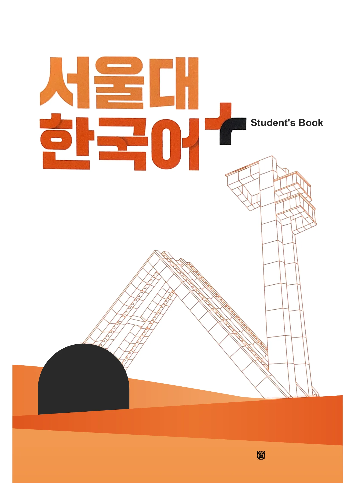
서울대학교 언어교육원 지음장소원김수영김미숙백승주|||1B서울대학교출판문화원1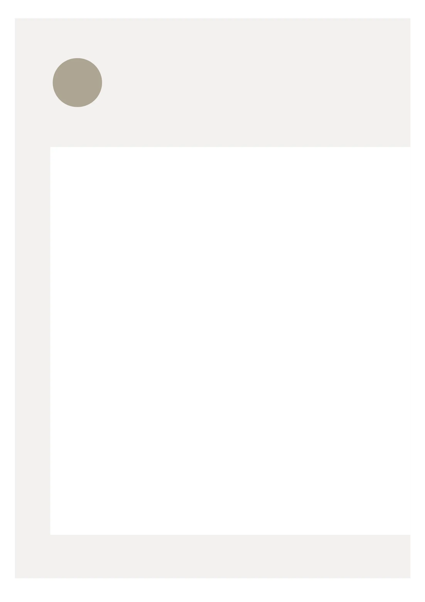
머리말《서울대 한국어+》는 한국어 학습자들의 효율적이고 단계적인 한국어 능력 향상을 목적으로 서울대학교언어교육원의 오랜 교육 경험을 바탕으로 기획되었습니다. 이 시리즈는 한국어 학습자들의 한국어 표현영역과 이해 영역의 고른 향상을 목표로 말하기, 듣기, 읽기, 쓰기 네 가지 기능을 고루 향상할 수 있도록구성된 학습자 친화형 교재이자 학습자들의 주도적 학습을 위한 교재로 기획되었습니다.《서울대 한국어+ Student’s Book 1B》는 한국어를 처음 접하는 성인 한국어 학습자들이 약 200시간의정규과정을 통해 친숙한 주제와 내용으로 한국어 학습의 첫 단계를 시작할 수 있게 구성하였습니다. 이교재의 시작은 어휘 영역으로, 그림을 통해 학습자들의 이해를 돕고자 하나의 장면 안에 해당 어휘가사용되는 상황을 제시함으로써 이를 보면서 개별 어휘의 의미를 이해하고 익힐 수 있도록 하였습니다.기존의 교재가 문법과 표현을 전면에 제시한 것과 달리 이 교재에서는 문법을 별도의 책으로 구성하여학습자들이 먼저 문법과 표현을 익힌 후 주교재의 활동을 통해 내재화할 수 있도록 하였습니다.말하기 활동을 강화하여 학습자들이 익힌 어휘와 문법을 실제 상황에 유용하게 활용할 수 있도록하였습니다. 또한 듣기와 읽기 활동은 전-본-후 단계를 거치도록 구성하였는데 실제성이 높고 유용한담화를 활용하여 듣기와 읽기를 강화하고 학습자의 의사소통 능력을 향상하고자 하였습니다. 모든 말하기,듣기, 읽기 내용을 교재 내 QR 코드를 활용한 음성 자료로 제시함으로써 학습자들이 쉽게 활용할 수 있도록하였습니다.쓰기 영역 역시 단계적으로 구성하여 학습자들이 과정 중심의 쓰기 활동을 통해 표현 능력을 향상할 수있게 하였습니다. 또한 각 단원의 과제는 실제성을 고려하여 목표에 이르기까지 단계별 과정을 거쳐완성도를 높였고 각 단원에서 학습한 어휘와 문법을 충분히 활용하여 익힐 수 있도록 하였습니다.문화 영역은 그림이나 사진을 충분히 활용함으로써 초급 학습자들도 한국의 문화를 쉽게 이해할 수있도록 하였는데 특히 실생활과 밀접한 내용을 담아 학습자들에게 유용하도록 구성하였을 뿐만 아니라수동적인 문화 학습을 벗어나 학습자가 참여하여 이야기할 수 있도록 상호문화적인 내용도 담았습니다.2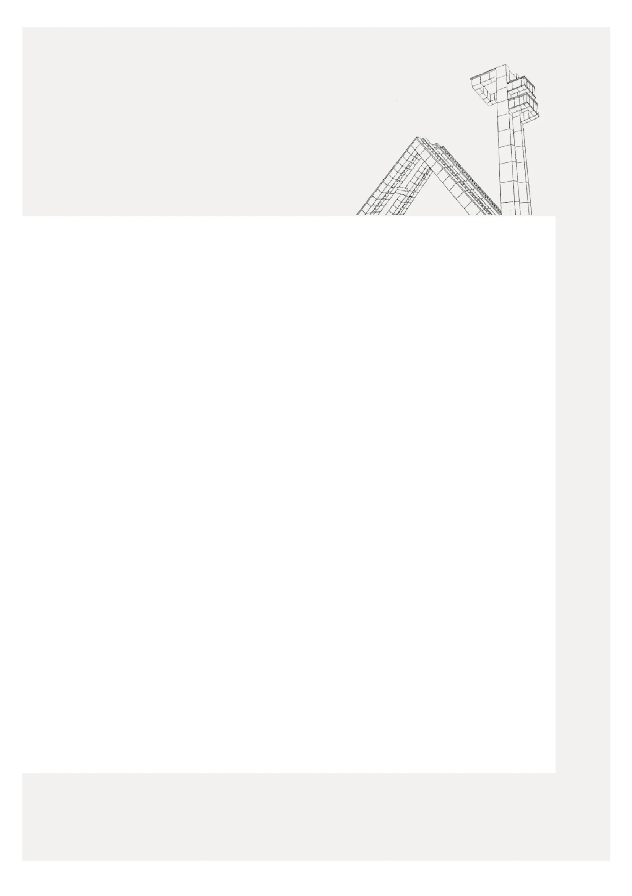
발음은 필수적인 발음만 제시하고 이와 연계하여 복습에서 정리할 수 있도록 하였고, 영어권학습자를 위해 지시문, 새 어휘, 대화문, 문법 설명과 문화 부분을 영어로 번역하여 제시하였습니다.마지막으로 이 책의 특징 가운데 하나는 한글 자모를 책 속 소책자(book in book) 형태로 제공함으로써학습자의 편의를 도모한 것입니다.한국어 표현 중에 옷을 입을 때에는 ‘첫 단추를 잘 끼워야 한다’는 말이 있습니다. 옷의 첫 단추를 잘끼우지 않으면 옷 매무새가 흐트러지듯이 한국어를 배울 때에도 시작을 잘해야 길을 잃지 않고 손쉽게한국어를 익힐 수 있습니다. 《서울대 한국어+》로 한국어 학습의 첫 단추를 잘 끼우시기 바랍니다.이 책이 나오기까지 정말 많은 분들의 수고가 있었습니다. 서울대학교 국어국문학과 장소원 교수님은《서울대 한국어+》 1~6급 교재의 개발을 위한 사전 연구부터 시작해서 전체적인 작업을 총괄해 주셨고,1급 교재의 집필을 총괄한 김수영 교수님을 비롯해서 김미숙, 백승주 선생님은 오랜 기간 원고 집필뿐아니라 검토와 편집 작업에 깊이 관여하며 《서울대 한국어+》의 전체적인 모습을 완성해 주셨습니다. 또내부 감수위원으로서 1급 교재 전권의 내용뿐 아니라 녹음 과정까지 일일이 감수해 주신 김은애교수님과 외부 감수를 맡아 주신 한재영 교수님, 최은규 교수님의 도움이 없었다면 지금과 같은 책의완성도를 기대하기 어려웠음을 잘 알고 있습니다. 깊이 감사드립니다. 그리고 영어 번역을 맡아 주신이소명 번역가와 번역 감수를 맡아 주신 UCLA 손성옥 교수님, 그리고 멋진 삽화 작업으로 빛나는 책을만들어 주신 ㈜예성크리에이티브 분들께도 감사드립니다. 또 녹음을 담당해 주신 성우 김성연, 이상운선생님과 2022년 봄학기에 미리 샘플 단원을 사용한 후 소중한 의견을 주신 1급의 강수빈, 강은숙,민유미, 신윤희, 이수정, 조은주, 하승현, 현혜미 선생님께도 진심으로 감사의 말씀을 드립니다.마지막으로 학술 도서와 성격이 다른 한국어 교재의 출판을 결정하고 물심양면으로 지원해 주신서울대학교출판문화원 이준웅 원장님과, 힘든 과정을 감수하신 관계자분들께 깊이 감사드립니다.2022년 8월서울대학교 언어교육원 원장이호영3 머리말• 2등장인물• 59단원병원9-1. 집에서 쉬고 싶어요• 99-2. 약을 먹고 푹 쉬세요• 1210단원한국 생활10-1. 저는 한국 문화를 좋아합니다• 1810-2. 저는 작년 가을에 한국에 왔습니다• 2111단원교통11-1. 방학에 부산에 가려고 해요• 2711-2. 서울역에서 여기까지 10분쯤 걸립니다• 3012단원전화12-1. 요즘 잘 지내지요?• 3612-2. 약속이 있어서 못 갔어요• 3913단원옷과 외모13-1. 싸고 예쁜 옷이 많아요• 4513-2. 긴 바지를 자주 입어요• 4814단원초대와 약속14-1. 우리 집에 축구 보러 오세요• 5414-2. 주스를 마시면서 기다리고 있어요• 5715단원가족15-1. 아버지는 산에 자주 가세요• 6315-2. 부모님이 한국에 오실 거예요• 6616단원여행16-1. 여기에서 사진을 좀 찍어 주세요• 7216-2. 시간이 있으면 여기에 꼭 가 보세요• 75문법과 표현• 79어휘• 9741B차례
머리말• 2등장인물• 59단원병원9-1. 집에서 쉬고 싶어요• 99-2. 약을 먹고 푹 쉬세요• 1210단원한국 생활10-1. 저는 한국 문화를 좋아합니다• 1810-2. 저는 작년 가을에 한국에 왔습니다• 2111단원교통11-1. 방학에 부산에 가려고 해요• 2711-2. 서울역에서 여기까지 10분쯤 걸립니다• 3012단원전화12-1. 요즘 잘 지내지요?• 3612-2. 약속이 있어서 못 갔어요• 3913단원옷과 외모13-1. 싸고 예쁜 옷이 많아요• 4513-2. 긴 바지를 자주 입어요• 4814단원초대와 약속14-1. 우리 집에 축구 보러 오세요• 5414-2. 주스를 마시면서 기다리고 있어요• 5715단원가족15-1. 아버지는 산에 자주 가세요• 6315-2. 부모님이 한국에 오실 거예요• 6616단원여행16-1. 여기에서 사진을 좀 찍어 주세요• 7216-2. 시간이 있으면 여기에 꼭 가 보세요• 75문법과 표현• 79어휘• 9741B차례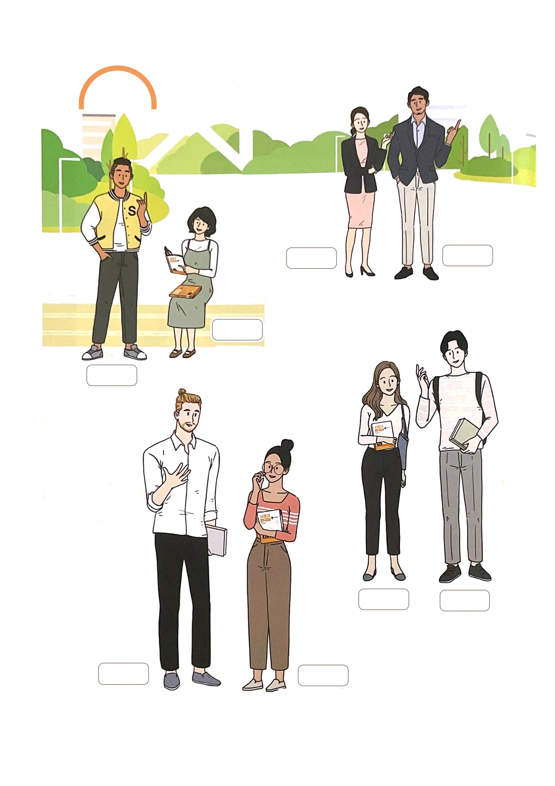
테오브라질, 대학생마리일본, 선생님나나중국, 선생님엥흐몽골, 사업가제니미국, 학생김민우한국, 대학생크리스호주, 요리사소날인도, 컴퓨터 프로그래머등장인물Qahramonlar5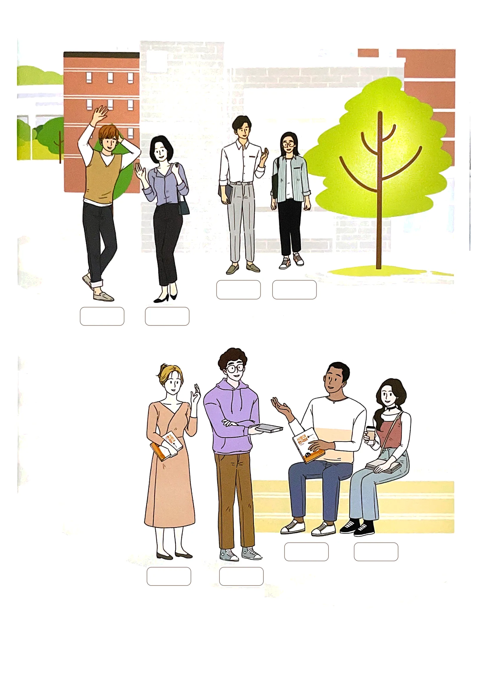
닛쿤태국, 연예인 연습생이유진한국, 회사원하이베트남, 회사원아야나말레이시아, 작가안나러시아, 화가다니엘미국, 대학원생에릭프랑스, 운동선수자밀라우즈베키스탄, 모델6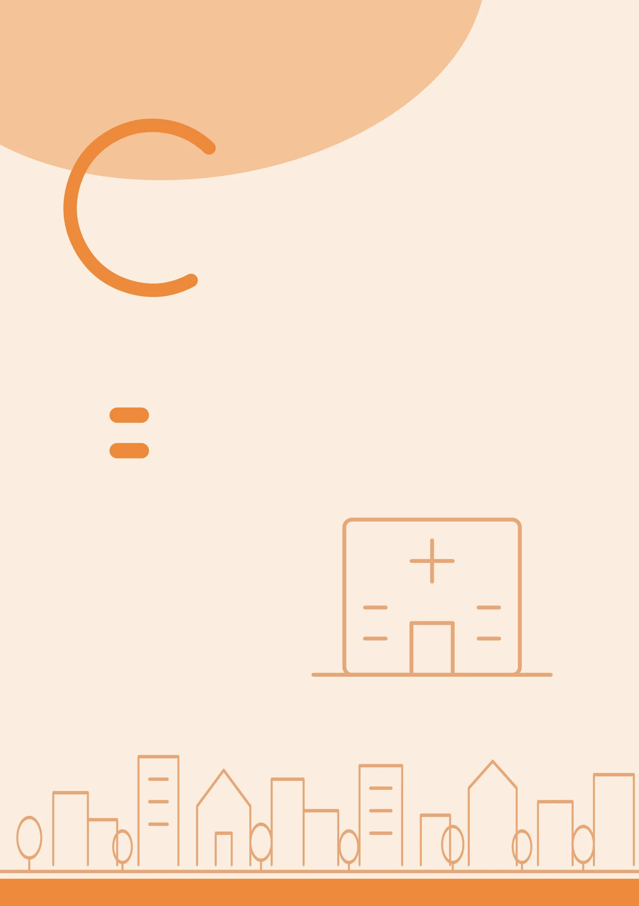
9병원9-1집에서 쉬고 싶어요9-2약을 먹고 푹 쉬세요어디가 아파요?머리가 좀 아파요.오늘은 집에서 쉬고 싶어요.이 약을 드세요.네, 고맙습니다.커피를 마시지 마세요.1 요즘 어디가 아파요?2 이번 주말에 뭐 하고 싶어요?
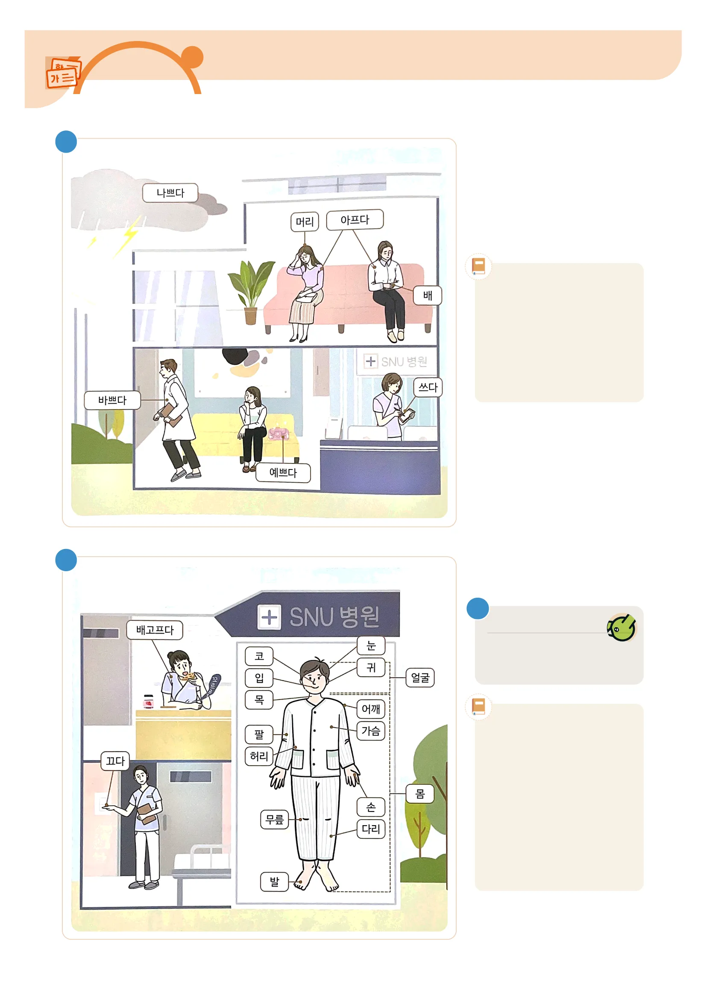
9-1Lug'at어휘집에서 쉬고 싶어요Uyda dam olmoqchiman쓰다 yozmoq예쁘다 chiroyli bo'lmoq끄다 o'chirmoq나쁘다 yomon bo'lmoq아프다 og'rimoq/kasal bo'lmoq배고프다 och bo'lmoq바쁘다 band bo'lmoq이야기해 보세요▸ 요즘 바빠요?▸ 어디에서 휴대폰을 꺼요?얼굴 yuz눈 ko'z머리 bosh목 bo'yin손 qo'l (kaft)발 oyoq(panja)코 burun입 og'iz가슴 ko'krak배 qorin팔 qo'l (bilak)어깨 yelka귀 quloq몸 tana허리 bel다리 oyoq무릎 tizza9123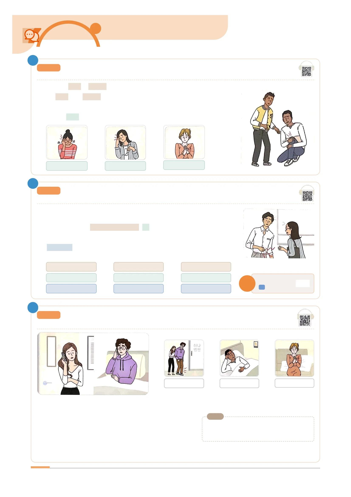
9-1Gapirish말하기말하기 1친구와 연습해 보세요.Sherigingiz bilan mashq qiling.가: 에릭 씨, 다리가 아파요?나: 네. 다리가 좀 아파요.가: 병원에 갔어요?나: 아니요. 오늘 갈 거예요.1)지금2)내일3)저녁말하기 2친구와 연습해 보세요.Sherigingiz bilan mashq qiling.가: 하이 씨, 오늘 수업 끝나고 같이 숙제할까요?나: 미안해요. 오늘은 집에서 쉬고 싶어요. 배가 아파요.가: 언제부터 아팠어요?나:오늘 아침부터요.1)집에 일찍 가다팔어제2)집에서 좀 자다머리어제 저녁3)숙제 안 하고 쉬다어깨아까‘ㅡ’ 탈락☞81쪽동-고 싶다말하기 3친구와 이야기해 보세요.Sherigingiz bilan suhbatlashing.1)다리, 아프다2)3)제 니: 다니엘 씨, 오늘 학교에 왜 안 와요?다니엘:어젯밤부터 배가 많이 아파요. 그래서 학교에 못 가요.제 니: 병원에 갔어요?다니엘:아니요. 빨리 병원에 가고 싶어요. 하지만 혼자 못 가요.제 니: 그럼 저하고 같이 갈까요?다니엘:네. 정말 고마워요.• 어젯밤부터 [어젣빰부터]• 못 가요 [몯까요]발음아까 hozirgina10문법과표현456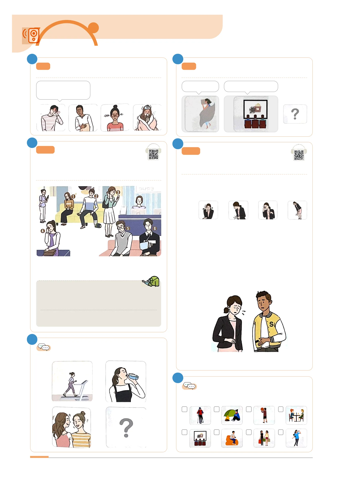
9-1Tinglash듣기준비어디가 아파요?Qayeringiz og'riyapti?머리가 아파요.집에서 쉬고 싶어요.듣기 1여기는 병원입니다. 잘 듣고내용에 맞는 그림의 번호를쓰세요.Bu kasalxona. Diqqat bilan tinglang vavaziyatni tasvirlagan rasmga raqam yozing.1) ( )2) ( )3) ( )4) ( )병원, 은행, 우체국에서방문 이유를 물을 때Kasalxona, bank yoki pochtada nima uchun kelganingizniso'rashganda어떻게 오셨어요?Nima ish bilan keldingiz?건강을 위해서 뭘 자주 해요?Sog'lig'ingiz uchun ko'pincha nima qilasiz?준비지금 뭘 하고 싶어요?Hozir nima qilishni xohlaysiz?자고 싶어요.영화를 보고 싶어요.듣기 2테오와 나나의 대화입니다. 잘듣고 질문에 대답하세요.Bu Teo va Nana suhbati. Diqqat bilantinglang va savollarga javob bering.1여자는 어디가 아파요?①②③④2맞는 것을 고르세요.① 남자는 집에서 쉬고 싶어 해요.② 여자는 남자하고 병원에 갔어요.③ 두 사람은 다음 주에 만날 거예요.요즘 스트레스가 많아요. 뭘 하고싶어요?Shu kunlarda stressdasiz. Nima qilishni xohlaysiz?아직 hali ham11789101112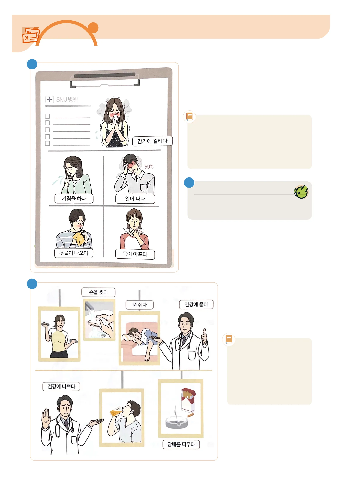
9-2Lug'at어휘약을 먹고 푹 쉬세요Dori iching va yaxshilab dam oling감기에 걸리다 shamollamoq콧물이 나오다 burni oqmoq기침을 하다 yo'talmoq목이 아프다 tomog'i og'rimoq열이 나다 isitmasi chiqmoq이야기해 보세요▸ 감기에 걸렸어요. 어디가 아파요?▸ 무슨 음식이 건강에 좋아요?건강에 좋다 sog'liqqa foydalibo'lmoq푹 쉬다 yaxshilab dam olmoq건강에 나쁘다 sog'liqqa zararlibo'lmoq담배를 피우다 chekmoq손을 씻다 qo'l yuvmoq12123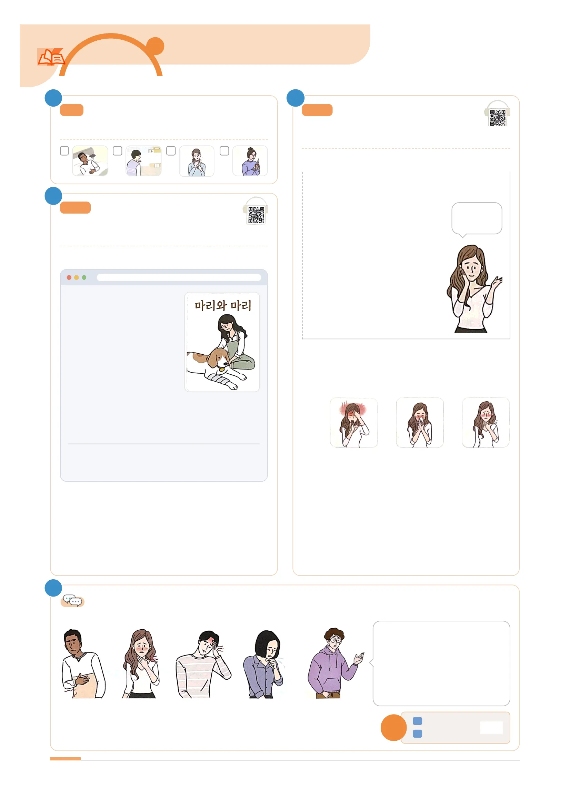
9-2O'qish읽기준비감기에 걸렸어요. 여러분 나라에서는어떻게 해요?Shamollasangiz, yurtingizda nima qilasiz?읽기 1영화 소개입니다. 잘 읽고맞으면 ○, 틀리면 × 하세요.Bu film haqida taqriz. Diqqat bilan o'qing,to'g'ri bo'lsa ○, noto'g'ri bo'lsa × qo'ying.★★★★☆ 이 강아지는 집이 없어요.눈도 아프고 다리도다쳤어요. 하지만 병원에 못갔어요. 이 여자는 약국앞에서 강아지를 처음봤어요. 강아지의 목에이름표가 있었어요. 강아지이름은 ‘마리’예요. 여자의 이름도 ‘마리’예요. 이 영화를 더 알고 싶어요? 그럼 이 영화를보세요.↳ 이 영화가 정말 슬퍼요. 보지 마세요.↳ 아니에요. 재미있어요! 꼭 보세요!1) 영화의 여자는 다리가 아팠어요.( )2) 영화의 여자하고 강아지는 이름이 같아요.( )읽기 2제니의 이야기입니다. 잘 읽고질문에 답하세요.Bu Jenni haqidagi matn. Diqqat bilan o'qingva savollarga javob bering.1제니는 어디가 아팠어요? 모두 고르세요.①②③2맞는 것을 고르세요.① 제니는 가족을 만났어요.② 제니는 약을 먹고 쉬었어요.③ 제니는 지난주에 많이 아팠어요. 지난주에 저는 감기에걸렸어요. 콧물도 나오고 목도아팠어요. 그래서 학교에 못가고 집에 있었어요. 가족이정말 보고 싶었어요. 제 룸메이트 나나 씨가전통차를 줬어요. “제니 씨, 많이아파요? 이 차가 감기에 좋아요.많이 드세요.” 차를 마시고집에서 푹 쉬었어요. 그래서지금은 안 아파요.나나 씨,고마워요.여러분은 한국에서 병원에 갔어요? 어디가 아팠어요? 어떻게 했어요?Koreyada kasalxonaga borganmisiz? Qayeringiz og'rigan edi? Nima qildingiz?동-(으)세요☞82쪽동-지 마세요저는 다리가 많이 아팠어요.병원에 가고 싶었어요. 하지만저는 한국어를 아직 잘 못해요.그래서 한국 친구하고 같이병원에 갔어요. 친구가 저를많이 도와줬어요.다치다 jarohatlanmoq처음 birinchi이름표 ism yorlig'i꼭 albatta같다 bir xil bo'lmoq전통 an'ana약 dori13문법과표현4567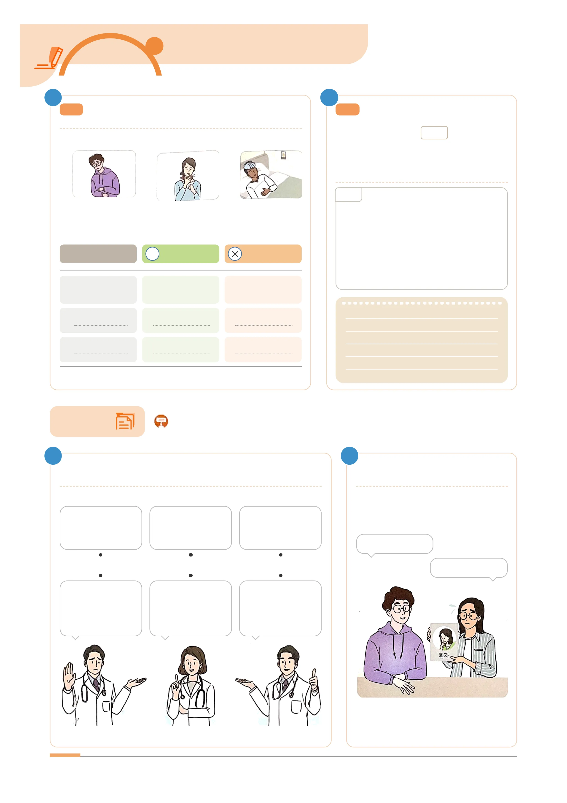
의사와 환자가 되어 대화해 보세요.Sherigingiz bilan shifokor va bemor rolini ijro eting.9-2Yozish쓰기준비그림을 보고 써 보세요.Rasmga qarab u haqida gaplar yozing.1)2)3)1) 배가 아파요.학교에 못 가요.• 병원에 가세요.• 아이스크림을먹지 마세요.2).•.•.3).•.•.어떻게 아파요?하세요○하지 마세요쓰기여러분은 어디가 아팠어요?그때 어떻게 했어요? 누가도와줬어요? 보기와 같이 써보세요.Qayeringiz og'rigan edi? Nima qildingiz?Kim yordam berdi? Namunadagidektajribangizni yozing. 저는 2월에 한국에 왔어요. 한국의겨울이 정말 추웠어요. 그래서 감기에걸렸어요. 열도 나고 기침도 많이했어요. 너무 아팠어요. 고향에 가고싶었어요. 제 친구가 약을 줬어요. 약을먹고 푹 쉬었어요. 정말 고마웠어요.보기Vazifa 과제1알맞은 것을 연결하세요.Dialoglarni chiziq bilan bog'lang.“감기에 걸렸어요.목이 아프고콧물이 나요.”“눈이 아파요.그리고 눈이 항상피곤해요.”“요즘 밤에 잘 못자요.”밤에 휴대폰을보지 마세요.컴퓨터를 많이하지 마세요.커피를 많이마시지 마세요.그리고 운동을하세요.집에서 푹 쉬세요.그리고 물을 많이드세요.2카드를 뽑으세요.Karta tanlang.어떻게 오셨어요?기침을 많이 해요.주다 bermoq14891011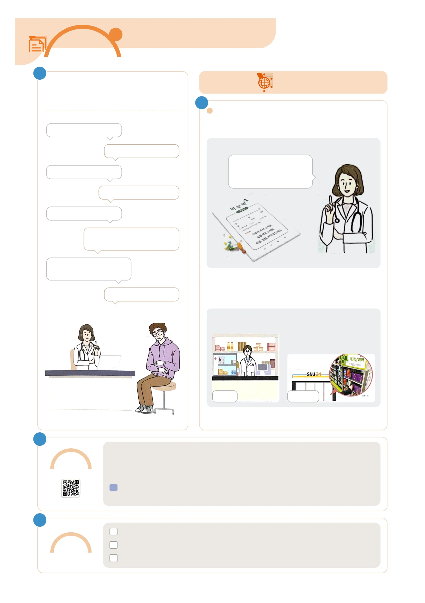
9-2Vazifa과제3여기는 병원입니다. 의사와 환자가되어 대화해 보세요.Bu kasalxona. Sherigingiz bilan shifokor va bemorrolini ijro eting.어떻게 오셨어요?배가 아파요.언제부터 아팠어요?오늘 아침부터 아팠어요.어제 뭘 먹었어요?아이스크림을 많이 먹었어요.그리고 커피도 많이 마셨어요.이 약을 드시고 푹 쉬세요.커피를 마시지 마세요.네. 감사합니다.Madaniyat 문화약국에서 약을 사요.병원에서 처방전을 받고 약국에서 약을 사요.처방전이 없어도 약국이나 편의점에서 살 수 있는 약이있어요.하루에 세 번 드세요.밥을 먹고 드세요.아침, 점심, 저녁에 드세요.약국편의점발음Talaffuz‘못’ 뒤에 자음 ‘ㄱ, ㄷ, ㅂ, ㅅ, ㅈ’이 오면, ‘못’은 [몯]으로, 자음은 [ㄲ, ㄸ, ㅃ, ㅆ, ㅉ]로발음합니다.‘못’ dan keyin ‘ㄱ, ㄷ, ㅂ, ㅅ, ㅈ’ kelsa, u [몯] deb, keyingi undoshlar esa [ㄲ, ㄸ, ㅃ, ㅆ, ㅉ] kabi taranglashib talaffuzqilinadi.예가: 오늘 산에 가요?나: 아니요. 못 가요. 다리가 아파요.가: 옷을 샀어요?나: 아니요. 못 샀어요. 너무 비쌌어요.자기 평가Tekshiruv목이 아파요. 어떻게 해요?무슨 음식이 건강에 좋아요?오늘 저녁에 뭘 하고 싶어요?1512131415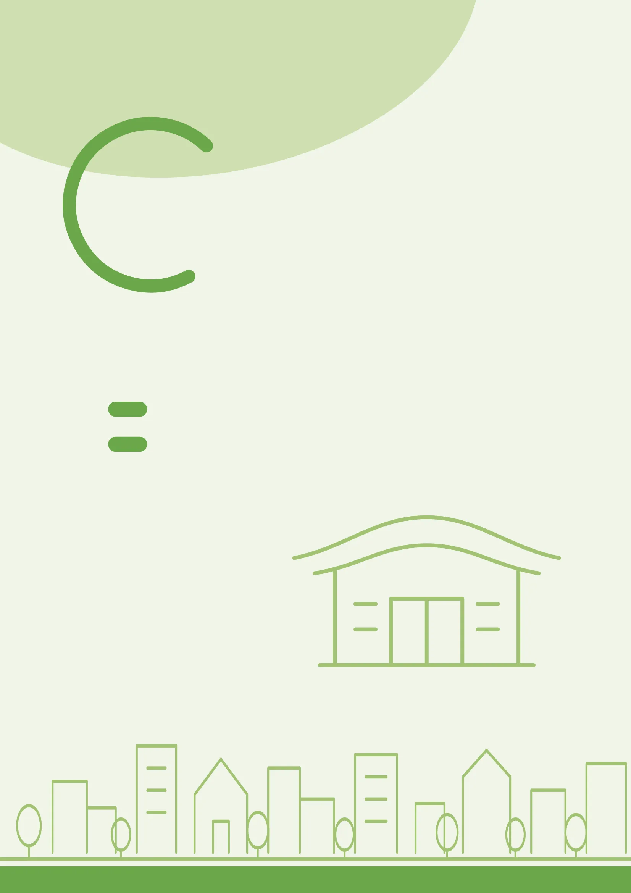
10한국 생활10-1저는 한국 문화를 좋아합니다10-2저는 작년 가을에 한국에 왔습니다저는 회사원입니다.언제 한국에 왔습니까?작년 봄에 왔습니다.한국어를 열심히 공부합니다.한국 음식을 좋아합니까?내년에 고향에 갈 겁니다.1 언제 한국어 공부를 시작했습니까?2 한국에서 무엇을 하고 싶습니까?
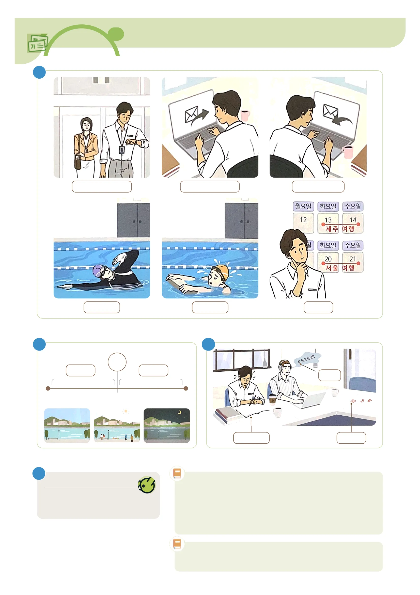
10-1Lug'at어휘저는 한국 문화를 좋아합니다Men koreys madaniyatini yoqtiraman회사에 다니다메일을 보내다메일을 받다잘하다못하다계획12시오전오후잘열심히제일이야기해 보세요▸ 무슨 운동을 잘해요?▸ 무슨 음식을 제일 좋아해요?회사에 다니다 kompaniyadaishlamoq메일을 보내다 xat yubormoq메일을 받다 xat olmoq잘하다 yaxshi bilmoq (ustabo'lmoq)못하다 yomon bilmoq (qilaolmaslik)계획 reja오전 ertalab (AM)오후 tushdan keyin (PM)열심히 tirishqoqlik bilan잘 yaxshi제일 eng181234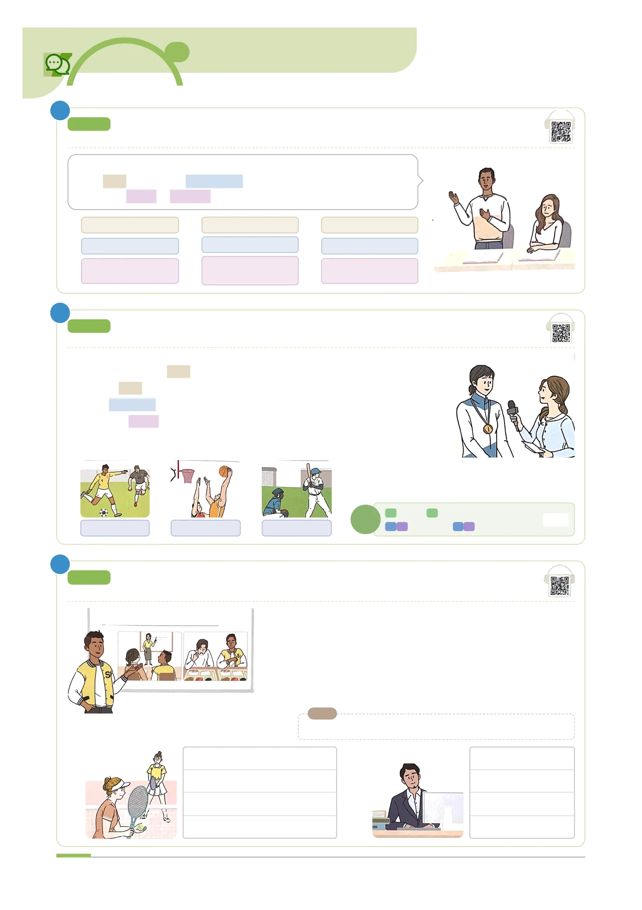
10-1Gapirish말하기말하기 1친구와 연습해 보세요.Sherigingiz bilan mashq qiling.1)하이베트남 사람회사, 일하다2)제니미국 사람언어교육원,한국어를 배우다3)소날인도 사람컴퓨터 회사, 다니다여러분, 안녕하십니까?저는 에릭입니다. 저는 프랑스 사람입니다.저는 지금 대학원에 다닙니다. 만나서 반갑습니다.말하기 2친구와 연습해 보세요.Sherigingiz bilan mashq qiling.가: 안녕하세요? 저는 수영 선수 정해원입니다.나: 하루에 수영 연습을 보통 몇 시간 합니까?가: 매일 여덟 시간쯤 합니다.나: 주말에도 수영장에 갑니까?가: 네. 매일 연습을 합니다.1)4시간2)3시간3)6시간명입니다, 명입니까?☞83쪽동형-ㅂ/습니다, 동형-ㅂ/습니까?말하기 3친구와 이야기해 보세요.Sherigingiz bilan suhbatlashing.테오: 안녕하십니까? 저는 테오입니다. 브라질 사람입니다.제 여자 친구는 한국 사람입니다. 그래서 저는 한국어를 공부합니다.한국어를 아직 잘 못합니다. 하지만 한국어 공부가 재미있습니다.한국어 수업이 끝나고 친구들과 학생 식당에서 밥을 먹습니다.그리고 공원에서 산책도 합니다.한국 생활이 정말 좋습니다.1)안나, 러시아 사람한국 문화를 좋아하다평일 오후에 친구들과 테니스를 치다한국 생활이 재미있다2)한국 생활• 안녕하십니까 [안녕하심니까] • 공부합니다 [공부함니다]발음대학원 magistratura언어교육원 Til ta'limi instituti하루 kun연습 mashq시간 soat19문법과표현567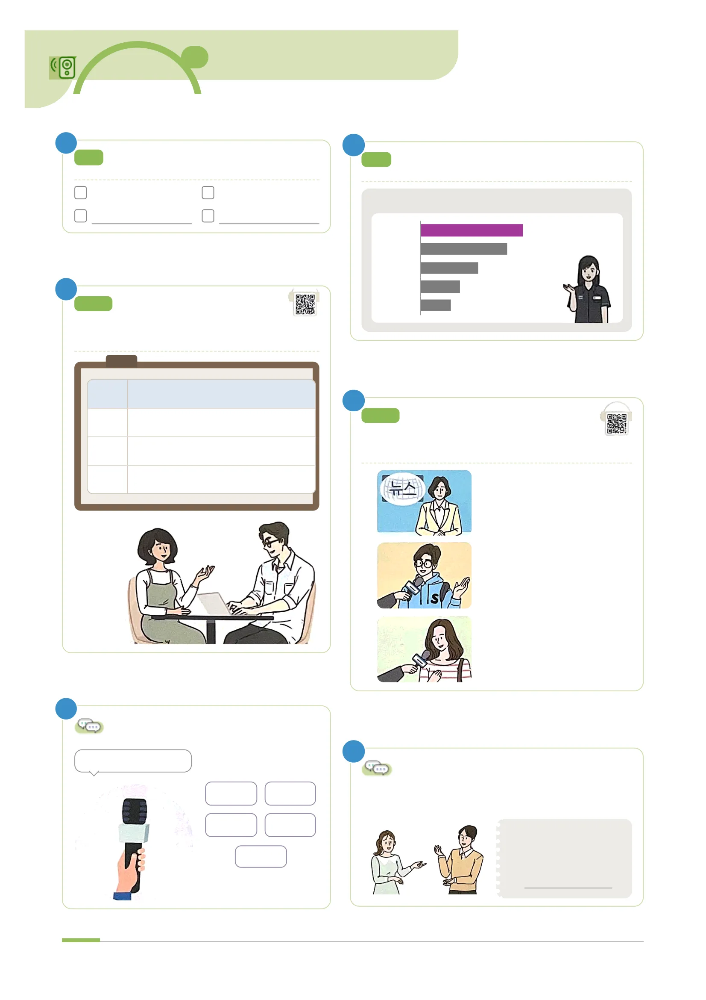
10-1Tinglash듣기준비자기소개할 때 무슨 말을 합니까?O'zingizni tanishtirganda nima deysiz?이름직업✔듣기 1마리의 인터뷰입니다. 잘 듣고쓰세요.Bu Marining intervyusi. Diqqat bilantinglang va bo'sh joylarni to'ldiring.이름마리국적1)직업2)한국어3) ( 잘합니다 / 잘 못합니다 / 못합니다 )친구를 인터뷰해 보세요.Sherigingizdan intervyu oling.이름국적직업한국어?이름이 무엇입니까?준비아르바이트를 하고 싶습니까?Yarim kunlik ish xohlaysizmi?한국 대학생들은 어디에서 아르바이트하고 싶어 해요?카페32.5%영화관27.5%편의점18.2%식당12.3%PC방9.5%듣기 2뉴스입니다. 잘 듣고 맞는 것을 연결하세요.Bu yangiliklar. Diqqat bilan tinglang vaintervyuni gap bilan moslang.1)• • ① “아르바이트 계획을인터뷰했습니다.”2)• • ② “저는 영화관에서 일하고싶습니다.”3)• • ③ “저는 카페에서아르바이트하고 싶습니다.”무슨 아르바이트를 하고 싶습니까? 친구를 인터뷰해 보세요.Sherigingizdan intervyu olib, qanday yarim kunlik ishxohlashini so'rang.✎ 무엇을 좋아합니까?✎ 무엇을 잘합니까?✎ ?만들다 yasamoq208910111213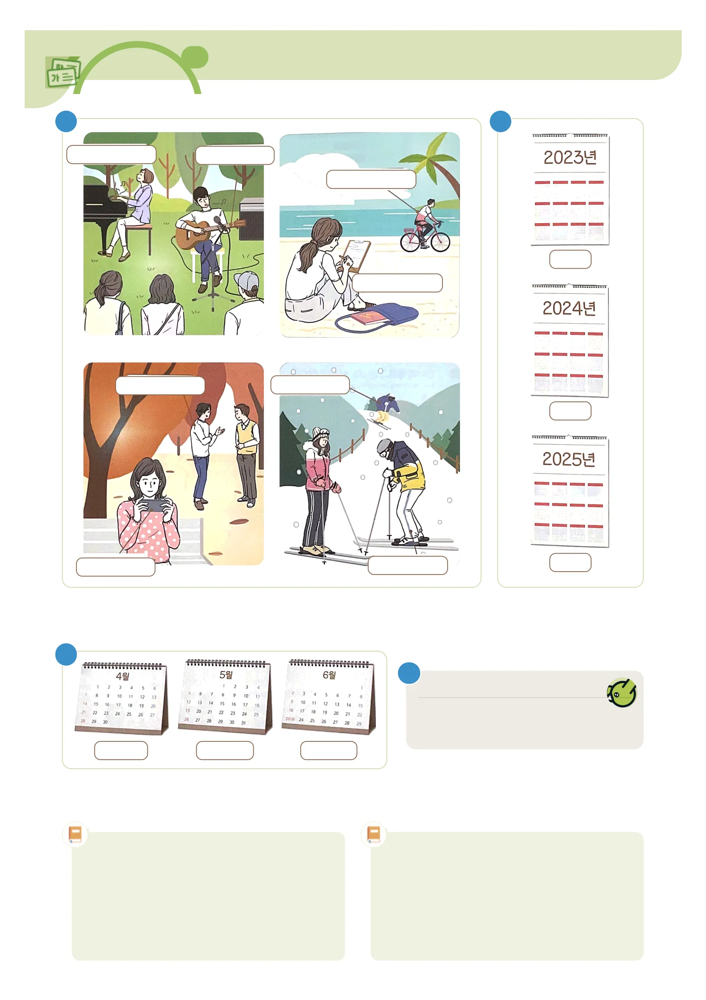
10-2Lug'at어휘저는 작년 가을에 한국에 왔습니다Men o'tgan kuzda Koreyaga keldim피아노를 치다기타를 치다자전거를 타다그림을 그리다친구를 사귀다게임을 하다스키를 타다연습하다작년올해내년지난달이번 달다음 달이야기해 보세요▸ 그림을 잘 그려요?▸ 언제 한국에 왔어요?피아노를 치다 pianino chalmoq기타를 치다 gitara chalmoq자전거를 타다 velosiped haydamoq그림을 그리다 rasm chizmoq작년 o'tgan yil올해 shu yil내년 kelasi yil친구를 사귀다 do'st orttirmoq스키를 타다 chang'i uchmoq게임을 하다 o'yin o'ynamoq연습하다 mashq qilmoq지난달 o'tgan oy이번 달 shu oy다음 달 kelasi oy211234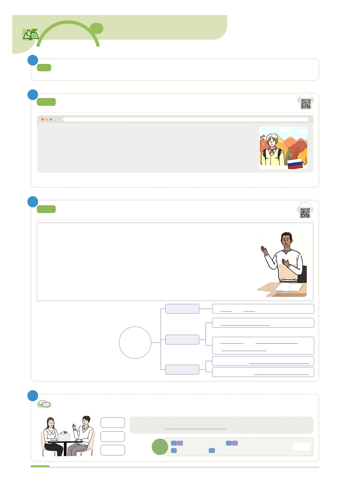
10-2O'qish읽기준비한국 생활이 어떻습니까?Koreyadagi hayot qanday?읽기 1안나의 블로그입니다. 잘 읽고 맞으면 ○, 틀리면 × 하세요.Bu Annaning blogi. Diqqat bilan o'qing, to'g'ri bo'lsa ○, noto'g'ri bo'lsa × qo'ying.안녕하십니까? 저는 안나입니다. 러시아 화가입니다.저는 작년 가을에 한국에 왔습니다. 한국에서 캠핑도 하고 단풍 그림도 많이그렸습니다. 한국의 가을은 정말 아름답습니다.내년에는 한국의 화가들을 만날 겁니다. 한국에서 열심히 그림을 그리고 친구도 사귈겁니다.1) 안나는 한국에서 캠핑을 했습니다.( )2) 안나는 한국의 화가들을 많이 사귀었습니다. ( )읽기 2에릭의 발표입니다. 잘 읽고 질문에 답해 보세요.Bu Erikning taqdimoti. Diqqat bilan o'qing va savollarga javob bering.1 맞는 것을 고르세요.① 에릭은 한국 요리를잘합니다.② 에릭은 작년에 한국에왔습니다.③ 에릭은 한국 친구를 많이사귀었습니다.저는 작년 여름에 한국에 왔습니다. 월요일부터 금요일까지 대학원에서 공부도 하고한국어도 배웁니다. 그래서 조금 바쁩니다. 하지만 한국어 공부는 정말 재미있습니다.한국의 여름은 아주 덥습니다. 한국 사람들은 여름에 삼계탕을 많이 먹습니다. 저는지난주 주말에 우리 반 친구들하고 삼계탕을 먹었습니다. 정말 맛있었습니다. 우리는삼계탕을 먹고 한강 공원에서 자전거를 탔습니다. 이렇게 저의 한국 생활은 아주재미있습니다.앞으로 한국 친구를 더 많이 사귀고 싶습니다. 그리고 한국어 공부도 열심히 할겁니다.2 빈칸에 알맞은말을 쓰세요.한국 생활한국어 공부지난주 주말계획1)부터까지 한국어를 배웁니다.2)을/를 먹었습니다.3)에서을/를았습니다/었습니다.한국 친구를 4).한국어 공부를 5).친구의 학교생활을 인터뷰해 보세요.Sherigingizdan maktab hayoti haqida intervyu oling.수업숙제반 친구친구 이름 : 동형-았습니다/었습니다, 동형-았습니까/었습니까?☞84쪽동-(으)ㄹ 겁니다, 동-(으)ㄹ 겁니까?단풍 kuzgi xazon아름답다 go'zal bo'lmoq화가 rassom삼계탕 jenshenli tovuq sho'rvasi이렇게 mana bunday앞으로 bundan keyin22문법과표현5678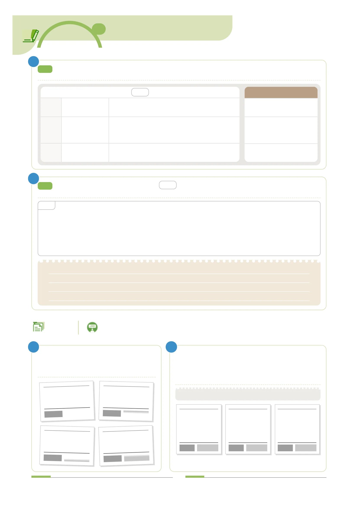
Vazifa과제우리 반 뉴스를 만들어서 발표해 보세요.Sinfimiz uchun yangilik yozing va taqdim eting.10-2Yozish쓰기준비여러분의 한국 생활이 어떻습니까? 메모해 보세요.Koreyadagi hayot qanday ekanini yozing.보기처음인사, 소개안녕하십니까?아야나, 말레이시아, 작가중간1. 학교생활2. 한국 생활3. 계획월요일~금요일: 한국어 공부평일 오후: 회사, 주말: 여행, 사진 여행, 책 쓰기끝인사제 발표는 여기까지입니다.감사합니다.나의 발표쓰기한국 생활이 어떻습니까? 메모를 보고 보기 와 같이 발표문을 써 보세요.Koreyadagi hayot qanday? Qaydlaringizga qarab namunadagidek taqdimot yozing.안녕하십니까? 저는 아야나입니다. 말레이시아에서 왔습니다. 작가입니다.요즘 저는 월요일부터 금요일까지 한국어를 공부합니다. 한국어 공부가 재미있습니다. 평일 오후에는 회사에갑니다. 회사 일이 아주 많습니다. 주말에는 보통 여행을 합니다. 사진도 찍고 구경도 많이 합니다. 앞으로 계속한국에서 여행을 하고 책을 쓰고 싶습니다.제 한국 생활이 정말 재미있습니다. 여러분의 한국 생활은 어떻습니까?제 발표는 여기까지입니다. 감사합니다.보기1 여러분은 한국 뉴스를 읽어요? 뉴스 제목을 같이 읽어 보세요.Koreys yangiliklarini o'qiysizmi? Keling, yangiliksarlavhalarini birga o'qiymiz.한국 vs 일본오늘 밤 10시!축구TV!내일의 날씨오늘의 인터뷰저도 한국사람입니다이번 주 봄 축제,어디에 가고싶습니까?2 우리 반 친구들의 한국 생활 뉴스를 만들어 볼 거예요. 뭐를 쓰고 싶어요? 친구와 같이 제목을 생각해보세요."Koreyadagi hayot" yangilik maqolasini tuzamiz. Nima haqidayozasiz? Sherigingiz bilan sarlavha o'ylab toping.뉴스 제목: 〈〉우리 반 뉴스우리 반친구들의 오늘저녁 식사우리 반친구들의한국 생활우리 반친구들의 고향날씨작가 yozuvchi뉴스 yangiliklar식사 ovqat (taom)239101112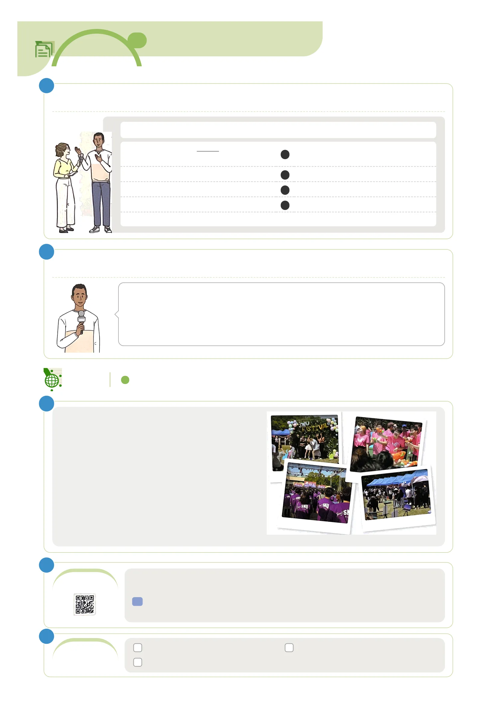
Madaniyat문화한국 대학교의 축제를 아세요?10-2Vazifa과제3 질문을 3개 쓰고 친구들을 인터뷰해 보세요.3 ta savol yozing va ular bilan sinfdoshlaringizdan intervyu oling.〈 우리 반 친구들의 저녁 식사 〉안녕하세요? 저는 기자입니다.이름이 무엇입니까?➜에릭입니다.오늘 저녁에 무엇을 먹을 겁니까?➜집에서 요리할 겁니까?➜누구하고 같이 먹을 겁니까?➜네. 인터뷰 감사합니다.4 친구들을 인터뷰하고 뉴스처럼 발표해 보세요.Sinfdoshlaringizdan intervyu oling va muxbir kabi taqdim eting.저는 우리 반 친구 5명을 인터뷰했습니다.인터뷰 주제는 ‘우리 반 친구들의 저녁 식사’입니다.우리 반 친구들은 보통 저녁에 집에서 요리를 안 합니다.식당에서 먹습니다. 오늘 저녁에는 친구하고 같이 피자를 먹을 겁니다.SNU 뉴스 에릭입니다.한국의 대학교에서는 보통 봄과 가을에 축제를 합니다.봄과 가을에는 날씨가 좋습니다. 음식도 많고 공연도많이 있습니다. 축제가 아주 재미있습니다.© 연합뉴스발음Talaffuz받침소리 [ㅂ]은 뒤에 ‘ㄴ, ㅁ’이 오면 [ㅁ]으로 발음됩니다.Oxirgi [ㅂ] undoshidan keyin ‘ㄴ, ㅁ’ kelsa, [ㅁ] deb talaffuz qilinadi.예가: 수업이 끝나고 무엇을 합니까?나: 공원에서 산책합니다.가: 학생입니까?나: 아니요. 저는 학생이 아닙니다.자기 평가Tekshiruv주말에 보통 뭘 합니까?한국에서 뭘 하고 싶습니까?내년에 뭘 할 겁니까?241314151617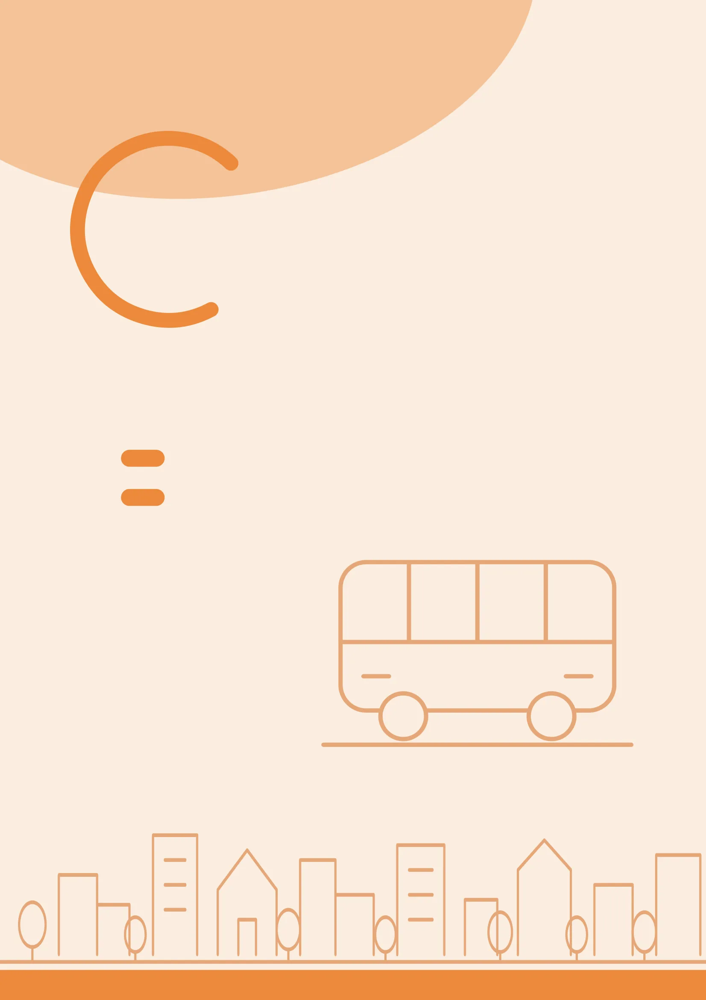
11교통11-1방학에 부산에 가려고 해요11-2서울역에서 여기까지 10분쯤 걸립니다학교에 어떻게 와요?지하철로 와요.방학에 제주도에 가려고 해요.여기에서 얼마나 걸려요?버스로 30분쯤 걸려요.다음 역에서 내려야 돼요.1 학교에 어떻게 와요?2 집에서 학교까지 얼마나 걸려요?
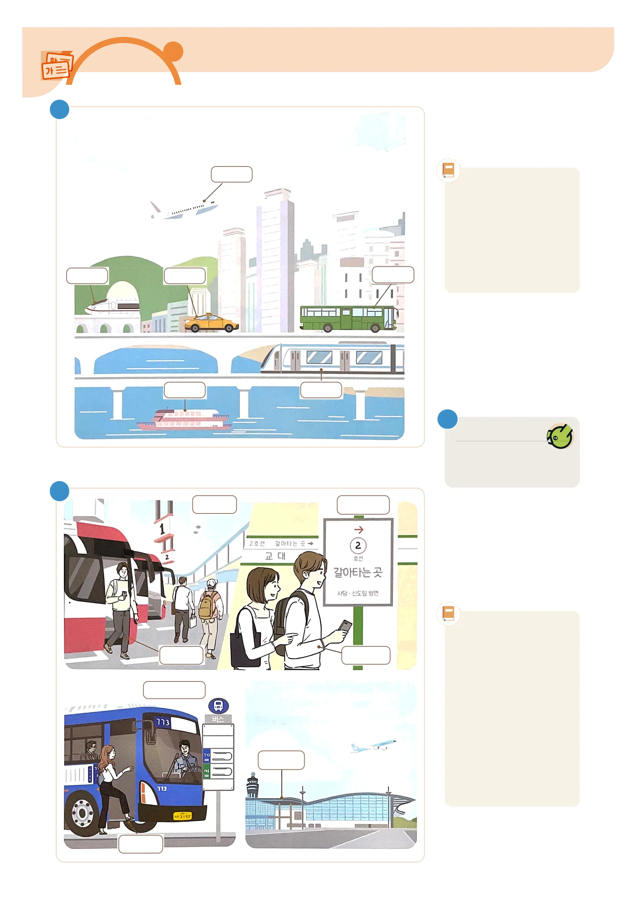
11-1Lug'at어휘방학에 부산에 가려고 해요Ta'tilda Pusanga bormoqchiman비행기기차택시버스배지하철터미널지하철역내리다갈아타다버스 정류장타다공항비행기 samolyot기차 poyezd택시 taksi버스 avtobus배 qayiq지하철 metro이야기해 보세요▸ 뭘 자주 타요?▸ 학교에 뭘 타고 와요?지하철역 metro bekati내리다 tushmoq(transportdan)버스 정류장 avtobusbekati타다 chiqmoq(transportga)터미널 terminal갈아타다 boshqatransportga o'tmoq공항 aeroport27123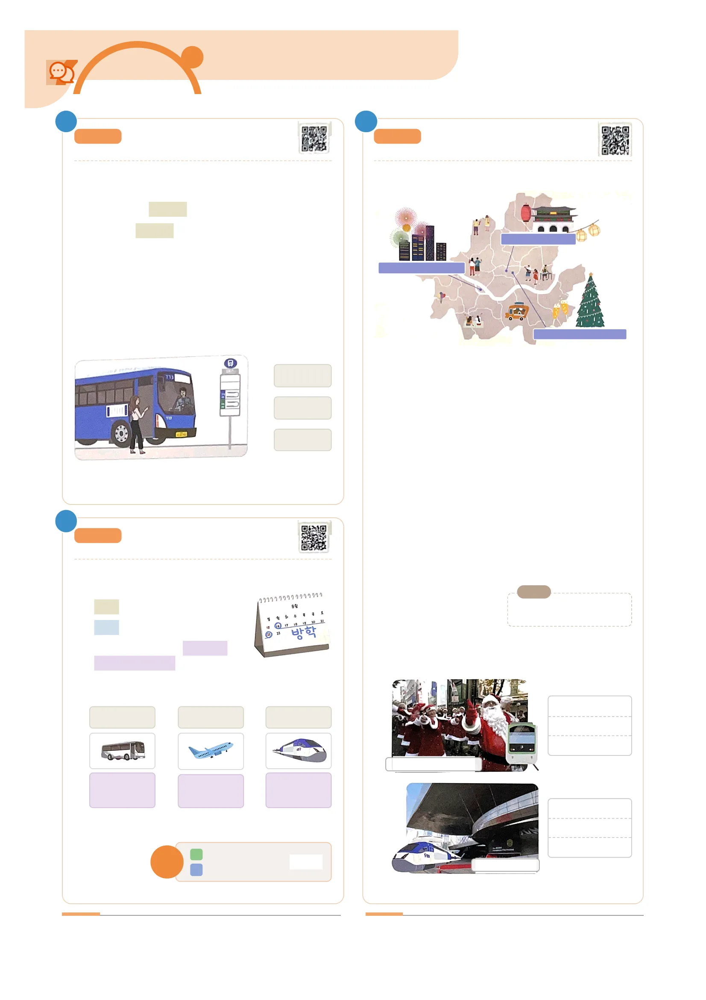
11-1Gapirish말하기말하기 1친구와 연습해 보세요.Sherigingiz bilan mashq qiling.가: 이 버스가 강남역으로 가요?나: 아니요. 강남역으로 안 가요.저쪽에서 버스를 타세요.가: 네. 감사합니다.1)시청2)여의도3)고속터미널말하기 2친구와 연습해 보세요.Sherigingiz bilan mashq qiling.가: 방학에 어디에 갈 거예요?나: 경주에 가려고 해요.가: 기차를 타고 갈 거예요?나: 네. 그래서 오후에 기차표를예매하려고 해요.1)부산버스표, 사다2)제주도비행기표,알아보다3)대전KTX 표,예매하다명(으)로☞85쪽동-(으)려고 하다말하기 3친구와 이야기해 보세요.Sherigingiz bilan suhbatlashing.테오: 이번 방학에 뭐 해요?제니: 친구하고 같이 여의도에 갈 거예요.여의도에서 축제를 보려고 해요.테오: 아, 저도 가고 싶어요.제니: 그래요? 그럼 우리 같이 갈까요?테오: 네. 좋아요. 여의도에 어떻게 가요?제니: 서울역에서 503번 버스를 타고 가요.그 버스가 여의도로 가요.1)명동크리스마스 축제지하철 4호선2)서울 빛초롱 축제서울 세계 불꽃 축제명동 크리스마스 축제• 서울역 [서울력]발음명동 크리스마스 축제부산 영화 축제시청 Shahar hokimiyati여의도 Yoido고속터미널 Tezyurar avtobus terminali경주 Kyonju표 chipta예매하다 bron qilmoq알아보다 ko'rib chiqmoq대전 Tejon축제 festival28문법과표현456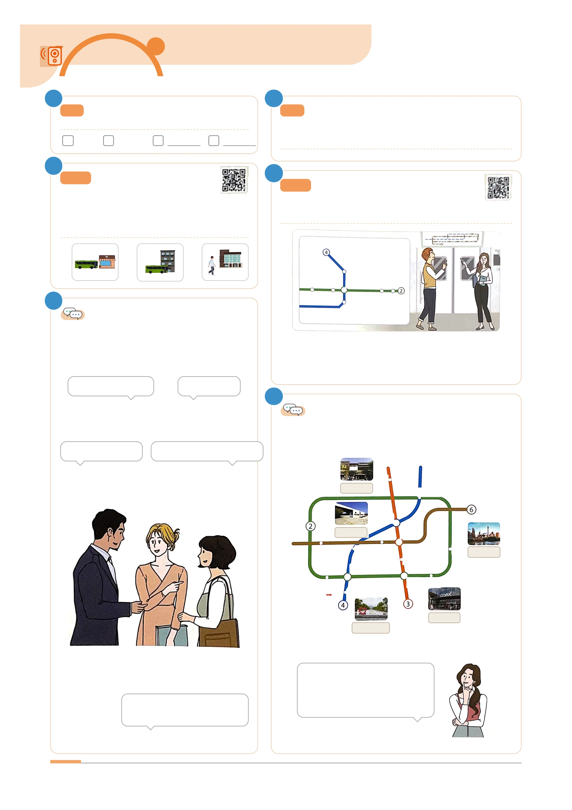
11-1Tinglash듣기준비여러분은 학교에 뭘 타고 와요?Maktabga qanday kelasiz?버스지하철듣기 1에릭은 언어교육원에어떻게 왔어요? 잘 듣고맞는 것을 고르세요.Erik Til ta'limi institutiga qandaykeldi? Diqqat bilan tinglang va to'g'rirasmni tanlang.①②③집에 어떻게 가요? 친구들하고이야기해 보세요.Uyga qanday borasiz? Sinfdoshlaringiz bilangaplashing.집에 어떻게 가요?걸어서 가요.어디에서 내려요?저는 지하철을 타고 가요.사당역에서 내려요.엥흐 씨는 집에 어떻게 가요?준비한국에서 지하철을 탔어요? 어디에서 탔어요?어디에서 내렸어요?Koreyada metroda yurganmisiz? Qaysi bekatdan chiqdingiz?Qayerda tushdingiz?듣기 2제니와 닛쿤의 대화입니다. 잘 듣고맞으면 ○, 틀리면 × 하세요.Bu Jenni va Nitkun suhbati. Diqqat bilan tinglang,to'g'ri bo'lsa ○, noto'g'ri bo'lsa × qo'ying.1) 남자는 지금 학교로 가려고 해요.()2) 여자는 사당역에서 4호선으로 갈아탈거예요.()이수서울대입구낙성대사당교대강남남태령어디에 가고 싶어요? 거기에 어떻게 가요?어디에서 갈아타요?Qayerga bormoqchisiz? Metroda u yerga qanday borasiz?Qayerda boshqa liniyaga o'tasiz?안국동대문역사문화공원충무로약수상수이촌이태원신사잠실사당서울대입구출발 교대삼성대공원인사동박물관롯데월드코엑스몰서울대공원저는 서울대공원에 가고 싶어요.서울대입구역에서 2호선을 타고사당역에서 4호선으로 갈아타요.그리고 대공원역에서 내려요.살다 yashamoq걸어오다 piyoda kelmoq호선 liniya raqami29789101112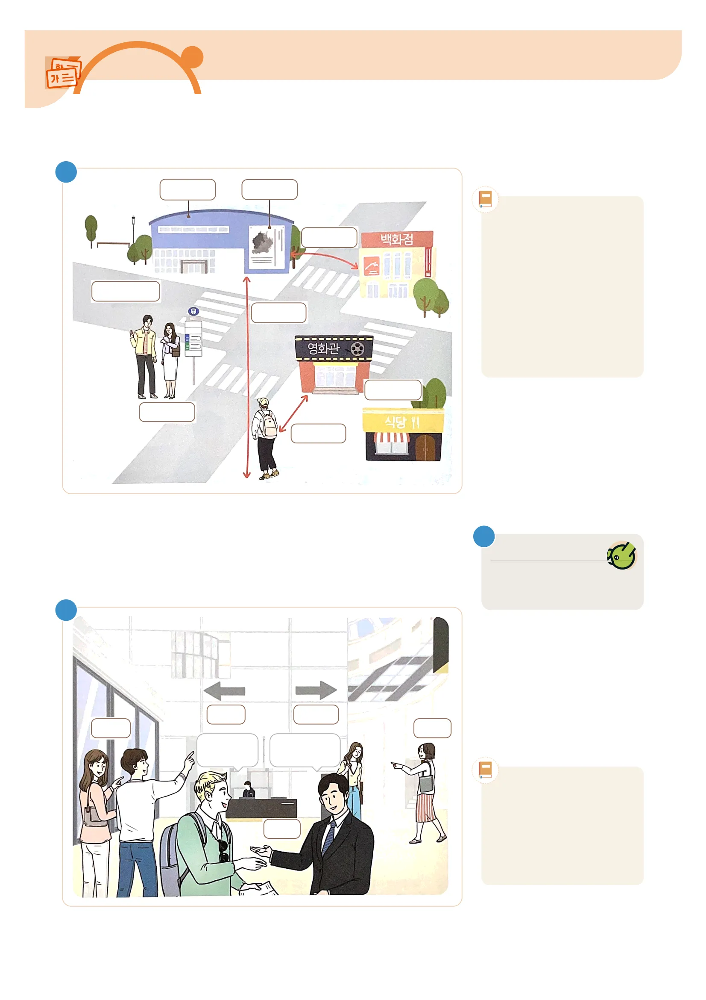
11-2Lug'at어휘서울역에서 여기까지 10분쯤 걸립니다Seul bekatidan bu yergacha taxminan 10 daqiqa박물관전시회건너편걸리다멀다기다리다건물가깝다왼쪽오른쪽저쪽그쪽이쪽전시회를어디에서 해요?저 건물에서 해요.이쪽으로 가세요.가깝다 yaqin bo'lmoq건너편 narigi tomon멀다 uzoq bo'lmoq건물 bino걸리다 olmoq (vaqt oladi)박물관 muzey기다리다 kutmoq전시회 ko'rgazma이야기해 보세요▸ 집이 학교에서 멀어요?▸ 집 건너편에 뭐가 있어요?이쪽 bu tomonga왼쪽 chap그쪽 u tomonga오른쪽 o'ng저쪽 u tomonga (narida)30123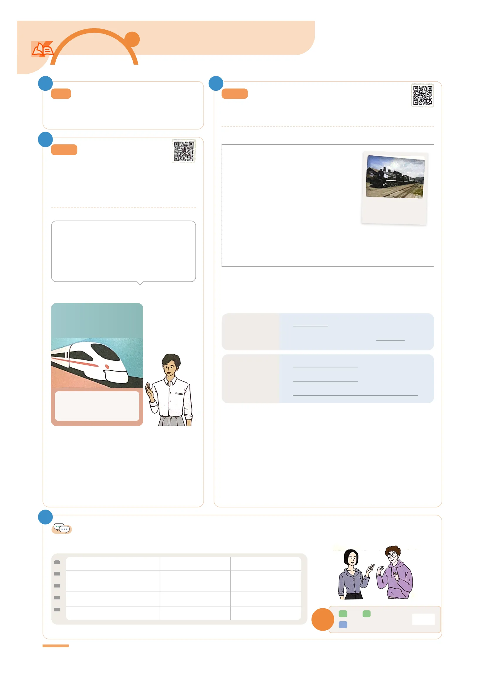
11-2O'qish읽기준비한국에서 어디에 갔어요?집에서 거기까지 멀어요?Koreyada qayerga bordingiz? Uyingizdanqancha uzoq edi?읽기 1전시회 안내입니다. 잘읽고 맞으면 ○, 틀리면× 하세요.Bu ko'rgazma haqida ma'lumot.Diqqat bilan o'qing, to'g'ribo'lsa ○, noto'g'ri bo'lsa ×qo'ying.서울역의어제와 오늘언제: 20**년 1월13일(목)~16일(일)어디: 서울박물관1) 남자는 서울역에서 사진을봐야 돼요.()2) 지하철에서 박물관까지 십분쯤 걸려요.()1960년의 서울역과 2020년의 서울역을보고 싶습니까? 서울박물관으로 오세요.여기에 서울역의 사진이 있습니다. 지하철4호선 서울역에서 여기까지 걸어서10분쯤 걸립니다. 많이 오세요.읽기 2다니엘의 여행 계획입니다. 잘 읽고질문에 답해 보세요.Bu Danielning sayohat rejasi. Diqqat bilan o'qing vasavollarga javob bering.1 빈칸에 알맞은 말을 쓰세요.섬진강기차마을에어떻게 가요?1) 을/를 타고 가요.서울역에서 기차마을까지 2) 걸려요.다니엘 씨는기차마을에서뭘 하려고 해요?3) 을/를 구경하고4) 을/를 탈 거예요.5) .2 맞는 것을 고르세요.① 다니엘은 여덟 시 기차를 탔어요.② 다니엘은 다음 주 주말에 여행을 갈 거예요.③ 다니엘은 기차마을까지 옛날 기차를 타고 갈 거예요.다음 주 일요일에 친구하고 ‘섬진강기차마을’로 여행을 가려고 해요.KTX를 타고 갈 거예요. 서울역에서기차마을까지 세 시간쯤 걸려요. 조금멀어요. 우리는 9시 기차를 탈 거예요.그래서 8시 30분까지 서울역에 가야돼요.기차마을에서 기차도 구경하고 옛날 기차도 탈 거예요.사진도 많이 찍을 거예요. 빨리 가고 싶어요.섬진강기차마을에서친구를 인터뷰해 보세요.Sinfdoshlaringizdan sayohat rejalari haqida intervyu oling.명에서 명까지☞86쪽동-아야/어야 되다친구 이름:친구 이름:어디로 여행 가고싶어요?어떻게 갈 거예요?뭐 하려고 해요?서울역 Seul bekati섬진강 기차마을 Somjingang poyezd qishlog'i옛날 ancha oldin31문법과표현4567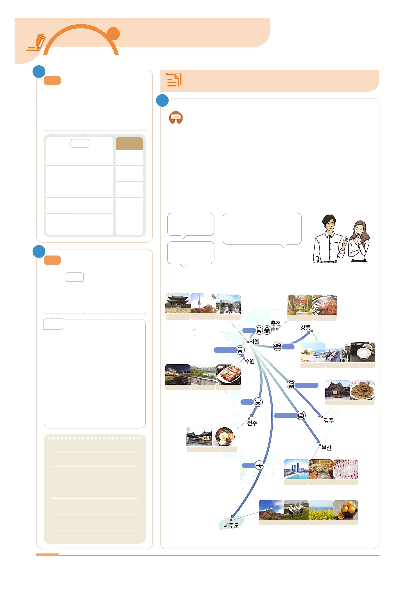
11-2Yozish쓰기준비한국에서 어디에 가고싶어요? 어떻게 갈거예요? 메모해 보세요.Koreyada qayerga borishnixohlaysiz? U yerga qandayborasiz? Quyidagi savollargajavob bering.보기언제 갈거예요?다음 달어디로 갈거예요?춘천어떻게 갈거예요?기차얼마나걸려요?한 시간뭐 할거예요?닭갈비를먹어요,자전거를 타요메모쓰기한국에서 어디에 가고싶어요? 메모를 보고보기와 같이 써보세요.Koreyada qayerga borishnixohlaysiz? Qaydlaringizga qarabnamunadagidek matn yozing.저는 다음 달에 친구하고춘천에 갈 거예요. 기차를 타고갈 거예요. 서울에서 춘천까지한 시간쯤 걸려요. 우리는닭갈비를 먹을 거예요.닭갈비는 조금 매워요. 하지만맛있어요. 우리는 사진도 많이찍고 자전거도 탈 거예요. 꼭가고 싶어요.보기Vazifa과제여행 이야기를 만들어 보세요.Sayohat yo'nalishingiz haqida yozing.1 여러분은 지금 서울에 있어요. 어디로 가고 싶어요? 뭘 타고가요? 거기에서 뭐 하고 싶어요? 한국 지도를 보고 친구하고이야기해 보세요.Siz hozir Seuldasiz. Qayerga bormoqchisiz? Qaysi transportdan foydalanasiz? U yergaborib nima qilasiz? Koreya xaritasiga qarab sherigingiz bilan gaplashing.어디로가고 싶어요?수원까지뭘 타고 가요?저는 수원에 가고 싶어요.수원 화성을 구경하고갈비를 먹을 거예요.경복궁N 서울타워서울로 7017남이섬닭갈비바다커피 거리순두부화성호수공원갈비불국사경주빵한옥 마을비빔밥해운대자갈치시장회한라산해녀유채꽃귤2시간1시간 20분3시간2시간 20분4시간2시간 30분1시간춘천강릉서울수원전주경주부산제주도춘천 Chunchon닭갈비 takkalbi (tovuq taomi)328910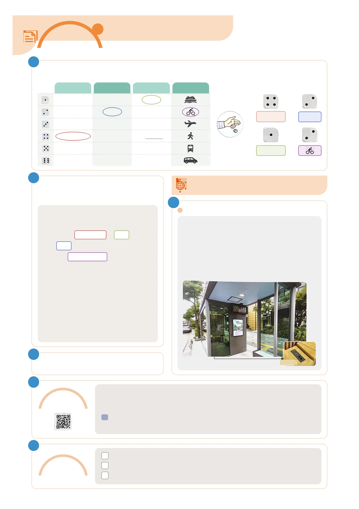
11-2Vazifa과제2 친구하고 같이 주사위를 4번 굴리세요.Sherigingiz bilan zarni 4 marta tashlang.1) 언제?2) 어디로?3) 누구하고?4) 어떻게?지난주 토요일경주친구겨울부산혼자5월제주도부모님크리스마스수원가수씨방학춘천강아지제 생일전주곰 인형1)크리스마스2)부산3)친구4)3주사위에서 나온 단어를 활용해서이야기를 만들어서 발표해 보세요.Zardagi so'zlardan hikoya tuzing va sinfga taqdim eting.저는 이번 크리스마스에 친구하고같이 부산으로 여행을 갔어요. 서울에서부산까지 자전거를 타고 갔어요. 일주일쯤걸렸어요. 정말 멀었어요. 다리가 너무아팠어요. 하지만 우리는 부산 바다 앞에서사진을 찍고 시장에서 찌개도 먹었어요.그런데 여러분, 자전거를 타고 가지 마세요.정말 힘들어요.4어느 팀의 이야기가 제일 재미있어요?Qaysi jamoaning hikoyasi eng qiziqarli bo'ldi?Madaniyat문화어디에서 버스를 기다려요?한국에는 ‘스마트 정류장’이 있어요.버스가 오는 시간을 보면서 버스를 기다릴 수 있어요.정류장 안에는 무료 와이파이와 휴대폰 충전기가 있어요.여름에는 시원하고 겨울에는 따뜻한 스마트 정류장에서편하게 버스를 기다려요.© 충주시충전기역 이름에 받침 ‘ㄹ’이 있는 경우에는 ‘역’에 [ㄹ]을 넣어 발음하고, ‘ㄹ’ 이외의 받침이있는 경우에는 [ㄴ]을 넣어 발음합니다.Bekat nomi ‘ㄹ’ bilan tugasa, ‘역’ [력] deb, boshqa undosh bilan tugasa [녁] deb talaffuz qilinadi.예가: 어디에서 내려요?나: 서울역에서 내려요.가: 시청역에서 갈아타요?나: 아니요. 강남역에서 갈아타야 돼요.발음Talaffuz학교에서 집까지 얼마나 걸려요?언제 고향에 돌아가려고 해요?기차 여행을 하려고 해요. 어디로 가고 싶어요?자기 평가Tekshiruv33111213141516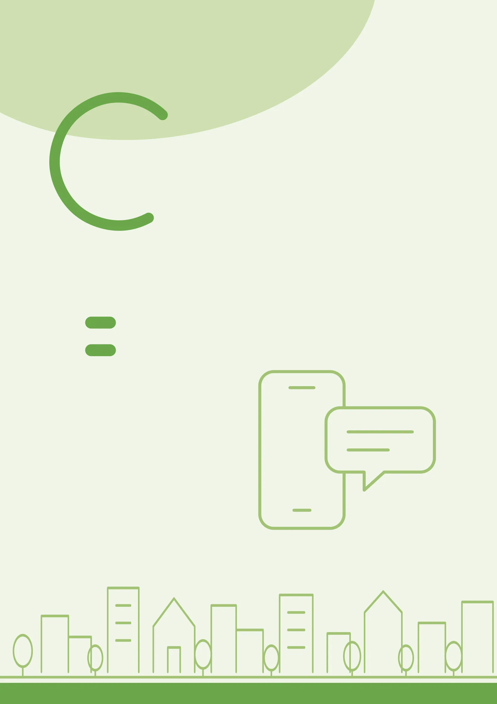
12전화12-1요즘 잘 지내지요?12-2약속이 있어서 못 갔어요여보세요?요즘 잘 지내지요?네, 잘 지내요.어제 왜 안 왔어요?일이 많아서 못 갔어요.바쁘지만 재미있어요.1 친구하고 자주 전화해요?2 요즘 어떻게 지내요?
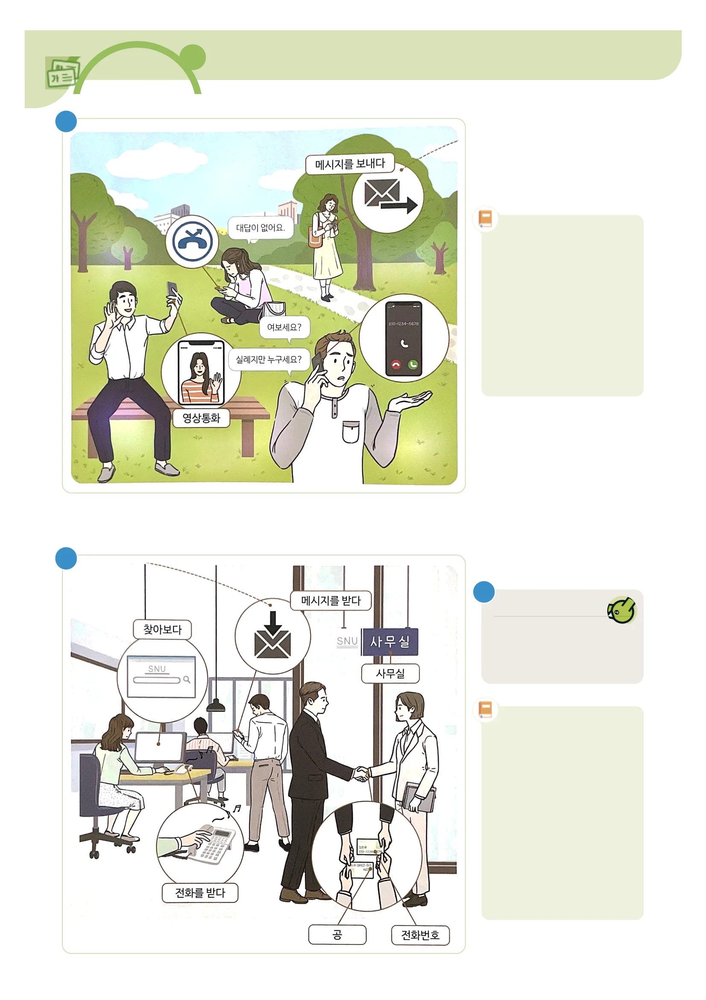
12-1Lug'at어휘요즘 잘 지내지요?Shu kunlarda ishlaringiz qalay?메시지를 보내다xabar yubormoq실례지만 누구세요?Kechirasiz, kim bu?영상 통화videoqo'ng'iroq대답javob여보세요?Allo?이야기해 보세요▸ ‘여보세요’가 여러분나라말로 뭐예요?▸ 전화번호가 몇 번이에요?전화를 받다telefonni ko'tarmoq찾아보다qidirib topmoq메시지를 받다xabar olmoq공nol전화번호telefon raqami사무실ofis36123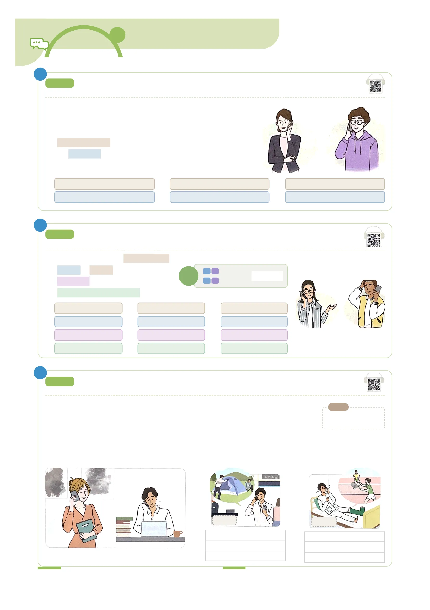
12-1Gapirish말하기말하기 1친구와 연습해 보세요.Sherigingiz bilan mashq qiling.가: 여보세요, 다니엘 씨? 저 나나예요. 잘 지내지요?나: 아, 나나 씨. 오랜만이에요. 저는 잘 지내요.가: 요즘도 바쁘지요?나: 네. 좀 바빠요.1)가족들도 다 건강하다다 건강하다2)요즘도 회사에 잘 다니다잘 다니다3)지금도 서울에 살다서울에 살다말하기 2친구와 연습해 보세요.Sherigingiz bilan mashq qiling.가: 테오 씨, 무슨 요일에 요리를 배워요?나: 금요일에 배워요.가: 요리 수업이 어때요?나: 조금 힘들지만 재미있어요.동형-지요?☞87쪽동형-지만1)한국어, 배우다월요일부터 금요일까지한국어 수업어렵다, 재미있다2)아르바이트, 하다주말아르바이트일이 많다, 괜찮다3)요가 수업, 하다목요일요가 수업잘 못하다, 재미있다말하기 3친구와 이야기해 보세요.Sherigingiz bilan suhbatlashing.하이: 여보세요? 안나 씨, 지금 통화 괜찮아요?안나: 네. 괜찮아요. 무슨 일 있어요?하이: 안나 씨, 그림 전시회를 일요일까지 하지요?안나: 네. 이번 주 일요일까지 해요. 그런데 왜요?하이: 회사에 일이 많아요. 그래서 전시회에 너무 가고 싶지만 못 가요. 미안해요.안나: 아, 그래요? 괜찮아요. 전시회 사진을 많이 찍을 거예요. 나중에 보세요.1)토요일에 캠핑하다고향 집에 일이 있다다음에 같이 가다2)• 싶지만 [십찌만]발음토요일금요일지내다 (vaqt) o'tkazmoq오랜만이에요 Ko'rishmaganimizga ancha bo'ldi다 hammasi건강하다 sog'lom bo'lmoq괜찮다 yaxshi bo'lmoq (joyida)통화 qo'ng'iroq왜 nega미안하다 uzr so'ramoq나중 keyinroq37문법과표현456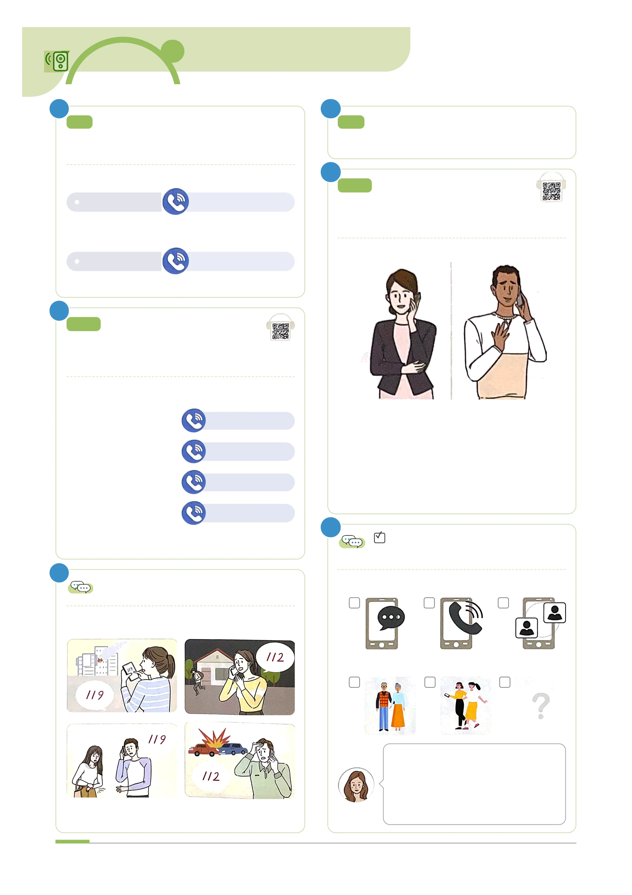
12-1Tinglash듣기준비친구의 전화번호가 몇 번이에요? 듣고쓰세요.Sinfdoshingizning telefon raqami qanday? Tinglabyozib oling.친구 이름 :친구 이름 :듣기 1남자와 여자가 전화를 합니다.잘 듣고 알맞은 것을 고르세요.Bu erkak va ayolning telefon suhbati.Diqqat bilan tinglang va joyni raqam bilanmoslang.1) 사무실•2) 서울식당•• ①2404-1453• ②6778-5431• ③2304-1453• ④6778-5432어디에 전화해야 돼요?Quyidagi vaziyatlarda qayerga qo'ng'iroq qilish kerak?준비친구가 전화를 안 받아요. 어떻게 해야돼요?Do'stim telefonni ko'tarmayapti. Nima qilay?듣기 2에릭과 나나가 전화합니다. 잘듣고 맞는 것을 고르세요.Bu Erik va Nananing telefon suhbati.Diqqat bilan tinglang va to'g'ri javobnitanlang.① 남자는 메시지를 안 보냈어요.② 남자는 지금 밥을 먹으려고 해요.③ 남자는 오늘 저녁에 약속이 있어요. 하고 친구하고 이야기해 보세요.Katakka belgi qo'ying va sherigingiz bilan gaplashibmashq qiling.1 여러분은 뭘 제일 많이 해요?2 누구하고 제일 자주 전화해요?저는 부모님하고 전화를 자주 해요.매일 저녁에 전화해요. 친구하고 전화는잘 안 하지만 영상 통화는 자주 해요.메시지도 많이 보내요. 사진도 보내고이모티콘도 자주 보내요. 재미있어요.이모티콘 emotikon38789101112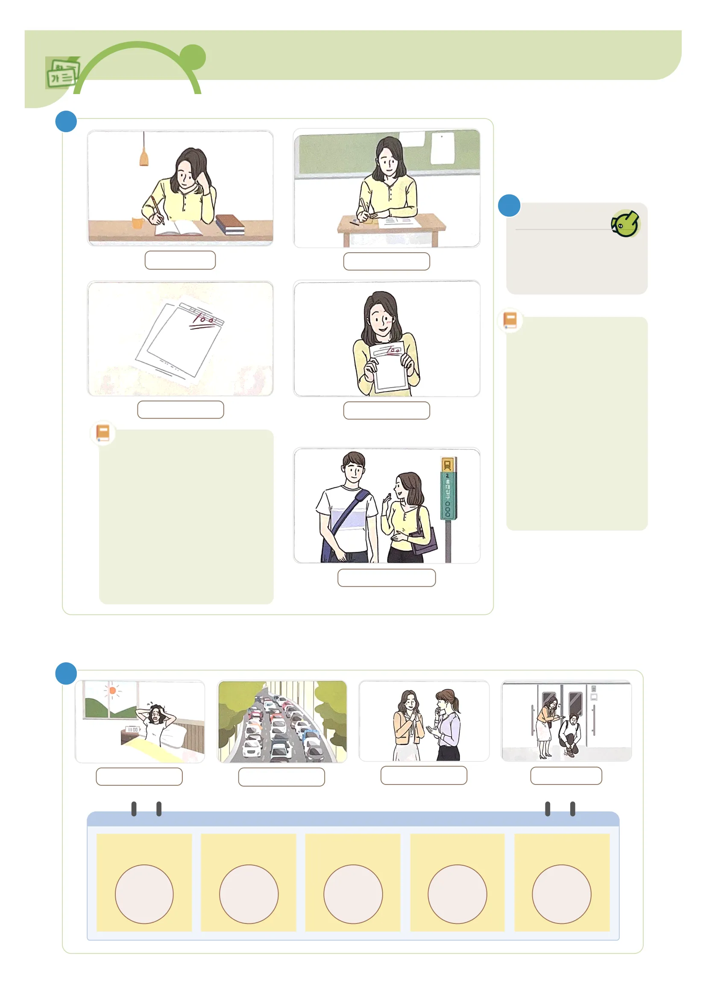
12-2Lug'at어휘약속이 있어서 못 갔어요Rejam bo'lgani uchun bora olmadim준비하다➜시험을 보다➜점수가 좋다➜기분이 좋다➜친구하고 놀다준비하다tayyorlamoq시험을 보다imtihon topshirmoq점수가 좋다yaxshi baho olmoq기분이 좋다kayfiyati yaxshi bo'lmoq친구하고 놀다do'st bilan vaqt o'tkazmoq이야기해 보세요▸ 보통 친구하고어디에서 놀아요?▸ 모레가 며칠이에요?늦잠을 자다uxlab qolmoq죄송하다uzr so'ramoq길이 막히다tirbandlikda qolmoq그저께o'tgan kuni부탁이 있다iltimos qilmoq모레indinga늦잠을 자다길이 막히다부탁이 있다죄송하다월요일그저께화요일어제수요일오늘목요일내일금요일모레39123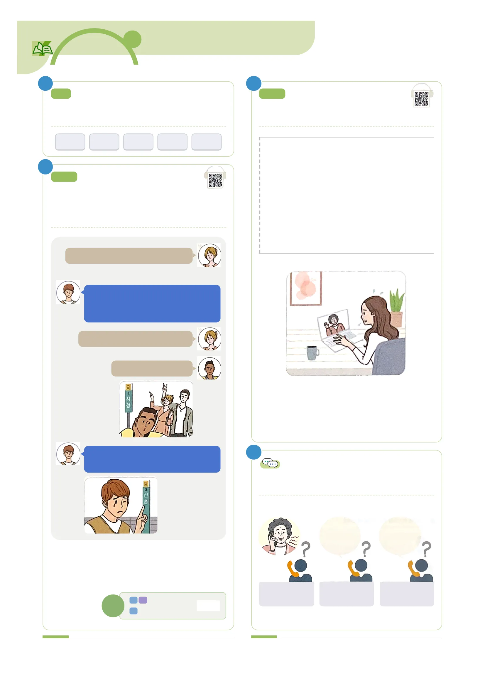
12-2O'qish읽기준비무슨 이모티콘을 자주 써요? 옆친구에게 보내세요.Qaysi emotikonlarni ko'p ishlatasiz? Yoningizdagisinfdoshingizga yuboring.^^ㅠㅠ:)+_+('ㅅ')읽기 1닛쿤과 친구들의 대화입니다.잘 읽고 맞으면 ○, 틀리면 ×하세요.Bu Nitkun va do'stlarining suhbati. Diqqatbilan o'qing, to'g'ri bo'lsa ○, noto'g'ri bo'lsa× qo'ying.안나닛쿤테오1) 닛쿤은 친구의 전화를 못 받았어요.( )2) 닛쿤은 약속이 있어서 시청역에 못 갔어요.( )동형-아서/어서☞88쪽명(이)라서닛쿤 씨, 왜 전화를 안 받아요? ㅠㅠ미안해요. 퇴근 시간이라서 지하철에사람이 너무 많아요. 그래서 전화 못받았어요. 모두 어디에 있어요?우리는 시청역 앞에 있어요. ^^닛쿤 씨, 빨리 오세요!여러분, 미안해요. ㅠㅠ 장소 이름을잘못 들어서 신촌역에 왔어요.읽기 2제니의 이야기입니다. 잘 읽고맞는 것을 고르세요.Bu Jenni haqidagi matn. Diqqat bilano'qing va to'g'ri javobni tanlang.우리 할머니는 한국 사람이에요. 전에는 제가한국어를 못해서 자주 전화를 안 했어요. 요즘은한국어를 조금 배워서 한국어로 전화해요.그런데 우리 할머니는 정말 빨리 말해요. 저는할머니를 사랑하지만 할머니 말을 잘 몰라요.그래서 그냥 “네. 네. 할머니.” 이렇게이야기해요.오늘부터 한국어를 더 열심히 공부하려고해요. 할머니하고 많이 이야기하고 싶어요.① 제니는 할머니하고 한국어로 전화해요.② 제니는 부탁이 있어서 할머니하고 전화해요.③ 제니는 한국 사람이라서 한국어를 빨리 말해요.여러분은 한국어로 전화를 해요? 뭐가어려워요?Telefonda koreyscha gaplashasizmi? Qandayqiyinchiliklaringiz bor?한국 사람이말을 빨리 해요.한국어 숫자를잘 몰라요.한국어 발음을잘 못해요.5412? 5411?여의도? 오이도?퇴근 ishdan chiqmoq잘못 noto'g'ri전 oldin몰라요 Bilmayman그냥 shunchaki숫자 raqam발음 Talaffuz40문법과표현4567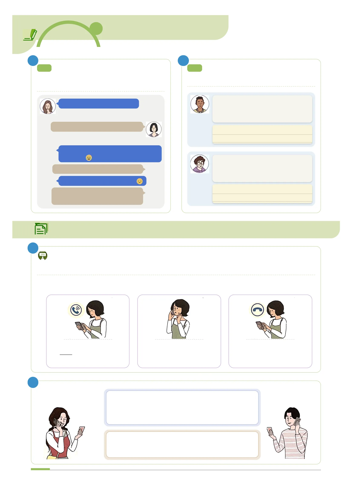
과제Vazifa12-2Yozish쓰기준비한국어로 전화를 해요. 뭐가 어려워요?다음을 읽어 보세요.Telefonda koreyscha gaplashishning qiyin tomoninima? Quyidagi dialogni o'qing.제니유진오늘도 할머니하고 전화했어요.할머니하고 한국어로 이야기했어요?네. 그런데 잘 몰라서 “네. 네.”만말했어요.한국 사람들이 정말 빨리 말하지요?네. 너무 빨리 말해서 어려워요.한국어를 많이 듣고 따라 해야 돼요.저하고 같이 연습할까요?쓰기친구의 메시지를 읽고 답장을 써보세요.Sinfdoshingizning xabarini o'qing va javob yozing.한국어 발음이 너무 어려워요.연습을 많이 했지만 잘 못해요.어떻게 해야 돼요? ㅜㅜ한국어 시험 점수가 안 좋았어요.다음 주에 또 시험을 봐요.어떻게 준비해야 돼요?친구와 전화해 보세요.Do'stingizga qo'ng'iroq qiling.1한국어로 전화해요. 어떻게 말해요?Telefonda koreyscha gaplashyapsiz. Nima deysiz?여보세요. 씨 휴대폰이지요?지금 통화 괜찮아요?조금 크게 이야기해 주세요.다시 한번 이야기해 주세요.네. 안녕히 계세요.고맙습니다.2카드를 뽑으세요.Karta tanlang.김 선생님오늘 엥흐 씨가 학교에 안 왔습니다.그런데 엥흐 씨의 전화번호를 모릅니다.전화번호를 물어보세요.학생 2엥흐 씨의 전화번호를 이야기하세요.전화번호: 010-0880-5488따라 하다 takrorlamoq또 yana41891011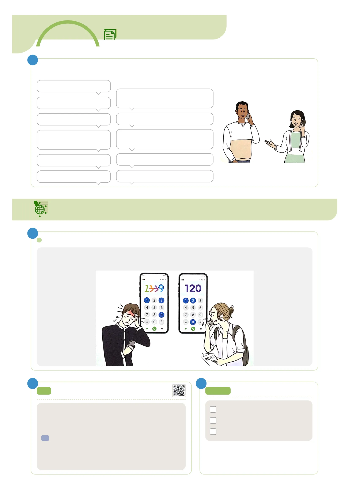
문화MadaniyatVazifa과제3카드를 보고 A와 B가 되어 전화해 보세요.Kartaga qarab sherigingiz bilan navbatma-navbat telefonda gaplashing.여보세요?아, 네. 선생님, 안녕하세요?네. 괜찮아요.아, 제가 엥흐 씨 전화번호를알아요.010-0880-5488이에요.안녕히 계세요.에릭 씨 휴대폰이지요?김 선생님이에요.지금 통화 괜찮아요?오늘 엥흐 씨가 학교에 안 왔어요.그런데 제가 엥흐 씨 전화번호를 몰라요.그래요? 전화번호가 몇 번이에요?아, 고마워요. 내일 만나요.여러분을 도와주는 전화가 있어요.1) 아파서 병원에 가야 돼요. 먼저 1339에 전화해 보세요.2) 한국에서 여행하고 싶어요? 120에 전화해 보세요.발음Talaffuz받침소리 [ㅂ] 뒤에 오는 ‘ㄱ, ㄷ, ㅂ, ㅅ, ㅈ’은 [ㄲ, ㄸ, ㅃ,ㅆ, ㅉ]로 발음합니다.Oxirgi [ㅂ] undoshidan keyin ‘ㄱ, ㄷ, ㅂ, ㅅ, ㅈ’ kelsa, ular [ㄲ, ㄸ, ㅃ, ㅆ, ㅉ]deb talaffuz qilinadi.예가: 오늘 운동해요?나: 아니요. 하고 싶지만 오늘 너무 바빠요.가: 주말에 시간이 있어요?나: 토요일에는 시간이 없지만 일요일에는 괜찮아요.자기 평가Tekshiruv휴대폰 번호가 몇 번이에요?왜 한국어를 공부해요?친구가 전화를 안 받아요. 어떻게 해요?4212131415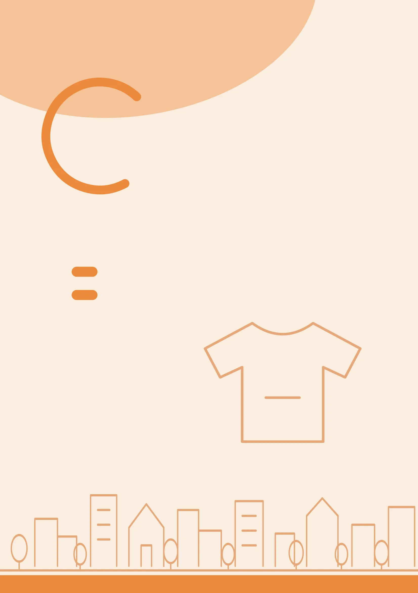
13옷과 외모13-1싸고 예쁜 옷이 많아요13-2긴 바지를 자주 입어요이 모자 어때요?정말 예쁘네요.저는 편한 옷을 좋아해요.짧은 치마를 자주 입어요.지금 노래하는 사람이 누구예요?제 동생이에요.1 오늘 무슨 옷을 입었어요?2 어떤 옷을 좋아해요?
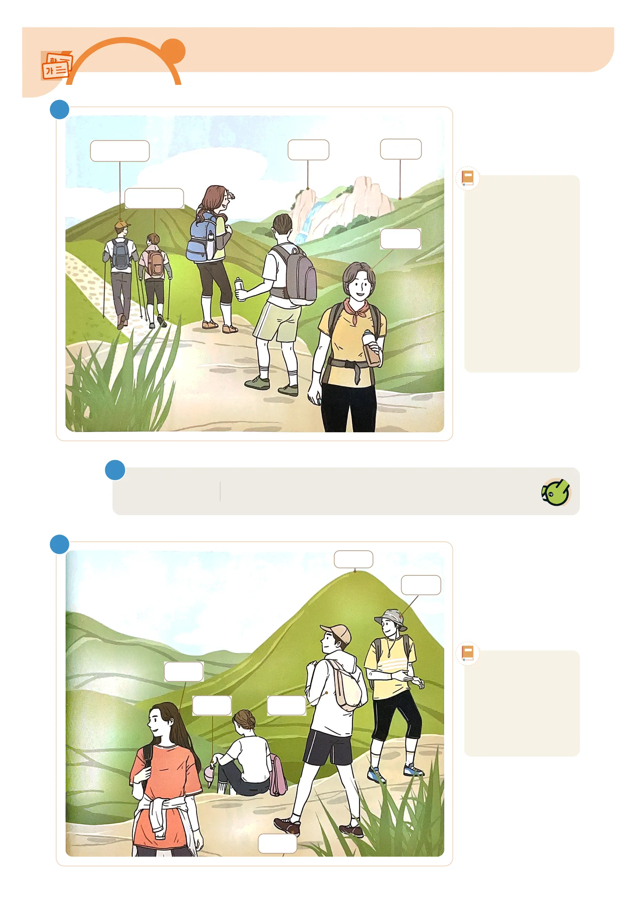
13-1Lug'at어휘싸고 예쁜 옷이 많아요Arzon va chiroyli kiyimlar ko'p키가 크다키가 작다멋있다낮다짧다키가 크다 balandbo'yli bo'lmoq키가 작다 past bo'ylibo'lmoq길다 uzun bo'lmoq짧다 qisqa bo'lmoq높다 baland bo'lmoq낮다 past bo'lmoq멋있다 kelishganbo'lmoq이야기해 보세요▸ 우리 반에서 누가 제일 키가 커요?▸ 고향에서 어느 산이 제일 높아요?높다쓰다길다벗다입다신다입다 kiymoq신다 kiymoq (oyoqkiyim)쓰다 kiymoq/taqmoq벗다 yechmoq45123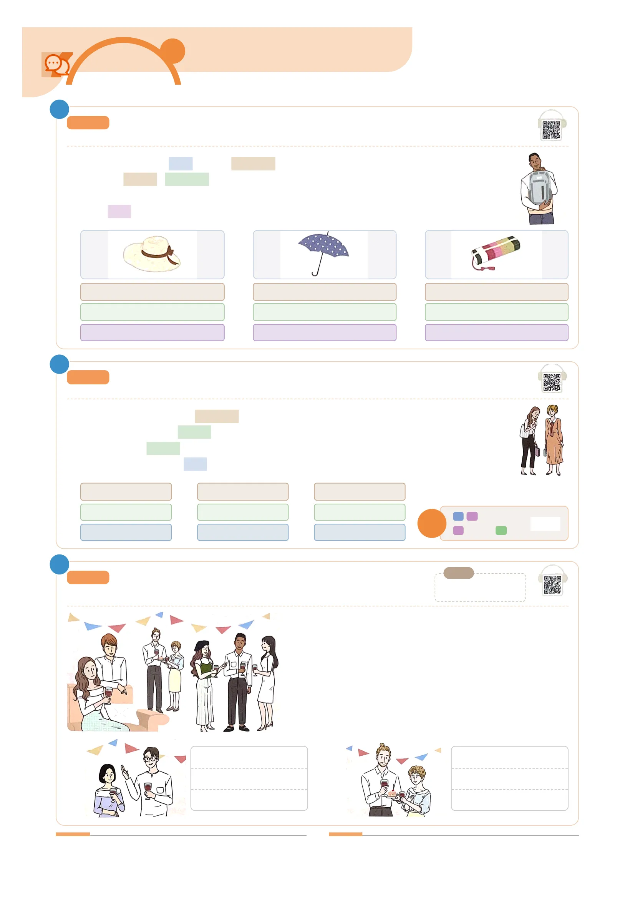
13-1Gapirish말하기말하기 1친구와 연습해 보세요.Sherigingiz bilan mashq qiling.가: 이거 에릭 씨 가방이에요? 멋있네요.나: 네. 멋있죠? 세일해서 샀어요.가: 어디에서 샀어요?나: 명동에서 샀어요.1)예쁘다싸고 예쁘다백화점2)좋다어제 갑자기 비가 오다학교 앞 편의점3)귀엽다이 필통은 한국에만 있다인사동말하기 2친구와 연습해 보세요.Sherigingiz bilan mashq qiling.가: 안나 씨, 옷이 정말 예쁘네요.나: 고마워요. 어제 강남역에서 샀어요.가: 그래요? 강남역에 옷 가게가 있어요?나: 네. 있어요. 싸고 예쁜 옷이 많아요.1)멋있다홍대괜찮다2)귀엽다명동좋다3)예쁘다남대문시장멋있다동형 -네요☞89쪽형 -(으)ㄴ 명말하기 3친구와 이야기해 보세요.Sherigingiz bilan suhbatlashing.제니: 오늘 파티에 테오 씨 여자 친구도 왔네요.닛쿤: 테오 씨 여자 친구를 알아요?제니: 네. 휴대폰에서 사진을 봤어요. 테오 씨가 사진을 보여줬어요.닛쿤: 그래요? 여자 친구가 누구예요?제니: 저기 머리가 길고 키가 큰 여자예요.닛쿤: 모자를 썼어요?제니: 아니요. 모자를 안 썼어요. 지금 테오 씨 옆에 있어요.1)유진 씨 남자 친구키가 크고 눈이 크다안경을 쓰다2)• 왔네요 [완네요]발음세일하다 chegirmada bo'lmoq갑자기 to'satdan옷 가게 kiyim do'koni남대문시장 Namdemun bozori파티 ziyofat보여 주다 ko'rsatmoq머리 soch46문법과표현456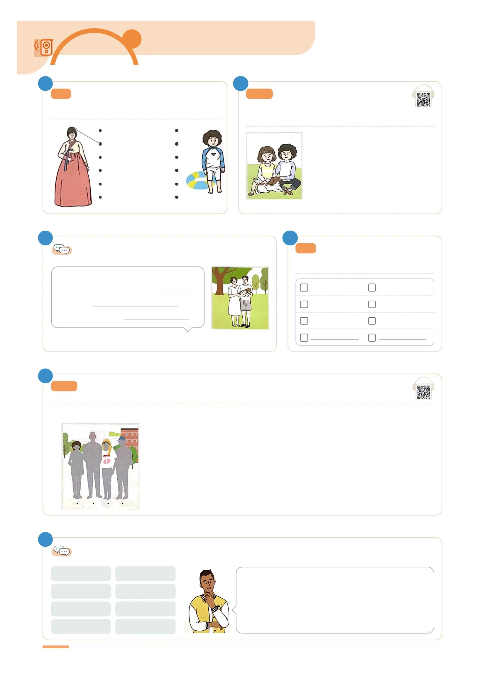
13-1Tinglash듣기준비그림을 보고 어울리는 문장과연결하세요.Rasmga qarab mos gaplar bilan bog'lang.머리가 길어요.머리가 짧아요.키가 커요.키가 작아요.한복을 입었어요.수영복을 입었어요.듣기 1민우와 안나의 대화입니다. 잘 듣고맞으면 ○, 틀리면 × 하세요.Bu Minu va Anna suhbati. Diqqat bilan tinglang,to'g'ri bo'lsa ○, noto'g'ri bo'lsa × qo'ying.1) 남자는 아이를 좋아해요.( )2) 남자는 지금 머리가 길어요.( )사진을 보고 이야기해 보세요.Rasmga qarab sherigingizga tasvirlab bering.이거는 우리 가족사진이에요.우리 엄마는 키가 커요. 그리고 .우리 형은 .우리 강아지 이름은 .준비여러분에 대해 이야기해보세요.O'zingiz haqingizda gapirib bering.키가 커요.키가 작아요.머리가 길어요.머리가 짧아요.안경을 써요.안경을 안 써요.듣기 2크리스가 한국어 반 친구들을 소개합니다. 잘 듣고 질문에 답해 보세요.Kris koreys tili sinfidagi do'stlarini tanishtiryapti. Diqqat bilan tinglang va savollarga javob bering.1알맞은 그림을 연결하세요.• 테오• 안나• 에릭• 마리2잘 듣고 맞는 것을 고르세요.① 안나는 매운 음식을 좋아해요.② 크리스는 마리를 많이 도와줘요.③ 에릭은 재미있고 친절한 사람이에요.카드를 사용해서 우리 반 친구들을 소개해 보세요.Kartadagi ma'lumotdan foydalanib sinfdoshlaringizni tanishtiring.키가 크다멋있다잘하다귀엽다좋아하다모자를 자주 쓰다머리가 길다머리가 짧다우리 반 친구들은 모두 6명입니다.우리 반에서 제일 키가 큰 사람은 엥흐 씨입니다.엥흐 씨는 모자를 자주 씁니다.우리 반에서 머리가 제일 짧은 사람은 닛쿤 씨입니다.닛쿤 씨는 노래를 잘합니다.아이 bola도와주다 yordam bermoq47789101112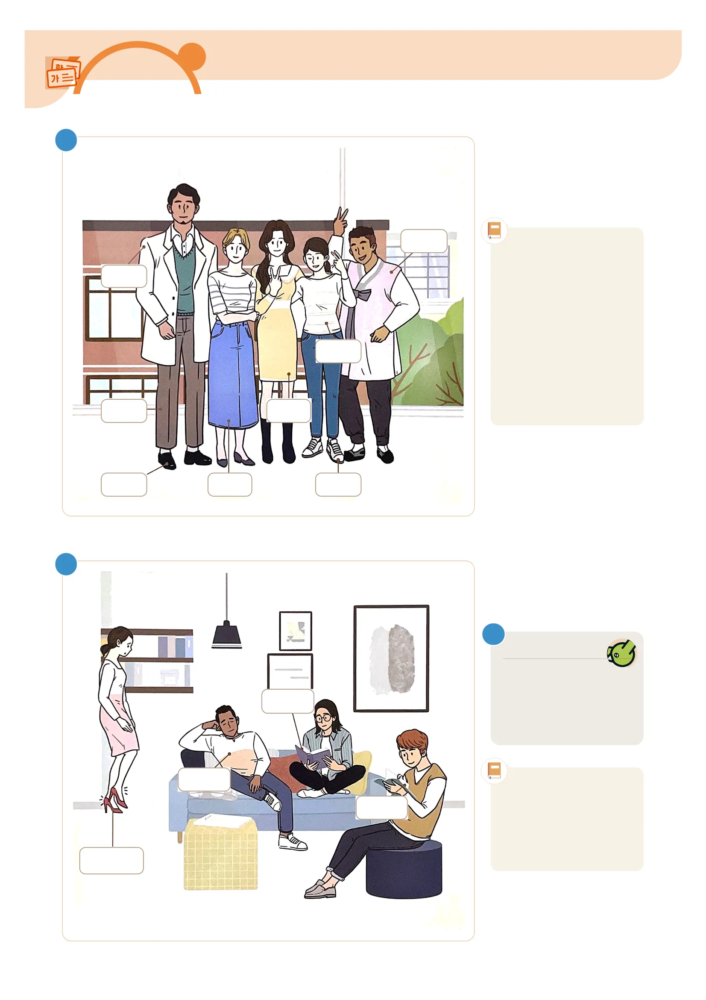
13-2Lug'at어휘긴 바지를 자주 입어요Men ko'pincha uzun shim kiyaman코트한복티셔츠바지원피스구두치마운동화바지 shim치마 yubka코트 palto티셔츠 futbolka원피스 ko'ylak (ayollar)한복 hanbok (koreys milliykiyimi)운동화 krossovka구두 tufli두껍다편하다얇다불편하다이야기해 보세요▸ 무슨 옷을 자주입어요?▸ 구두를 자주 신어요?운동화를 자주 신어요?편하다 qulay bo'lmoq불편하다 noqulay bo'lmoq두껍다 qalin bo'lmoq얇다 yupqa bo'lmoq48123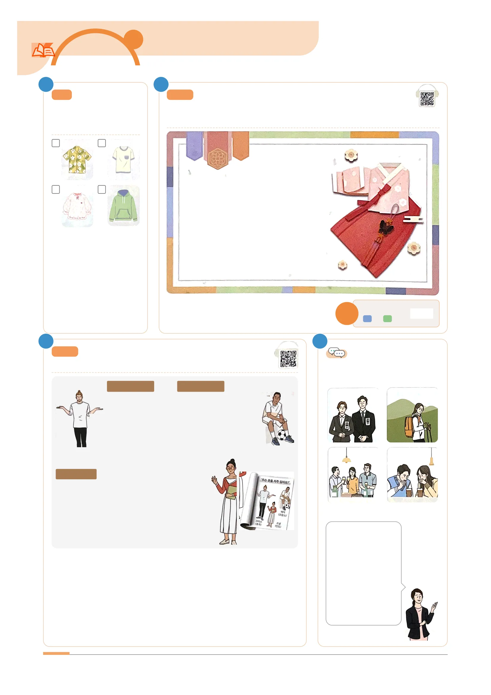
13-2O'qish읽기준비여러분은 어떤 옷을자주 입어요?Qanday kiyimlarni ko'p kiyasiz?읽기 1한복 전시회 초대장입니다. 잘 읽고 맞으면 ○, 틀리면 ×하세요.Bu hanbok ko'rgazmasiga taklifnoma. Diqqat bilan o'qing, to'g'ri bo'lsa ○,noto'g'ri bo'lsa × qo'ying.1) 전시회에서 예쁜 한복을 팝니다.( )2) 전시회에 두꺼운 한복도 있습니다.( )'ㄹ' 탈락☞90쪽동-는 명사계절 이야기가 있는 한복인사동에서 한복 전시회를 합니다.얇은 여름 한복부터두꺼운 겨울 한복까지 있습니다.한복을 입고 사진을 찍는 곳도 있습니다.꼭 오세요.읽기 2한국 잡지입니다. 잘 읽고 맞는 것을 고르세요.Bu koreys jurnali. Diqqat bilan o'qing va to'g'ri javobni tanlang.크리스(호주)저는 요리사예요.요리하는 곳이 너무더워서 두꺼운 옷을안 입어요. 얇은티셔츠하고 긴바지를 입어요.에릭(프랑스)저는 학교에 다녀요.운동을 많이 해서 발이자주 아파요. 그래서편한 운동화를 많이신어요. 모자도 자주써요.소날(인도)저는 컴퓨터 회사에서 프로그램을 만드는일을 합니다. 우리 회사에서 일하는 사람들은양복을 안 입고 편한 옷을 입습니다. 여름에는짧은 바지도 입습니다. 긴 치마를 입고 낮은구두를 신는 사람들도 있습니다.① 크리스는 두꺼운 옷과 긴 바지를 입어요.② 에릭은 운동선수라서 매일 운동화를 신어야 돼요.③ 소날의 회사에서 일하는 사람들은 편한 옷을 입어요.어떤 옷을 입을 거예요?이야기해 보세요.Turli vaziyatlarda nimakiyishingiz haqida gaplashing.요즘 날씨가 좋아요.그래서 이번 주말에친구하고 같이남산에 가려고 해요.남산은 사람들이많이 가는 산이에요.저는 편한 바지를입고 모자를 쓸거예요.사계절 to'rt fasl곳 joy팔다 sotmoq프로그램 dastur양복 kostyum남산 Namsan tog'i49문법과표현4567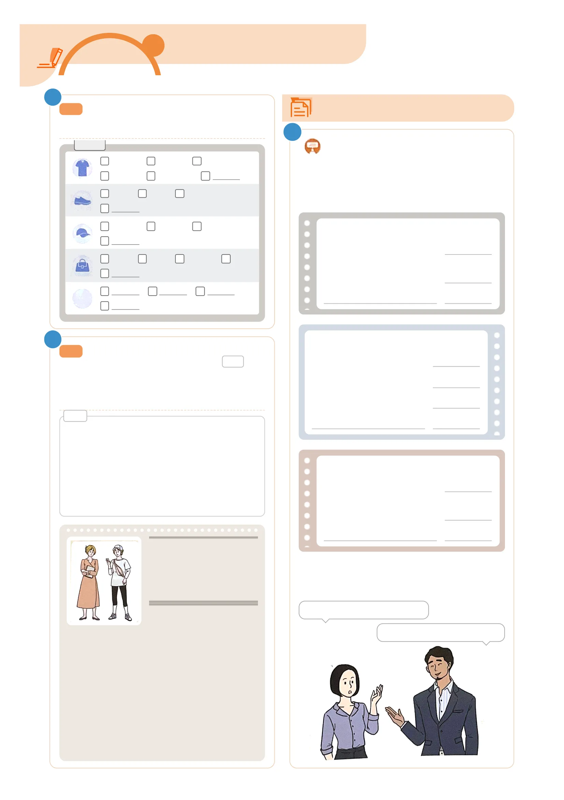
Vazifa과제13-2Yozish쓰기준비여러분은 뭘 자주 입어요? 메모해보세요.Ko'p kiyadigan narsalaringizni yozing yoki belgilang.편하다두껍다얇다가볍다따뜻하다높다낮다편하다예쁘다귀엽다멋있다크다작다비싸다싸다쓰기주말에 친구들을 만나려고 해요. 어떤옷을 입고 싶어요? 메모를 보고 보기와같이 써 보세요.Dam olish kuni do'stlaringiz bilan uchrashmoqchisiz.Nima kiymoqchisiz? Qaydlaringizga qarabnamunadagidek matn yozing.제가 자주 입는 옷은 긴 원피스예요. 긴원피스는 가볍고 예뻐서 좋아요. 하지만 이번주말에는 친구들하고 등산을 할 거예요. 그래서편한 티셔츠와 바지를 입으려고 해요. 운동화를신고 모자도 쓸 거예요. 산 위에서 친구들하고멋있는 사진을 많이 찍고 싶어요.보기반 친구들을 인터뷰해 보세요.Sinfdoshlaringizdan intervyu oling.1친구들을 만나서 이야기해 보세요. 그리고친구의 이름을 쓰세요.Quyidagi savollar bilan sinfdoshlaringizdan intervyu oling vaismlarini yozing.질문친구 이름아침에 고기를 먹어요?엥흐매일 맛있는 음식을만들어요??질문친구 이름커피숍에서 숙제를 해요?가방에 우산이 있어요?필통이 작고 귀여워요??질문친구 이름서울대학교 기숙사에 살아요?집에서 한국 노래를 자주들어요??엥흐 씨, 아침에 고기를 먹어요?네. 저는 아침에 고기를 먹어요.508910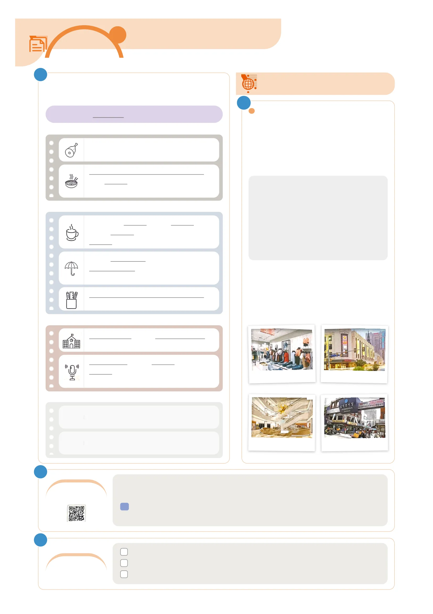
Madaniyat문화13-2Vazifa과제2 인터뷰 내용을 쓰고 발표해 보세요.Sinfdoshlaringiz haqida bilganlaringizni yozing va sinfga taqdim eting.1급반 친구들 이야기아침에 고기를 먹는 사람은 엥흐 씨예요.엥흐 씨는 고기를 좋아해요..저는 씨가 만드는 한국 음식을먹고 싶어요.커피숍에서 사람은 씨하고 씨예요. 씨는 커피숍에 자주 가요.가방에 사람은.그래서 가방이 항상 무거워요..저도 작은 필통을 사고 싶어요. 친구는 .집이 가까워서 걸어서 학교에 와요. 사람은 씨하고 씨예요.한국 노래를 좋아해서 자주 들어요.??어디에서 쇼핑해요?한국 사람들은 백화점, 시장에서 쇼핑을많이 해요. 그리고 지하철역과 가까운지하상가에도 자주 가요. 옷이 싸고좋아요. 요즘은 쇼핑, 식사, 놀이를 모두 할수 있는 아웃렛이나 복합 쇼핑몰도 인기가많아요.아웃렛쇼핑몰백화점시장발음Talaffuz받침소리 [ㄷ]은 ‘ㄴ, ㅁ’ 앞에서 [ㄴ]으로 발음합니다.Oxirgi [ㄷ] undoshidan keyin ‘ㄴ, ㅁ’ kelsa, [ㄴ] deb talaffuz qilinadi.예가: 책을 많이 읽었네요.나: 네. 정말 재미있어요.가: 지금 교실에 있는 사람은 누구예요?나: 에릭 씨하고 엥흐 씨예요.자기 평가Tekshiruv싸고 좋은 옷을 사고 싶어요. 어디에 가야 돼요?여러분이 자주 입는 옷이 뭐예요? 왜 자주 입어요?우리 반 친구들은 오늘 어떤 옷을 입었어요?511112131414초대와 약속14-1우리 집에 축구 보러 오세요14-2주스를 마시면서 기다리고 있어요
우리 집에 놀러 오세요.네, 좋아요.토요일에 올 수 있어요?미안해요. 토요일에는 갈 수 없어요.지금 뭐 하고 있어요?책을 읽으면서 기다리고 있어요.1 친구를 집에 자주 초대해요?2 이번 주말에 약속이 있어요?
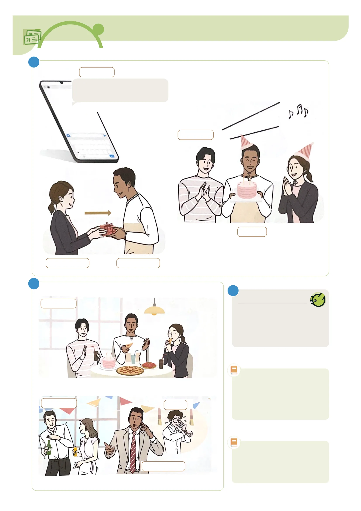
14-1Lug'at어휘우리 집에 축구 보러 오세요Uyimga futbol ko'rgani keling기쁘다초대하다우리 집에서 생일 파티를 해요.우리 집에 오세요.선물을 주다선물을 받다축하하다생일 축하합니다식사하다파티하다늦다양복을 입다이야기해 보세요▸ 생일에 무슨 선물을 받고싶어요?▸ 약속에 늦었어요. 어떻게 할거예요?초대하다 taklif qilmoq축하하다 tabriklamoq기쁘다 xursand bo'lmoq선물을 주다 sovg'a bermoq선물을 받다 sovg'a olmoq식사하다 yemoq파티하다 ziyofat qilmoq양복을 입다 kostyum kiymoq늦다 kechikmoq54123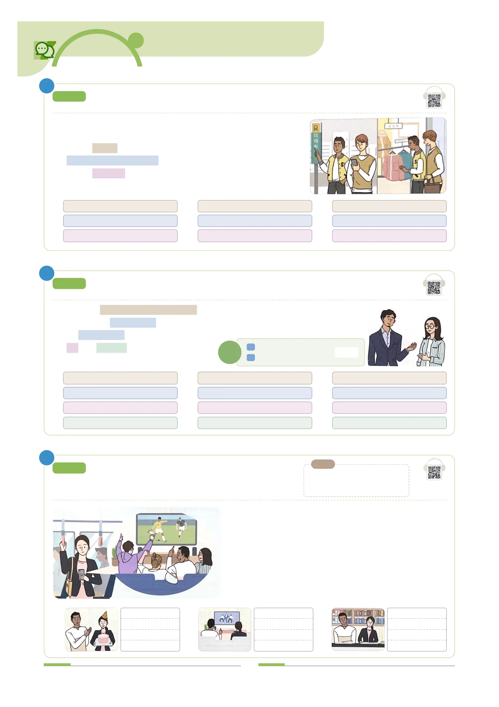
14-1Gapirish말하기말하기 1친구와 연습해 보세요.Sherigingiz bilan mashq qiling.가: 테오 씨, 수업 끝나고 시간이 있어요?나: 네. 있어요. 그런데 왜요?가: 저하고 이태원에 같이 갈 수 있어요?친구가 파티에 초대했어요.그래서 옷을 사러 가려고 해요.나: 좋아요. 같이 가요.1)백화점옷이 너무 크다옷을 바꾸다2)도서관시험 준비를 해야 되다공부하다3)식당너무 배고프다밥을 먹다말하기 2친구와 연습해 보세요.Sherigingiz bilan mashq qiling.가: 금요일에 제 생일 파티를 하려고 해요.아야나 씨도 올 수 있어요?나: 네. 갈 수 있어요. 어디로 갈까요?가: 6시까지 하나식당으로 오세요.나: 좋아요. 금요일에 봐요.동-(으)러 가다/오다☞91쪽동-(으)ㄹ 수 있다/없다1)옆 반 친구들하고 농구하다같이 하다10시학교 운동장2)친구들하고 식사하다밥 먹으러 오다12시 반기숙사 앞3)피자를 만들다도와주다4시우리 집말하기 3친구와 이야기해 보세요.Sherigingiz bilan suhbatlashing.에릭: 나나 씨, 이번 주 토요일에 뭐 해요?나나: 아직 약속이 없어요. 왜요?에릭: 우리 집에 축구 보러 오세요. 한국 팀하고 호주 팀이축구를 해요. 아야나 씨하고 크리스 씨도 올 거예요.나나: 그래요? 저도 같이 봐요. 몇 시까지 갈까요?에릭: 5시까지 우리 집으로 올 수 있어요?나나: 네. 갈 수 있어요.에릭: 좋아요. 그럼 토요일에 만나요.1)금요일 저녁놀다생일 파티를 하다6시, 우리 집2)3)• 올 거예요 [올꺼예요]• 갈 수 있어요 [갈쑤이써요]발음바꾸다 o'zgartirmoq팀 jamoa55문법과표현456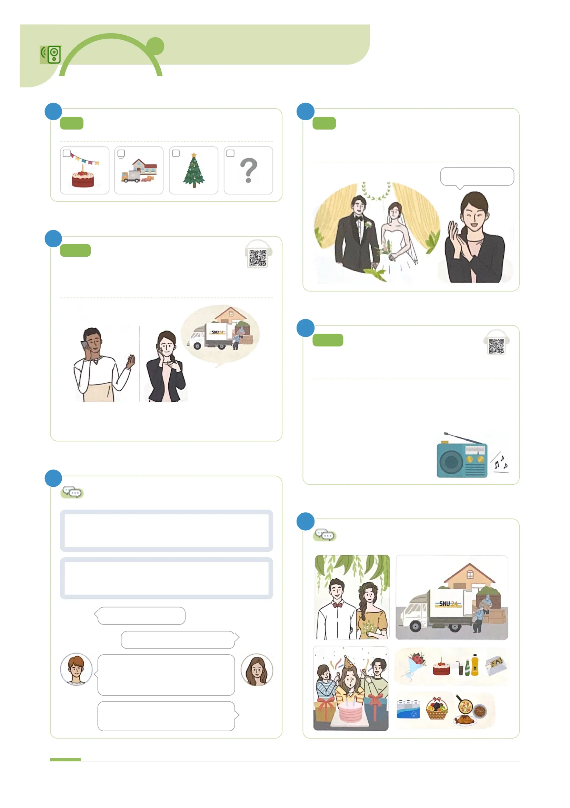
14-1Tinglash듣기준비여러분은 언제 친구들을 초대해요?Do'stlaringizni odatda qachon taklif qilasiz?듣기 1에릭과 나나의 대화입니다. 잘 듣고 맞으면 ○, 틀리면 × 하세요.Bu Erik va Nana suhbati. Diqqat bilantinglang, to'g'ri bo'lsa ○, noto'g'ri bo'lsa ×qo'ying.1) 여자는 토요일에 친구들을 집에 초대할 거예요.( )2) 남자는 다른 약속이 있어서 놀러 갈 수 없어요.( )상황을 보고 친구를 초대해 보세요.Vaziyatga qarab do'stlaringizni taklif qiling.지난주에 이사해서 친구들하고 같이 밥을먹으려고 해요. 5시에 서울식당에서 만날 거예요.홍대에서 크리스마스 파티를 하려고 해요. 다음 주금요일 저녁에 홍대입구역에서 만날 거예요.내일 시간이 있어요?네. 안 바빠요. 그런데 왜요?지난주에 이사해서 친구들하고같이 밥을 먹으려고 해요. 같이 갈수 있어요?네. 좋아요. 어디에서 먹을거예요?준비친구에게 좋은 일이 있어요. 무슨 말을하고 싶어요?Do'stingizda yaxshi voqea bo'ldimi? Nimademoqchisiz?결혼 축하해요.듣기 2라디오 방송입니다. 잘 듣고맞는 것을 고르세요.Bu radio eshittirish. Diqqat bilantinglang va to'g'ri javobni tanlang.① 나나의 친구는 토요일에 결혼했어요.② 나나의 친구는 노래 선물을 보냈어요.③ 나나는 친구의 결혼식에 초대를 받았어요.여러분은 무슨 선물을 주고 싶어요?Quyidagi vaziyatlarda qanday sovg'a bermoqchisiz?결혼 to'y결혼식 nikoh marosimi이사하다 ko'chmoq56789101112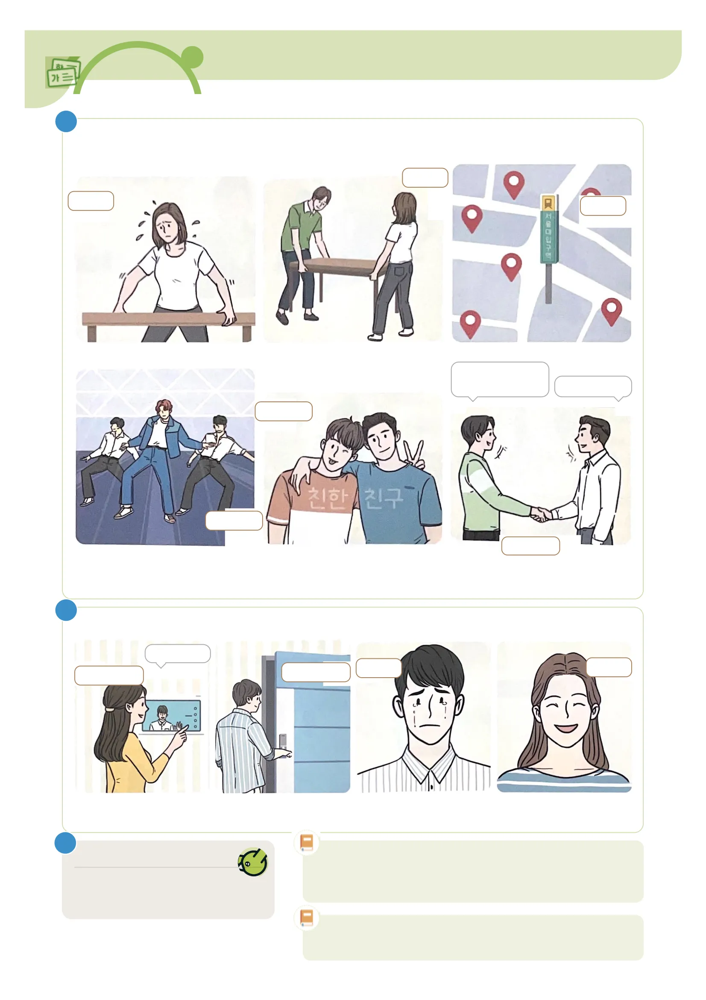
14-2Lug'at어휘주스를 마시면서 기다리고 있어요Sharbat ichib kutyapman오랜만이에요.요즘 잘 지내지요?네. 잘 지내요.이야기해 보세요▸ 집 근처에 뭐가 있어요?▸ 제일 친한 친구의 이름이 뭐예요?혼자 yolg'iz함께 birga근처 yaqin atrofda춤추다 raqsgatushmoq친하다 yaqinbo'lmoq지내다 (vaqt)o'tkazmoq들어오다 kiribkelmoq들어가다 kirmoq울다 yig'lamoq웃다 kulmoq57혼자함께근처춤추다친하다지내다들어오다들어오세요.들어가다울다웃다123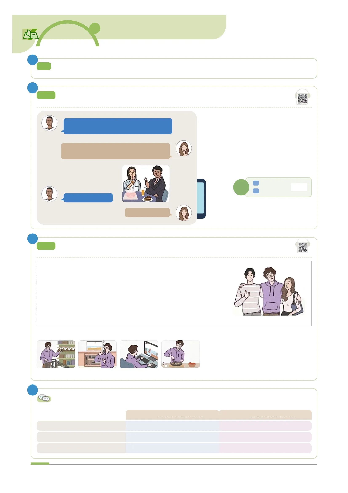
14-2O'qish읽기준비언제 파티를 해요? 파티에서 뭘 해요?Ziyofat qachon? Ziyofatda nima qilasiz?읽기 1에릭과 제니의 메시지입니다. 잘 읽고 맞으면 ○, 틀리면 × 하세요.Bu Erik va Jenni o'rtasidagi xabarlar. Diqqat bilan o'qing, to'g'ri bo'lsa ○, noto'g'ri bo'lsa × qo'ying.1) 에릭은 제니 집에 들어갔어요.( )2) 에릭은 친구들과 함께 주스를마셨어요.( )동-고 있다☞92쪽동-(으)면서읽기 2다니엘의 이야기입니다. 잘 읽고 질문에 답해 보세요.Bu Daniel haqidagi matn. Diqqat bilan o'qing va savollarga javob bering.우리 반 친구들은 정말 친합니다. 우리는 한 달에 한 번 같이 밥을 먹습니다.지난주 토요일에는 우리 집에서 밥을 먹었습니다. 그래서 아침부터 바빴습니다.과일과 음료수를 사러 마트에 갔습니다. 마트에서 음식도 샀습니다. 그리고집에서 요리했습니다.7시쯤에 친구들이 모두 왔습니다. 우리는 같이 게임을 하면서 맛있는 음식을먹었습니다. 밥을 먹고 노래방에 갔습니다. 노래하면서 춤도 췄습니다. 에릭씨가 춤을 못 춰서 우리는 많이 웃었습니다. 정말 재미있는 하루였습니다.1 다니엘은 토요일에 뭘 했어요? 순서대로 번호를 쓰세요.( 1 )( )( )( )2 맞는 것을 고르세요.① 다니엘은 요리하면서 게임을 했어요.② 다니엘은 마트에 가서 과일을 샀어요.③ 다니엘은 지금 친구들을 초대하고 있어요.친구를 인터뷰해 보세요.Sinfdoshlaringizdan intervyu oling.친구 이름: 친구 이름: 언제 파티를 했어요?어디에서 파티를 했어요?뭐 하면서 놀았어요?시작하다 boshlamoq번 marta마트 supermarket노래하다 qo'shiq aytmoq58문법과표현에릭제니제니 씨. 파티 시작했어요? 친구들은 다왔어요?아니요. 아야나 씨하고 엥흐 씨만 왔어요.지금 주스를 마시면서 기다리고 있어요.저도 가고 있어요.네. 빨리 오세요.456714-2Yozish쓰기준비언제 파티를 했어요? 메모해 보세요.Qachon ziyofat qildingiz? Quyidagi savollar bo'yicha qaydlar yozing.보기무슨 파티였어요?생일 파티언제 했어요?지난주 금요일어디에서 했어요?우리 집누구를 초대했어요?우리 반 친구들뭐 했어요?맛있는 음식을 먹으면서게임을 했어요.어땠어요?아주 재미있었어요.메모쓰기파티가 어땠어요? 메모를 보고 보기와 같이 써 보세요.Ziyofat qanday o'tdi? Qaydlaringizga qarab namunadagidek matn yozing. 지난주 금요일은 제 생일이었습니다. 저는 우리 반 친구들을 초대했습니다. 반 친구들 모두 우리 집에놀러 왔습니다. 우리는 함께 맛있는 음식을 먹으면서 게임을 했습니다. 친구들이 선물도 줬습니다. 저는선물을 많이 받아서 기뻤습니다. 아주 재미있는 하루였습니다.보기Vazifa과제파티를 계획해 보세요.Ziyofat rejalashtiring.1 친구들과 파티를 할 거예요. 카드를 하나 골라서 써 보세요.Do'stlaringiz bilan ziyofat qilmoqchisiz. Karta tanlang va ma'lumotlarni yozing.1) 무슨 파티예요?2) 언제 해요?3) 어디에서 해요?4) 누구를 초대해요?5) 뭘 입어요?6) 뭘 할 거예요? 뭘 할 수 있어요?7) ?598910
Madaniyat문화한국 친구가 집에 초대했어요.14-2Vazifa과제2 친구들과 같이 파티 포스터를 만들어 보세요. 무슨 파티에 가고 싶어요?Do'stlaringiz bilan ziyofat uchun e'lon tayyorlang. Qanday ziyofatga borishni xohlaysiz?딸기 파티에 올 수 있어요?딸기를 좋아해요? 딸기를 먹으러 오세요!딸기 우유를 마시면서딸기 케이크를 먹을 거예요.여러분을 기다리고 있어요!이번 주 금요일 1시 30분언어교육원 사무실딸기를 좋아하는 사람모자를 쓰고 오세요.파티에올 수 있어요?한국 노래를 할 수 있어요?춤을 추면서 노래를 할까요?파티에올 수 있어요?팝콘을 먹으면서영화를 볼까요?파티에올 수 있어요?김치 피자를 만들 수 있어요?못 만들어요? 괜찮아요!친구가 좋아하는선물을 생각해보세요. 그리고 작은선물을 준비하세요.신발을 신고들어가지 마세요.한국에서는집안에서 신발을 안신어요.친구가 이사하고새집에 초대했어요?세제하고 휴지를선물해요. 친구가부자가 될 거예요.여러분 나라에서는 무슨 선물을 해요?무슨 선물을 안 해요?발음Talaffuz'-(으)ㄹ' 뒤에 오는 'ㄱ, ㅅ'은 [ㄲ, ㅆ]로 발음합니다.'-(으)ㄹ' dan keyin 'ㄱ, ㅅ' kelsa, ular [ㄲ, ㅆ] deb talaffuz qilinadi.예가: 몇 시까지 올 수 있어요?나: 5시까지 갈 수 있어요.가: 오늘 뭐 할 거예요?나: 친구 집에서 파티를 할 거예요.자기 평가Tekshiruv생일 파티를 하러 어디에 가고 싶어요?어디에서 좋은 선물을 살 수 있어요?친구가 약속 시간에 늦어요. 친구를 기다리면서 뭘 해요?6011121314
15가족15-1아버지는 산에 자주 가세요15-2부모님이 한국에 오실 거예요
가족이 몇 명이에요?모두 네 명이에요.아버지는 무슨 일을 하세요?회사에 다니세요.부모님께 자주 전화해요.할머니가 다음 달에 오실 거예요.1 가족이 몇 명이에요?2 부모님은 어디에 사세요?
15-1Lug'at어휘아버지는 산에 자주 가세요Otam tez-tez tog'ga boradi가족가족 사진 전시회부모님아버지(54)할머니(76)나어머니(53)할아버지(79)형(25)누나(23)나(21)이야기해 보세요▸ 가족이 모두 몇 명이에요?가족 oila할아버지 bobo할머니 buvi아버지 ota어머니 ona부모님 ota-ona형 aka (o'g'il aytadi)누나 opa (o'g'il aytadi)나 men (oddiy shakl)오빠 aka (qiz aytadi)언니 opa (qiz aytadi)동생 uka/singil남편 er아내 xotin아들 o'g'il딸 qiz (farzand)언니(24)나(21)오빠(25)동생(19)아내남편아들딸어머니63123
15-1Gapirish말하기말하기 1친구와 연습해 보세요.Sherigingiz bilan mashq qiling.가: 테오 씨, 이분은 누구세요?나: 우리 아버지세요.가:아버지가 등산을 좋아하세요?나: 네. 우리 아버지는 산에 자주 가세요.1)어머니2)할아버지3)할머니말하기 2친구와 연습해 보세요.Sherigingiz bilan mashq qiling.가: 닛쿤 씨, 지금 뭐 해요?나:할머니께 메일을 보내고 있어요.가: 그래요? 할머니가 컴퓨터를 잘하세요?나: 네. 잘하세요.1)어머니꽃 사진을 보내다어머니가 꽃을 좋아하다2)친구선물을 보내다친구 생일이다3)사무실메일을 쓰다한국어로 써야 되다동형 -(으)세요, 명 (이)세요☞93쪽명 한테/께말하기 3친구와 이야기해 보세요.Sherigingiz bilan suhbatlashing.유진: 닛쿤 씨, 가족이 몇 명이에요?닛쿤: 네 명이에요. 아버지, 어머니하고 동생이 있어요. 유진 씨도동생이 있어요?유진: 네. 남동생이 한 명 있어요. 가족들은 모두 고향에 있어요.닛쿤: 그래요? 유진 씨 고향은 어디예요?유진: 강릉이에요. 서울에서 멀어서 자주 못 가요.닛쿤: 그럼 부모님께 자주 전화해요?유진: 네. 매일 영상 통화를 해요.어머니가 저를 많이 보고 싶어 하세요.1)누나프랑스 파리부모님2)• 강릉 [강능]발음이분 bu kishi (hurmat shakli)남동생 uka강릉 Kannin64문법과표현456
15-1Tinglash듣기준비가족과 언제 사진을 찍었어요? 사진을보면서 이야기해 보세요.Oilangiz bilan qachon suratga tushgansiz? Suratgaqarab sinfdoshlaringizga aytib bering.듣기 1제니와 테오의 대화입니다. 잘듣고 맞는 것을 고르세요.Bu Jenni va Teo suhbati. Diqqat bilantinglang va to'g'ri javobni tanlang.① 남자는 형이 있어요.② 남자는 지금 학교에 다녀요.③ 남자는 할머니를 보고 싶어 해요.이야기해 보세요.Sherigingiz bilan gaplashib mashq qiling.친구 이름: 가족 중 누구하고 이야기를 제일 많이 해요?가족 중 누구한테 전화를 제일 자주 해요?생일에 가족한테 무슨 선물을 줬어요?준비한국에서 누구하고살고 있어요?Koreyada kim bilanyashaysiz?듣기 2방송 프로그램입니다. 잘 듣고질문에 답해 보세요.Bu teledastur. Diqqat bilan tinglang vasavollarga javob bering.1잘 듣고 맞으면 ○, 틀리면 × 하세요.Diqqat bilan tinglang, to'g'ri bo'lsa ○, noto'g'ri bo'lsa × qo'ying.1) 여자는 러시아에 살고 있어요. ()2) 여자는 고양이와 함께 살고 있어요. ()2잘 듣고 이어질 내용으로 맞는 것을 고르세요.Diqqat bilan tinglang va keyin nima bo'lishini eng yaxshitasvirlaydigan gapni tanlang.① 남자와 여자가 서울에서 만나요.② 두 사람의 한국 생활 이야기를 봐요.③ 두 사람의 룸메이트와 이야기를 해요.우리도 가족이에요가족사진이 있어요? 사진을 보면서이야기하세요.Oilaviy suratingiz bormi? Suratga qarab sherigingizgatasvirlab bering.제 룸메이트는 저한테가족이에요. 우리는 같이춤 연습도 하고 노래연습도 해요. 제 친구도가수가 되고 싶어 해요.우리는 매일 같이연습해요.제가 제일 사랑하는사람은 우리 할머니예요.우리 할머니는 한국사람이세요. 저한테 한국이야기를 많이 하세요.저는 할머니가 너무좋아요.특히 ayniqsa중 orasida고양이 mushuk되다 bo'lib qolmoq65789101112
15-2Lug'at어휘부모님이 한국에 오실 거예요Ota-onam Koreyaga kelyapti집에 있다댁에 계시다생일생신먹다드시다마시다드시다이름(마리)성함(나나코)두 명두 분이야기해 보세요▸몇 살이에요?▸요즘 무슨 음악을 자주들어요?생일 - 생신 tug'ilgan kun집 - 댁 uy이름 - 성함 ism있다 - 계시다 bo'lmoq먹다 - 드시다 yemoq마시다 - 드시다 ichmoq자다 - 주무시다 uxlamoq듣다자다주무시다걷다명 - 분 odam나이 - 연세 yosh걷다 yurmoq듣다 eshitmoq나이연세10열20스물30서른40마흔50쉰60예순70일흔80여든90아흔100백제 이름은 유라예요.저는 열 살이에요.우리 할아버지 연세는 일흔셋이세요.몇 살이에요?스물하나예요.아버지 연세가 어떻게 되세요?쉰둘이세요.661234
15-2O'qish읽기준비언제 가족이 보고 싶어요?Oilangizni qachon sog'inasiz?읽기 1닛쿤의 이야기입니다. 잘 읽고맞는 것을 고르세요.Bu Nitkun haqidagi matn. Diqqat bilano'qing va to'g'ri javobni tanlang.① 닛쿤은 노래를 들으면서 요리를 해요.② 닛쿤의 할머니는 한국 음식을 좋아하세요.③ 닛쿤의 할머니는 아직 한국에 안 오셨어요.동형 -(으)셨어요, 동 -(으)실 거예요☞94쪽‘ㄷ’ 불규칙저는 노래를 좋아해서 자주 들어요. 어제도공원에서 걸으면서 한국 노래를 들었어요.요즘 제가 자주 듣는 노래는 ‘할머니의김치찌개’예요. 그 노래를 듣고 할머니 생각을했어요. 우리 할머니도 요리를 잘하세요. 저는할머니의 요리를 정말 좋아해요. 할머니는다음 달에 저를 보러 한국에 오실 거예요. 빨리할머니를 보고 싶어요.읽기 2하이의 가족 소개입니다. 잘 읽고질문에 답해 보세요.Bu Hayning oilasini tanishtirishi. Diqqat bilano'qing va savollarga javob bering.1 맞는 것을 고르세요.① 형하고 자주 싸워서 못 만나요.② 부모님이 한국에 오실 거예요.③ 아버지는 요즘 많이 못 걸으세요.2 부모님은 무슨일을 하셨어요?아버지는 .어머니는 .우리 가족은 모두네 명이에요.부모님이 계시고형이 한 명 있어요.우리 아버지는기자셨어요. 지금은일을 안 하고 계세요. 아버지는 운동을좋아하세요. 그래서 매일 공원에서 걸으세요.정말 친절하고 재미있으세요.우리 어머니는 수학 선생님이셨어요. 한국음악하고 드라마를 좋아하세요. 그래서 한국어를조금 하실 수 있어요.우리 형은 컴퓨터 회사에 다녀요. 너무 바빠서자주 못 만나요. 옛날에는 형하고 많이 싸웠지만지금은 제일 좋은 친구예요.우리 부모님은 이번 휴가에 저를 만나러 한국에오실 거예요. 부모님과 한국에서 좋은 시간을보내고 싶어요.친구의 가족은 몇 명이에요? 친구의 가족소개를 들어 보세요.Sherigingizning oilasi necha kishidan iborat?Sherigingizning oilasini tanishtirishini tinglang.가족이 모두 몇 명이에요?은/는 무슨 일을 해요?은/는 뭐를 좋아해요?생각하다 o'ylamoq수학 matematika싸우다 urishmoq휴가 ta'til67문법과표현5678
미래의 가족을 소개해 보세요.Kelajakdagi oilangizni tanishtiring.15-2Yozish쓰기준비여러분 가족은 모두 몇 명이에요? 한 명을 소개해 보세요.Oilangiz necha kishidan iborat? Oila a'zolaringizdan birini tanishtiring.보기소개하고 싶은 사람아버지(62)성함하세가와 테츠야무슨 일을 하세요?요리사셨어요.지금은 일을 안 하세요.주말에 뭘 하세요?어머니하고 자주 여행을 가세요.뭐를 좋아하세요?음악을 좋아하세요.매일 음악을 들으세요.메모쓰기메모를 보고 보기 와 같이 가족 소개를 써 보세요.Qaydlaringizga qarab namunadagidek oilangizni tanishtiruvchi matn yozing.우리 가족은 모두 네 명이에요. 제가 소개하고 싶은 가족은 우리 아버지예요.아버지 성함은 하세가와 테츠야세요. 우리 아버지는 예순둘이세요. 우리 아버지는요리사셨어요. 지금은 집에서만 요리를 하세요. 우리 아버지는 어머니하고 자주여행을 가세요. 지난여름에도 제주도에서 여행을 하셨어요. 아버지는 음악을좋아하세요. 매일 음악을 들으세요. 저는 우리 아버지를 정말 사랑해요.보기Vazifa 과제1여러분의 가족을 소개해 보세요.Oila a'zolaringizni tanishtiring.몇 명이에요?무슨 일을 하세요?어떤 분이세요?뭘 좋아하세요?지금 어디에 사세요?연세가 어떻게 되세요?가족이 몇 명이에요?세 명이에요. 아버지가 계시고오빠가 있어요.아버지는 어디에 사세요?아버지는 지금 고향에 계세요.아버지는 뭘 좋아하세요?아버지는 캠핑을 좋아하세요.주말에 캠핑을 하러가까운 캠핑장에 자주 가세요.6891011
한국에서는 어른들께 두 손으로 물건을 드려요.15-2Vazifa과제2 여러분은 어떤 가족을 만들고 싶어요? 30년 후를 상상해서 메모해 보세요.Qanday oilaga ega bo'lishni xohlaysiz? 30 yildan keyin oilangiz qanday bo'lishini tasvirlang.몇 명이에요?누가 있어요?무슨 일을 해요?어떤 사람이에요?뭘 좋아해요?지금 어디에 살아요?20년 우리 가족3 메모한 내용을 보고 발표해 보세요.Qaydlaringizga qarab sinfga taqdim eting.지금은 2050년이에요.저는 아직 결혼을 안했어요. 그래서 아내가없지만 친구들이 많아요.그리고 우리 집에 고양이가족도 있어요.지금은 2050년이에요.저는 남편하고 아들이 있어요. 남편은회사에 다녀요. 아들은 가수라서 너무바빠요. 우리 아버지는 요리사셨어요.지금은 식당에서 일을 안 하세요. 하지만집에서 요리를 자주 하세요. 우리 아버지의요리는 항상 맛있어요. 우리 가족은 같이안 살지만 전화를 자주 해요.Madaniyat 문화제가 선생님께 숙제를 드려요.선생님이 저한테 책을 주세요.친구가 저한테 지우개를 줘요.제가 친구한테 지우개를 줘요.발음Talaffuz받침소리 [ㅁ, ㅇ] 뒤에 연결되는 ‘ㄹ’은 [ㄴ]으로 발음합니다.Oxirgi [ㅁ, ㅇ] undoshlaridan keyin ‘ㄹ’ kelsa, [ㄴ] deb talaffuz qilinadi.예가: 어디에서 친구를 만나요?나: 종로에서 만날 거예요.가: 한국어 능력 시험을 봐요?나: 네. 이번 달에 보려고 해요.자기 평가Tekshiruv가족이 몇 명이에요? 무슨 일을 해요?친구한테 가족 소개를 하세요.부모님 생신에 부모님께 무슨 선물을 드리고 싶어요?691213141516
16여행16-1여기에서 사진을 좀 찍어 주세요16-2시간이 있으면 여기에 꼭 가 보세요
사진 좀 찍어 주세요.네, 알겠어요.경주에 꼭 가 보세요.시간이 있으면 같이 가요.표를 사서 들어가요.경치가 정말 아름답네요.1 어디를 여행하고 싶어요?2 시간이 있으면 어디에 가고 싶어요?
16-1Lug'at어휘여기에서 사진을 좀 찍어 주세요Meni shu yerda suratga olib bera olasizmi?돈을 바꾸다돈을 찾다여권출발하다도착하다호텔빌리다돌아오다보이다돌아가다여권 pasport돈을 바꾸다 pulalmashtirmoq돈을 찾다 pul yechmoq출발하다 jo'nabketmoq도착하다 yetib kelmoq이야기해 보세요▸ 어디에서 돈을바꿔요?▸ 언제 고향에 돌아갈거에요?호텔 mehmonxona보이다 ko'rinmoq빌리다 ijaraga olmoq돌아오다 qaytibkelmoq돌아가다 qaytibbormoq72123
16-1Gapirish말하기말하기 1친구와 연습해 보세요.Sherigingiz bilan mashq qiling.가: 뭘 도와드릴까요?나:방 청소 좀 해 주세요. 3시쯤 돌아와요.가: 아, 네. 알겠습니다. 몇 호세요?나: 704호예요.1)큰 우산 좀 빌리다밖에 비가 많이 오다2)문 좀 열다카드 키가 방에 있다3)수건을 바꾸다수건이 안 깨끗하다말하기 2친구와 연습해 보세요.Sherigingiz bilan mashq qiling.동 -아/어 주세요☞95쪽동 -아서/어서가: 이 호텔은 정말 크고 깨끗하네요.밖에 보이는 바다도 정말 예뻐요.나: 정말 좋죠? 1층에 큰 수영장이 있네요.가: 우리 지금 수영장에 가서 수영할까요?나: 네. 좋아요.1)바다 옆에산책하는 길이 있다밖으로 나가다, 걷다2)근처에서맛있는 음식을 팔다거기에 가다,맛있는 음식을 먹다3)호텔 옆 공원에서자전거를 빌릴 수 있다자전거를 빌리다, 타다말하기 3친구와 이야기해 보세요.Sherigingiz bilan suhbatlashing.테오:아야나 씨, 제주도에 잘 도착했어요?아야나: 네. 잘 왔어요. 호텔에서 나와서 올레길에서 걷고 있어요.테오:올레길 좋지요? 저도 작년에 갔어요.그런데 많이 걸어야 돼서 조금 힘들었어요.아야나: 맞아요. 힘들지만 바다도 예쁘고 날씨도 맑아서 기분이 좋네요.테오:사진 많이 찍어서 나중에 저한테도 보여 주세요.아야나: 네. 테오 씨도 방학 잘 보내세요.테오:여행 잘하고 오세요.1)해운대바다에서 음악을 듣다사람이 너무 많아서 힘들다2)3)해운대설악산경주 불국사• 도착했어요[도차캐써요]발음도와드리다 yordam bermoq알겠습니다 mayli호 xona raqami카드 키 kalit-karta수건 sochiq나오다 chiqib kelmoq올레길 Olle yo'lagi보내다 o'tkazmoq해운대 Heunde설악산 Soraksan tog'i불국사 Pulguksa ibodatxonasi73문법과표현456
16-1Tinglash듣기준비한국에서 어디로 여행 가고싶어요?Koreyada qayerga sayohat qilmoqchisiz?듣기 1다니엘과 아야나의대화입니다. 잘 듣고다니엘이 이야기하는호텔의 그림을 모두고르세요.Daniel va Ayana suhbatini tinglangva Daniel aytgan barchamehmonxonalarni tanlang.①②③④⑤⑥친구하고 여행 가서 어디에서 자고싶어요? ☑ 하고 여행 계획을이야기해 보세요.Do'stingiz bilan sayohat qilganda qayerdaturishni yoqtirasiz? Katakka belgi qo'ying vasayohat rejangiz bilan o'rtoqlashing.준비어디가 더 좋아요? ☑ 하세요.Eng yoqqan joyingizga belgi qo'ying.듣기 2자밀라와 엥흐가 여행 이야기를합니다. 잘 듣고 알맞은 것을연결하세요.Jamila va Enx sayohatlari haqida gaplashyapti.Diqqat bilan tinglang va sayohat rejalarinimoslang.••• ㉮• •ⓐ 시내 구경을 할 거예요.• ㉯• •ⓑ 백화점에 갈 거예요.• ㉰• •ⓒ 호텔에서 쉴 거예요.자밀라1)엥흐2)어떤 여행을 좋아해요? 친구하고 이야기해보세요.Qanday sayohatni yoqtirishingizni sherigingiz bilan muhokamaqiling.저는 구경을많이 하는여행을 좋아해요.저는 큰 백화점이있는 곳으로여행을 가고 싶어요.저는 여행 가서푹 쉬고싶어요.저는 산이있는 곳을좋아해요.잠깐만 kutib turing시내 shahar (markaz)74789101112
16-2Lug'at어휘시간이 있으면 여기에 꼭 가 보세요Vaqtingiz bo'lsa, albatta bu yerga boring한가하다조용하다아름답다유명하다특별하다복잡하다안내적다한가하다 sokinbo'lmoq조용하다 tinch bo'lmoq아름답다 go'zalbo'lmoq유명하다 mashhurbo'lmoq이야기해 보세요▸ 고향에서 무슨 음식이유명해요?▸ 여러분한테 제일특별한 물건은 뭐예요?특별하다 maxsusbo'lmoq복잡하다 gavjumbo'lmoq안내 ma'lumot적다 kam bo'lmoq75123
16-2O'qish읽기준비여러분은 한국에서 여행을 했어요? 어디가 좋았어요?Koreya bo'ylab sayohat qilganmisiz? Eng yoqqan joyingiz qaysi?읽기 1제니의 메일입니다. 잘 읽고 맞는 것을 고르세요.Bu Jennining xati. Diqqat bilan o'qing va to'g'ri javobni tanlang.테오 씨, 저 제니예요.삭제답장전달테오 씨, 고향에 잘 도착했어요?저는 경주를 여행하고 내일 집으로 돌아가려고 해요.오늘 아침 일찍 불국사에 갔어요. 조용하고 한가해서 좋았어요.불국사를 구경하고 경주 시내도 구경했어요. 경주는 정말 아름다운곳이에요. 테오 씨도 한국에 돌아오면 경주에 꼭 와 보세요. 방학 잘보내세요.- 제니① 제니는 지금 경주에 있어요.② 테오는 시간이 있으면 경주에 갈 거예요.③ 제니는 테오하고 같이 여행을 하고 싶어 해요.받은 메일함불국사에서읽기 2여행안내 사이트입니다. 잘 읽고 맞는 것을고르세요.Bu sayohat qo'llanmasi sayti. Diqqat bilan o'qing va to'g'ri javobnitanlang.한국에서 유명한 곳! 여기에서 특별한 여행을 해 보세요!① 제주도 한라산에 가면 바다를 볼 수 있어요.② 부산 해운대에서는 생선회가 제일 유명해요.③ 설악산에 가면 등산을 하고 케이블카를 탈 수 있어요.제주도한라산제주도에 가면 친구들과 한라산에한번 가 보세요. 한라산은 한국에서제일 높은 산이에요. 산 위에 올라가서아름다운 경치를 구경해 보세요.부산해운대부산에 가면 해운대에 한번 가보세요. 해운대 바다는 정말 유명해요.여름 바다도 예쁘지만 겨울 바다도정말 멋있어요. 생선회도 꼭 먹어보세요.강원도설악산등산을 좋아하면 설악산에 한번 가보세요. 서울에서 고속버스를 타면 두시간쯤 걸려요. 가깝고 좋아요.케이블카도 탈 수 있어요.☑ 하고 친구하고이야기해 보세요.Katakka belgi qo'ying vasherigingiz bilan gaplashibmashq qiling.1누구와 여행을 가고 싶어요??2어디로 가고 싶어요??3무슨 여행을 하고 싶어요??동형 -(으)면☞96쪽동 -아/어 보세요한라산 Hallasan tog'i올라가다 ko'tarilmoq강원도 Kanvon viloyati경치 manzara생선회 xom baliq고속버스 tezyurar avtobus케이블카 kanat yo'li76문법과표현4567
Vazifa 과제여러분 고향에서 유명한 곳을 소개해 보세요.Yurtingizdagi eng mashhur joyni tanishtiring.16-2Yozish쓰기준비여러분은 어디로 여행을 가고 싶어요? 메모해보세요.Qayerga sayohat qilmoqchisiz? Quyidagi savollar bo'yichaqaydlar yozing.보기언제 갈 거예요?여름어디로 가려고 해요?부산 해운대뭘 할 거예요?수영, 시장 구경뭘 먹으려고 해요?생선회거기가 어때요?바다가 아름다워요.메모쓰기메모를 보고 여러분의 여행계획을 보기와 같이 써 보세요.Qaydlaringizga qarab sayohat rejalaringizniyozing.저는 여름에 부산에 갈 겁니다. 먼저 부산해운대 바다에 가려고 합니다. 거기 바다가아주 아름답습니다. 저는 수영을 좋아해서꼭 가고 싶습니다. 저녁에는 유명한 시장에가서 구경도 하고 맛있는 생선회도 먹을겁니다.다음 날 해운대 바다 근처에서 산책을하고 싶습니다. 음악을 들으면서 걸을겁니다. 그리고 멋있는 사진을 많이 찍을겁니다.보기1 친구가 여러분의 고향에 갈 거예요.여러분의 고향에 대해서 써 보세요.Sinfdoshingiz yurtingizga bormoqchi. Quyidagi savollargajavob berib yurtingiz haqida yozing.고향이 어디예요?언제 날씨가 좋아요?월부터월까지무슨 음식이 유명해요?무슨 식당이 싸고맛있어요?친구하고 뭘 하면좋아요?어디에서 멋있는 사진을찍을 수 있어요?2 메모를 보고 여러분의 고향에 대해서 보기와 같이 써 보세요.Yuqoridagi qaydlaringizga qarab namunadagidek yurtingizhaqida yozing.에 한번 와 보세요!1을/를 한번 먹어 보세요!2에서 사진을 한번 찍어 보세요!3을/를 한번 해 보세요!4을/를 한번!5!닭갈비를 한번 먹어 보세요!닭갈비는 아주 유명한 음식이에요. 제 고향춘천에서는 이걸 많이 먹어요.보기77891011
Madaniyat문화한국에서 특별한 경험을 하고 싶어요?16-2Vazifa과제3 어떤 친구의 고향에 가고 싶어요? 친구의 고향에 대해서 질문해 보세요.Sinfdoshlaringizdan yurti haqida so'rang. Kimning yurtiga borishni xohlaysiz?쿠알라룸푸르도쿄뉴욕브라질리아방콕울란바토르4 누구의 고향에 가고 싶어요? 가장 가고 싶은 곳에 대해서 이야기해 보세요.Kimning yurtiga eng ko'p borishni xohlashingizni sinfdoshlaringizga ayting.• 가고 싶은 곳이 어디예요?• 무슨 음식이 맛있어요? 유명한 식당이 있어요?• 제일 먼저 어디에 가면 좋아요?• 어디에 가면 멋있는 사진을 찍을 수 있어요?• 부모님하고 같이 가면 뭐를 할 수 있어요?• ?저는 테오 씨의 고향에 가고 싶어요.테오 씨의 고향은 이에요/예요.저는 혼자 하는 여행을 좋아해요.여행을 가면 호텔, 게스트 하우스에서 지낼 수 있어요. 그리고 특별한 숙소도 있어요.1) 한옥 스테이서울 북촌 한옥 마을,전주에는 한옥이많아요. 거기에서쉬면서 여행할 수있어요.2) 템플 스테이한국의 절에서도 지낼수 있어요. 사람이없고 조용해서좋아요.자료 제공: 한국불교문화사업단↳ » 여러분 나라에도 특별한 숙소가 있지요? 어떤 숙소가 있어요?발음Talaffuz받침소리 [ㄱ]이 'ㅎ'과 결합되는 경우에 [ㅋ]으로 발음합니다.Oxirgi [ㄱ] tovushi 'ㅎ' bilan qo'shilsa, [ㅋ] deb talaffuz qilinadi.예가: 언제 서울에 도착해요?나: 8시에 도착해요.가: 2급 수업이 언제 시작해요?나: 다음 달에 시작해요.자기 평가Tekshiruv시간이 있으면 어디로 여행 가고 싶어요?날씨가 좋으면 뭘 하고 싶어요?친구가 여러분 고향에 가요. 뭘 하면 좋아요?781213141516
32 ta grammatika · har birida qoida, jadval, misollar va 5 ta topshiriq한국어 1B문법과표현Grammatika va iboralar · mashqlar bilan1B
단원과문법과 표현쪽9병원9-1①'ㅡ' 탈락②-고 싶다819-2①-(으)세요②-지 마세요8210한국 생활10-1①입니다, 입니까?②-ㅂ/습니다, -ㅂ/습니까?8310-2①-았습니다/었습니다, -았습니까/었습니까?②-(으)ㄹ 겁니다, -(으)ㄹ 겁니까?8411교통11-1①(으)로②-(으)려고 하다8511-2①에서 ~ 까지②-아야/어야 되다8612전화12-1①-지요?②-지만8712-2①-아서/어서 (이유)②(이)라서8813옷과 외모13-1①-네요②-(으)ㄴ + 명8913-2①'ㄹ' 탈락②-는 + 명9014초대와 약속14-1①-(으)러 가다/오다②-(으)ㄹ 수 있다/없다9114-2①-고 있다②-(으)면서9215가족15-1①-(으)세요, (이)세요 (높임)②한테/께9315-2①-(으)셨어요, -(으)실 거예요②'ㄷ' 불규칙9416여행16-1①-아/어 주세요②-아서/어서 (순서)9516-2①-(으)면②-아/어 보세요96801B문법과 표현Grammatika mundarijasi
1동·형'ㅡ' 탈락TIPS▶어간이 모음 ‘ㅡ’로 끝나는 동사와 형용사(크다, 쓰다, 바쁘다, 아프다 등)는 ‘-아요/어요’, ‘-았어요/었어요’처럼 ‘-아/어’로 시작하는 어미를 만나면 ‘ㅡ’가 없어집니다.‘-고’ 앞: 바뀌지않음아프다, 크다아프고, 크고‘ㅡ’ 앞 모음이 ㅏ,ㅗ → -아요아프다,배고프다아파요, 배고파요‘ㅡ’ 앞 모음이 그 외→ -어요예쁘다,슬프다예뻐요, 슬퍼요어간이 한 글자 → -어요크다, 쓰다커요, 써요과거: -았어요/었어요아프다,슬프다, 크다아팠어요, 슬펐어요,컸어요예저는 요즘 아주 바빠요.동생은 키가 커요.가: 어제 파티에 갔어요?나: 아니요, 배가 아팠어요. 못 갔어요.‘ㅡ’가 빠진 뒤에는 그 앞 글자의 모음을 보고 ‘-아요’나 ‘-어요’를 고릅니다. 앞 글자가 없으면(크다, 쓰다) ‘-어요’를 붙입니다.‘바쁘다, 나쁘다, 기쁘다’도 같은 방법으로 바뀝니다. 예: 바빠요, 나빠요, 기뻐요 / 바빴어요, 나빴어요, 기뻤어요.‘-고’, ‘-(으)ㄹ 거예요’처럼 ‘-아/어’로 시작하지 않는 어미 앞에서는‘ㅡ’가 빠지지 않습니다. 예: 바쁘고, 바쁠 거예요, 쓸 거예요.연습 MashqBerilgan so'zlardan vaqt so'ziga mos zamonda (-아요/어요 yoki -았어요/었어요) gap tuzing.보기지금 / 머리 / 아프다1.어제 / 목 / 아프다2.요즘 / 날씨 / 나쁘다3.어제 / 드라마 / 슬프다4.지금 / 하늘 / 예쁘다2동-고 싶다TIPS▶동사 어간에 붙여서 말하는 사람이 어떤 일을 하기를 바란다는 뜻을 나타냅니다. 받침이 있어도 없어도 ‘-고 싶다’를 붙입니다. 과거에 바랐던 일에는 ‘-고 싶었어요’를 씁니다.받침 O + -고 싶다받다받고 싶다받침 X + -고 싶다배우다배우고 싶다현재: -고 싶어요가다가고 싶어요과거: -고 싶었어요만나다만나고 싶었어요다른 사람: -고 싶어하다쉬다쉬고 싶어 해요예저는 주말에 바다에 가고 싶어요.가: 생일에 뭘 받고 싶어요?나: 운동화를 받고 싶어요.어제는 아주 피곤했어요. 일찍 자고 싶었어요.주어가 ‘나’가 아니라 다른 사람(3인칭)이면 ‘-고 싶어 해요’로바꿉니다. 과거는 ‘-고 싶어 했어요’입니다. 예: 말리카 씨는 고향에 가고 싶어 해요. / 보부르 씨는 어제 축구를 하고 싶어 했어요.‘싶어요’는 [시퍼요]로 발음합니다. 듣는 사람에게 물을 때도 ‘-고 싶어요?’를 그대로 씁니다. 예: 뭘 하고 싶어요?‘-고 싶다’는 명사에 바로 붙일 수 없습니다. 꼭 동사와 함께 말합니다.예: 커피 싶어요. (×) → 커피를 마시고 싶어요. (○)연습 MashqSavolga qavs ichidagi so'zdan foydalanib, -고 싶어요shaklida javob bering.보기뭘 먹고 싶어요? (불고기)1.어디에 가고 싶어요? (제주도)2.누구를 만나고 싶어요? (부모님)3.뭘 사고 싶어요? (노트북)4.뭘 배우고 싶어요? (수영)명 ot · 동 fe'l · 형 sifat · 보기 namuna · 쪽 bet1B | 문법과 표현819-1Kasalxona · 1-dars문법과 표현Grammatika va iboralar9단원오늘 바빠요?네, 좀 바빠요.지금 머리가 아파요.주말에 뭐 하고 싶어요?쇼핑하고 싶어요.불고기를 먹고 싶어요.
1동-(으)세요TIPS▶동사 어간에 붙여서 듣는 사람에게 어떤 행동을 하라고 공손하게 부탁하거나 권할 때 씁니다.받침 O + -으세요읽다, 찾다읽으세요, 찾으세요받침 X + -세요기다리다,보다기다리세요, 보세요하다 → 하세요운동하다운동하세요‘ㅡ’ 어간: ‘ㅡ’가빠지지 않음쓰다쓰세요먹다, 마시다 →드세요먹다, 마시다드세요예여기에 이름을 쓰세요.이 책을 집에서 읽으세요.가: 배가 고파요.나: 그럼 이 빵을 드세요.‘먹다’와 ‘마시다’는 높임말 ‘드시다’를 써서 ‘드세요’라고 하는편이 더 공손하고 자연스럽습니다. 예: 이 차를 마시세요. (△) → 이차를 드세요. (○)물건을 달라고 할 때는 ‘명사 + 주세요’를 쓰고, 어떤 행동을 부탁할 때는 ‘동사 + -(으)세요’를 씁니다. 예: 물 주세요. / 여기에 앉으세요.‘어서 오세요, 안녕히 가세요’ 같은 인사말에도 이 형태가 들어 있습니다.연습 MashqBerilgan iborani -(으)세요 shaklidagi iltimos gapigaaylantiring.보기의자에 앉다1.매일 운동하다2.창문을 닫다3.이 버스를 타다4.과일을 많이 먹다2동-지 마세요TIPS▶동사 어간에 붙여서 듣는 사람에게 어떤 행동을 하지 말라고공손하게 말할 때(금지) 씁니다. ‘-(으)세요’의 반대 표현이며, 받침이 있어도 없어도 ‘-지 마세요’를 붙입니다.받침 O + -지마세요찍다, 늦다찍지 마세요, 늦지마세요받침 X + -지 마세요자다, 뛰다자지 마세요, 뛰지마세요하다 → 하지마세요걱정하다걱정하지 마세요-(으)세요 ↔ -지마세요들어오다들어오세요 ↔들어오지 마세요예박물관에서 사진을 찍지 마세요.밤에 커피를 많이 마시지 마세요.가: 창문을 닫을까요?나: 아니요, 닫지 마세요. 더워요.금지할 때는 ‘안’이나 ‘못’을 쓰지 않습니다. 예: 교실에 안 들어오세요. (×) → 교실에 들어오지 마세요. (○)‘-(으)세요’에서는 ‘드세요’를 쓰지만, 금지할 때는 보통 ‘먹지 마세요,마시지 마세요’라고 말합니다.받침 ㄱ, ㄷ, ㅂ 소리 뒤의 ‘지’는 [찌]로 발음합니다. 예: 찍지 [찍찌],닫지 [닫찌], 늦지 [늗찌].연습 MashqBerilgan iborani -지 마세요 shaklidagi taqiq gapigaaylantiring.보기교실에서 뛰다1.수업 시간에 전화하다2.도서관에서 음식을 먹다3.약속 시간에 늦다4.지금 창문을 열다821B | 문법과 표현명 ot · 동 fe'l · 형 sifat · 보기 namuna · 쪽 bet9-2Kasalxona · 2-dars문법과 표현Grammatika va iboralar9단원잠깐만 기다리세요.네, 알겠어요.의자에 앉으세요.여기에서 뛰지 마세요.네, 죄송합니다.교실에서 뛰지 마세요.
1명입니다, 입니까?TIPS▶뉴스나 발표, 인터뷰 같은 공식적인 자리에서 명사 뒤에 붙여정중하게 말하는 형태입니다. 뜻은 ‘이에요/예요’와 같고, 받침이 있어도 없어도 형태가 같습니다. 질문은 ‘입니까?’로 하고, 대답이나 설명은 ‘입니다’로 끝냅니다.명 + 입니다학생, 의사학생입니다,의사입니다명 + 입니까?학생, 의사학생입니까?,의사입니까?부정: 받침 O + 이아닙니다학생학생이 아닙니다부정: 받침 X + 가아닙니다의사의사가 아닙니다예저는 우즈베키스탄 사람입니다.이 사람은 제 동생입니다.가: 민수 씨는 회사원입니까?나: 네, 회사원입니다.아니라고 말할 때는 ‘이/가 아닙니다’를 씁니다. 예: 여기는 은행이 아닙니다. / 저는 요리사가 아닙니다.‘입니다’는 [임니다], ‘입니까’는 [임니까]로 소리 납니다.보통의 일상 대화에서는 ‘이에요/예요’를 더 많이 씁니다.연습 MashqGapni rasmiy uslubga o'tkazing (입니다 / 입니까? / 아닙니다).보기제 친구는 요리사예요.1.저 사람은 제 형이에요.2.여기는 도서관이에요?3.지아 씨는 의사예요?4.보부르 씨는 기자가 아니에요.2동·형-ㅂ/습니다, -ㅂ/습니까?TIPS▶뉴스나 발표, 인터뷰 같은 공식적인 자리에서 동사와 형용사의 어간에 붙여 정중하게 말하는 형태입니다. 뜻은 ‘-아요/어요’와 같지만 더 격식 있고 딱딱하게 들립니다. 질문할 때는‘-ㅂ/습니까?’를 씁니다.받침 O + -습니다 /-습니까?읽다, 작다읽습니다, 작습니까?받침 X + -ㅂ니다 / -ㅂ니까?보다, 크다봅니다, 큽니까?하다 → 합니다공부하다,조용하다공부합니다,조용합니다받침 ㄹ → ㄹ이빠지고 + -ㅂ니다살다, 만들다삽니다, 만듭니다예저는 아침에 빵을 먹습니다.오늘은 날씨가 아주 춥습니다.가: 주말에 보통 무엇을 합니까?나: 도서관에서 책을 읽습니다.자음으로 시작하는 어미라서 ‘ㅂ 불규칙’과 ‘ㅡ’ 탈락이 일어나지 않습니다. 예: 덥다 → 덥습니다, 바쁘다 → 바쁩니다.‘ㅂ’은 ‘ㄴ’ 앞에서 [ㅁ]으로 소리 납니다. 예: 갑니다 [감니다], 먹습니다 [먹씀니다].‘있다/없다’는 ‘있습니다/없습니다’가 되고, 부정은 앞에 ‘안’이나 ‘못’을 씁니다. 예: 고기를 안 먹습니다.연습 MashqGap oxiridagi fe'l yoki sifatni -ㅂ/습니다 (so'roq gapda -ㅂ/습니까?) shakliga keltiring.보기저는 한국어를 공부하다.1.이 식당은 김치찌개가 맛있다.2.아지즈 씨는 어디에서 점심을 먹다?3.말리카 씨는 매일 커피를 마시다.4.오늘 많이 바쁘다?명 ot · 동 fe'l · 형 sifat · 보기 namuna · 쪽 bet1B | 문법과 표현8310-1Koreyadagi hayot · 1-dars문법과 표현Grammatika va iboralar10단원고향이 어디입니까?타슈켄트입니다.제 친구는 요리사입니다.어디에서 일합니까?은행에서 일합니다.저는 한국어를 공부합니다.
1동·형-았습니다/었습니다, -았습니까/었습니까?TIPS▶공식적인 자리에서 지난 일이나 지난 상태를 말할 때 씁니다.‘-았어요/었어요’의 ‘어요’ 자리에 ‘습니다’를 넣어 만들고, 질문할 때는 ‘-았습니까/었습니까?’를 씁니다.어간 끝 모음 ㅏ, ㅗ+ -았습니다받다, 만나다받았습니다,만났습니다그 외 + -었습니다읽다, 마시다읽었습니다,마셨습니다하다 → 했습니다일하다,조용하다일했습니다,조용했습니다질문: -았습니까/었습니까?만나다, 읽다만났습니까?,읽었습니까?명 + 이었습니다(받침 O) /였습니다(받침 X)학생, 의사학생이었습니다,의사였습니다예어제 시장에서 과일을 많이 샀습니다.가: 어제 영화가 재미있었습니까?나: 네, 아주 재미있었습니다.여기는 작년까지 식당이었습니다.명사 문장의 질문은 ‘이었습니까?/였습니까?’입니다.‘ㅡ’ 탈락, ‘ㅂ 불규칙’, 모음이 줄어드는 것도 ‘-았어요/었어요’ 때와 같습니다. 예: 바빴습니다, 추웠습니다, 갔습니다, 왔습니다.연습 MashqGapni rasmiy uslubdagi o'tgan zamonga o'tkazing (-았/었습니다, -았/었습니까?).보기어제 도서관에서 책을 읽다.1.지난주에 아주 바쁘다.2.지난 주말에 어디에 가다?3.오늘 아침에 한국어를 공부하다.4.민수 씨는 작년에 학생이다.2동-(으)ㄹ 겁니다, -(으)ㄹ 겁니까?TIPS▶공식적인 자리에서 앞으로 할 일이나 계획을 말할 때 동사의어간에 붙여 씁니다. ‘-(으)ㄹ 거예요’를 격식 있게 말하는 형태입니다. 질문할 때는 ‘-(으)ㄹ 겁니까?’를 씁니다.받침 O + -을겁니다읽다읽을 겁니다받침 X + -ㄹ 겁니다보다볼 겁니다받침 O + -을겁니까?읽다읽을 겁니까?받침 X + -ㄹ겁니까?보다볼 겁니까?받침 ㄹ → 어간그대로 + 겁니다만들다, 살다만들 겁니다, 살 겁니다예저는 다음 주에 고향 친구를 만날 겁니다.오늘 밤에는 집에서 책을 읽을 겁니다.가: 내년에 어디에서 살 겁니까?나: 서울에서 살 겁니다.‘겁니다’는 [껌니다], ‘겁니까’는 [껌니까]로 소리 납니다. 예:갈 겁니다 [갈 껌니다], 먹을 겁니까? [머글 껌니까]‘겁니다’는 ‘것입니다’를 줄인 말입니다. 글에서는 ‘-(으)ㄹ 것입니다’로 쓰기도 합니다.연습 MashqSavolga qavs ichidagi ibora yordamida -(으)ㄹ 겁니다shaklida javob bering.보기내일 무엇을 할 겁니까? (영화를 보다)1.도서관에서 무엇을 읽을 겁니까? (신문을 읽다)2.점심에 무엇을 먹을 겁니까? (비빔밥을 먹다)3.저녁에 무엇을 만들 겁니까? (김밥을 만들다)4.언제 숙제를 할 겁니까? (오늘 밤에 숙제를 하다)841B | 문법과 표현명 ot · 동 fe'l · 형 sifat · 보기 namuna · 쪽 bet10-2Koreyadagi hayot · 2-dars문법과 표현Grammatika va iboralar10단원어제 무엇을 했습니까?친구를 만났습니다.어제 도서관에서 책을 읽었습니다.무엇을 배울 겁니까?수영을 배울 겁니다.영화를 볼 겁니다.
1명(으)로TIPS▶명사 뒤에 붙여서 움직이는 방향이나 지나가는 길(경로)을나타냅니다. ‘가다, 오다’ 같은 이동 동사와 함께 자주 씁니다.받침 O + 으로은행은행으로받침 X + 로바다바다로받침 ㄹ + 로교실, 길교실로, 길로예오른쪽으로 가세요.이 기차는 서울로 갑니다.가: 방학에 어디로 갈 거예요?나: 바다로 갈 거예요. 수영을 하고 싶어요.‘ㄹ’ 받침으로 끝나는 명사에는 ‘으로’를 쓰지 않고 ‘로’를 붙입니다. 예: 서울으로 가요. (×) → 서울로 가요. (○)‘에’는 도착하는 곳을 나타내고, ‘(으)로’는 향해서 가는 쪽(방향)을 나타냅니다. 예: 오른쪽에 가세요. (×) → 오른쪽으로 가세요. (○)지나가는 길을 말할 때도 씁니다. 예: 이 길로 가세요.연습 MashqQavs ichiga 으로 yoki 로 qo'yib, gapni to'liq yozing.보기왼쪽( ) 가세요.1.우리는 지금 공항( ) 갑니다.2.3층 교실( ) 오세요.3.저는 지금 회사( ) 가요.4.지아 씨는 호텔( ) 갔습니다.2동-(으)려고 하다TIPS▶동사 어간 뒤에 붙여서 앞으로 어떤 일을 할 생각이나 계획이있음을 나타냅니다. ‘하다’ 부분은 ‘해요, 합니다, 했어요’처럼 바꿔 씁니다.받침 O + -으려고하다찍다찍으려고 하다받침 X + -려고 하다배우다배우려고 하다받침 ㄹ + -려고하다만들다만들려고 하다과거 + -(으)려고했어요사다사려고 했어요예오늘 저녁에 비빔밥을 만들려고 해요.어제 일찍 자려고 했어요. 하지만 숙제가 많았어요.가: 주말에 뭐 하려고 해요?나: 공원에서 사진을 찍으려고 해요.과거에 하려고 마음먹었던 일은 ‘-(으)려고 했어요’로 말합니다. 그 일을 하지 못했을 때 자주 씁니다. 예: 전화하려고 했어요. 하지만 시간이 없었어요.받침 ‘ㄹ’로 끝나는 동사 어간에는 ‘-으려고 하다’가 아니라 ‘-려고 하다’를 붙입니다. 예: 만들려고 해요, 놀려고 해요.연습 MashqFe'lni -(으)려고 해요 shakliga o'zgartirib, gapni to'liqyozing.보기내일 친구를 만나다1.주말에 한복을 입다2.지금 창문을 열다3.토요일 아침에 운동하다4.은행에서 돈을 찾다명 ot · 동 fe'l · 형 sifat · 보기 namuna · 쪽 bet1B | 문법과 표현8511-1Transport · 1-dars문법과 표현Grammatika va iboralar11단원어디로 갈까요?공원으로 가요.왼쪽으로 가세요.방학에 뭐 하려고 해요?고향에 가려고 해요.내일 친구를 만나려고 해요.
1명에서 ~ 까지TIPS▶출발하는 곳 뒤에는 ‘에서’를, 도착하는 곳 뒤에는 ‘까지’를붙입니다. ‘까지’는 어떤 범위가 끝나는 곳도 나타냅니다. 받침이 있어도 없어도 형태가 같습니다.출발하는 곳 + 에서기숙사기숙사에서도착하는 곳 + 까지공항공항까지질문여기, 시장여기에서 시장까지얼마나 걸려요?예우리 집에서 지하철역까지 가까워요.타슈켄트에서 서울까지 일곱 시간쯤 걸립니다.가: 호텔에서 바다까지 멀어요?나: 네, 조금 멀어요. 버스를 타세요.시간의 시작과 끝에는 ‘부터 ~ 까지’를, 장소의 출발점과 도착점에는 ‘에서 ~ 까지’를 주로 씁니다. 예: 한 시부터 두 시까지 / 기숙사에서 식당까지‘도서관에서 공부해요’의 ‘에서’는 일을 하는 장소이고, 여기의 ‘에서’는 출발하는 곳입니다.‘에서 ~ 까지’는 장소가 아닌 범위의 처음과 끝에도 씁니다. 예: 1과에서 3과까지 읽으세요.연습 MashqBerilgan joylar va vaqt bilan «…에서 …까지 … 걸려요»gapini tuzing.보기집 → 공원 (15분)1.기숙사 → 도서관 (5분)2.서울 → 부산 (3시간)3.여기 → 공항 (1시간)4.회사 → 식당 (10분)2동-아야/어야 되다TIPS▶동사 어간 뒤에 붙여서 어떤 일을 꼭 해야 함(의무)이나 그 일이 필요함을 나타냅니다. 형태를 만드는 규칙은 ‘-아요/어요’와 같습니다.ㅏ, ㅗ + -아야 되다찾다, 보다찾아야 되다, 봐야 되다그 외 모음 + -어야되다먹다, 마시다먹어야 되다, 마셔야되다하다 → 해야 되다운동하다운동해야 되다‘ㅡ’ 탈락끄다꺼야 되다예내일 아침에 일찍 일어나야 돼요.한국에서는 집에서 신발을 벗어야 합니다.가: 오늘 같이 영화 볼까요?나: 미안해요. 오늘은 병원에 가야 돼요.격식을 차리는 자리나 글에서는 뜻이 같은 ‘-아야/어야 하다’를 많이 씁니다. 예: 9시까지 교실에 와야 합니다.‘-아요/어요’ 형태에서 ‘요’를 빼고 ‘야 되다’를 붙이면 됩니다. 예: 가요 → 가야 돼요, 읽어요 → 읽어야 돼요‘돼요’는 ‘되어요’가 줄어든 말입니다. ‘되요’로 쓰지 않습니다.연습 MashqIkkinchi qismdagi fe'lni -아야/어야 돼요 shakligao'zgartirib, ikkala gapni yozing.보기머리가 아파요. / 약을 먹다1.손님이 와요. / 방을 청소하다2.비가 와요. / 우산을 쓰다3.버스가 안 와요. / 조금 기다리다4.친구 생일이에요. / 선물을 사다861B | 문법과 표현명 ot · 동 fe'l · 형 sifat · 보기 namuna · 쪽 bet11-2Transport · 2-dars문법과 표현Grammatika va iboralar11단원여기에서 역까지 멀어요?아니요, 가까워요.집에서 공원까지 15분 걸려요.숙제를 했어요?아니요, 지금 해야 돼요.머리가 아파요. 약을 먹어야 돼요.
1동·형-지요?TIPS▶말하는 사람이 이미 알고 있거나 그럴 것이라고 생각하는 일을 상대방에게 확인하려고 물을 때 씁니다. 받침이 있어도 없어도 ‘-지요?’를 붙입니다.동/형 + -지요?(받침 O, X)먹다, 바쁘다먹지요?, 바쁘지요?과거: -았지요/었지요?보다, 읽다,하다봤지요?, 읽었지요?,했지요?미래: -(으)ㄹ거지요?가다, 먹다갈 거지요?, 먹을거지요?명 + 이지요?(받침O) / 지요?(받침 X)학생, 의사학생이지요?,의사지요?의문사 + (이)지요?어디, 무슨요일어디지요?, 무슨요일이지요?예가: 이 김치가 맵지요?나: 네, 조금 매워요.토요일에 같이 등산할 거지요?저기요, 지금 몇 시지요?대답할 때는 ‘-지요’로 끝내지 않고 ‘-아요/어요’ 등으로 말합니다. 예: 가: 재미있지요? 나: 네, 재미있지요. (×) → 네, 재미있어요.(○)의문사(누구, 어디, 언제, 몇) 뒤의 ‘(이)지요?’는 상대방이 답을 알 것같을 때 부드럽게 묻는 말입니다. 예: 화장실이 어디지요?말할 때는 줄여서 ‘-죠?’라고도 합니다. 예: 덥지요? = 덥죠?연습 MashqGapni -지요? yordamida tasdiqlash savoliga aylantiring.보기오늘 바빠요.1.요즘 날씨가 더워요.2.어제 시험을 봤어요.3.주말에 집에서 쉴 거예요.4.딜노자 씨는 요리사예요.2동·형-지만TIPS▶서로 반대되거나 차이가 나는 두 가지 사실을 한 문장으로 이어서 말할 때 씁니다. 동사와 형용사 어간에 받침이 있어도없어도 ‘-지만’을 붙입니다. 지난 일은 ‘-았지만/었지만’, 명사는 ‘(이)지만’으로 씁니다.받침 O + -지만작다, 먹다작지만, 먹지만받침 X + -지만비싸다, 자다비싸지만, 자지만과거: -았지만/었지만사다, 읽다,하다샀지만, 읽었지만,했지만명 받침 O + 이지만학생학생이지만명 받침 X + 지만의사의사지만예제 방은 작지만 조용해요.어제 일찍 잤지만 지금 피곤해요.오늘은 일요일이지만 회사에 가요.서로 다른 두 대상을 견주어 말할 때는 각각의 대상 뒤에 ‘이/가’ 대신 ‘은/는’을 붙입니다. 예: 여름은 덥지만 겨울은 추워요.‘실례지만’, ‘죄송하지만’은 모르는 사람에게 말을 걸거나 부탁·거절을 할 때 문장 앞에 쓰는 공손한 표현입니다. 예: 실례지만 지금 몇 시예요? / 죄송하지만 지금은 시간이 없어요.‘-지만’은 자음으로 시작해서 ‘ㅂ’ 불규칙이나 ‘ㅡ’ 탈락 단어도 모양이바뀌지 않습니다. 예: 맵지만, 바쁘지만. ‘-고 싶다’ 뒤에도 씁니다. 예:사고 싶지만 돈이 없어요.연습 MashqIkki gapni -지만 bilan bitta gapga birlashtiring.보기이 옷은 예뻐요. / 비싸요.1.김치는 매워요. / 맛있어요.2.숙제가 많아요. / 재미있어요.3.한국어를 열심히 공부했어요. / 시험이 어려웠어요.4.저는 학생이에요. / 주말에 일해요.명 ot · 동 fe'l · 형 sifat · 보기 namuna · 쪽 bet1B | 문법과 표현8712-1Telefon · 1-dars문법과 표현Grammatika va iboralar12단원이 식당 맛있지요?네, 정말 맛있어요.오늘 바쁘지요?한국어 공부가 어때요?어렵지만 재미있어요.이 옷은 예쁘지만 비싸요.
1동·형-아서/어서 (이유)TIPS▶어떤 일의 이유를 말할 때 씁니다. ‘-아서/어서’ 앞에는 이유가, 뒤에는 그 결과가 옵니다. 동사와 형용사 어간에 붙이고,만드는 방법은 ‘-아요/어요’와 같습니다.ㅏ, ㅗ + -아서많다, 가다,보다많아서, 가서, 봐서그 외 + -어서먹다, 늦다,마시다먹어서, 늦어서, 마셔서하다 → 해서피곤하다,좋아하다피곤해서, 좋아해서‘ㅡ’ 탈락 · ㅂ불규칙바쁘다,크다, 덥다바빠서, 커서, 더워서예머리가 아파서 약을 먹었어요.저는 한국 드라마를 좋아해서 한국어를 배워요.가: 왜 택시를 탔어요?나: 시간이 없어서 택시를 탔어요.‘-아서/어서’ 앞에는 ‘-았/었-’을 쓰지 않고, 과거는 문장 끝에만 나타냅니다. 예: 어제 아팠어서 못 갔어요. (×) → 어제 아파서 못갔어요. (○)‘-(으)세요, -지 마세요, -(으)ㄹ까요?’처럼 시키거나 같이 하자고 하는문장에는 쓰지 않고, 문장을 둘로 나눕니다. 예: 추워서 코트를 입으세요. (×) → 추워요. 코트를 입으세요. (○)‘미안해요, 고마워요, 반갑습니다’ 같은 인사말과 자주 함께 씁니다.예: 늦어서 미안해요. / 만나서 반갑습니다.연습 MashqBirinchi gapni sabab qilib, ikki gapni -아서/어서 bilanbirlashtiring.보기어제 너무 피곤했어요. / 일찍 잤어요.1.배가 고파요. / 빵을 먹어요.2.날씨가 더워요. / 창문을 열었어요.3.늦게 일어났어요. / 아침을 못 먹었어요.4.지난주에 일이 많았어요. / 친구를 못 만났어요.2명(이)라서TIPS▶이유가 명사일 때 씁니다. 명사 뒤에 붙이면 그 명사가 이유가 되고, 뒤에는 그 결과가 옵니다. 받침이 있으면 ‘이라서’,받침이 없으면 ‘라서’를 씁니다.받침 O + 이라서학생, 일요일학생이라서,일요일이라서받침 X + 라서친구, 의사친구라서, 의사라서명 + 이/가아니라서학생, 의사학생이 아니라서,의사가 아니라서예내일은 제 생일이라서 친구들하고 파티를 할 거예요.보부르 씨는 의사라서 아주 바빠요.가: 왜 식당에 사람이 많아요?나: 점심시간이라서 많아요.‘(이)라서’도 ‘-(으)세요’, ‘-지 마세요’, ‘-(으)ㄹ까요?’처럼 시키거나 같이 하자고 하는 문장에는 쓰지 않습니다. 이때는 문장을 둘로나눕니다. 예: 시험 시간이라서 이야기하지 마세요. (×) → 시험 시간이에요. 이야기하지 마세요. (○)지난 일을 말할 때도 ‘(이)라서’는 그대로 쓰고, 과거는 문장 끝에만 나타냅니다. 예: 어제는 휴일이라서 늦게 일어났어요.동사와 형용사에는 ‘-아서/어서’를, 명사에는 ‘(이)라서’를 씁니다. 예:바빠서 못 가요. / 시험 기간이라서 못 가요.연습 MashqOtga (이)라서 qo'shib, ikki qismni bitta gapgabirlashtiring.보기일요일 / 회사에 안 가요.1.축구 선수 / 운동을 많이 해요.2.아기 / 김치를 못 먹어요.3.겨울 / 날씨가 추워요.4.어제는 토요일 / 집에서 쉬었어요.881B | 문법과 표현명 ot · 동 fe'l · 형 sifat · 보기 namuna · 쪽 bet12-2Telefon · 2-dars문법과 표현Grammatika va iboralar12단원오늘 왜 집에 있어요?피곤해서 쉬어요.어제 너무 피곤해서 일찍 잤어요.내일 같이 영화 볼까요?시험이라서 좀 바빠요.일요일이라서 회사에 안 가요.
1동·형-네요TIPS▶말하는 사람이 방금 직접 보거나 듣고 처음 알게 된 것을 가볍게 놀라면서 말할 때 씁니다. 동사와 형용사 어간에 받침과상관없이 ‘-네요’를 붙입니다.받침 O + -네요작다, 먹다작네요, 먹네요받침 X + -네요싸다, 잘하다싸네요, 잘하네요명 받침 O + 이네요금요일금요일이네요명 받침 X + 네요가수가수네요지난 일: -았네요/었네요끝나다,배우다끝났네요, 배웠네요예오늘은 도서관이 아주 조용하네요.말리카 씨는 한국어를 정말 잘하네요.가: 저는 매일 여섯 시에 일어나요.나: 아주 일찍 일어나네요.명사에는 ‘(이)네요’를 붙입니다. 받침이 있으면 ‘이네요’, 없으면 ‘네요’입니다. 예: 오늘이 금요일이네요. / 저 사람이 가수네요.벌써 일어난 일을 지금 알아차렸을 때는 과거형에 붙여 ‘-았네요/었네요’로 말합니다. 예: 수업이 일찍 끝났네요.‘-아요/어요’는 사실을 그대로 말하고, ‘-네요’는 방금 알게 되어 놀란느낌을 더합니다. 발음: 받침 소리 [ㄱ, ㄷ, ㅂ]은 ‘ㄴ’ 앞에서 [ㅇ, ㄴ,ㅁ]이 됩니다. 먹네요 [멍네요], 멋있네요 [머신네요], 춥네요 [춤네요].연습 MashqGapni namunadagidek -네요 shakliga o'tkazib yozing.보기방이 아주 깨끗해요.1.이 가방이 비싸요.2.오늘 날씨가 추워요.3.내일이 토요일이에요.4.수업이 일찍 끝났어요.2형-(으)ㄴ + 명TIPS▶형용사를 명사 앞에 놓아 어떤 명사인지 설명할 때 씁니다.어간에 받침이 있으면 ‘-은’, 없으면 ‘-ㄴ’을 붙이며, 그 명사의 지금 상태나 성질을 나타냅니다.받침 O + -은작다, 많다작은, 많은받침 X + -ㄴ싸다,조용하다싼, 조용한ㅂ 불규칙: ㅂ → 우+ -ㄴ춥다, 쉽다추운, 쉬운있다/없다 + -는맛있다,재미없다맛있는, 재미없는질문어떤 + 명어떤 옷을 사고싶어요?예저는 조용한 카페에서 공부해요.시장에서 싼 과일을 많이 샀어요.가: 어떤 가방을 살 거예요?나: 작고 가벼운 가방을 살 거예요.‘있다/없다’로 끝나는 말에는 ‘-은’이 아니라 ‘-는’을 붙입니다:맛없는, 재미있는.‘ㅂ’ 불규칙: 맵다 → 매운, 어렵다 → 어려운. 단, ‘좁다’는 규칙이라서‘좁은’이 됩니다.연습 MashqSifatni to'g'ri shaklga qo'yib, otga bog'lang va gapnito'liq yozing.보기작다 / 가방을 샀어요.1.깨끗하다 / 식당에서 밥을 먹었어요.2.덥다 / 날씨를 안 좋아해요.3.재미있다 / 책을 읽고 싶어요.4.넓다 / 방에서 살고 싶어요.명 ot · 동 fe'l · 형 sifat · 보기 namuna · 쪽 bet1B | 문법과 표현8913-1Kiyim va tashqi ko'rinish · 1-dars문법과 표현Grammatika va iboralar13단원이거 제 고향 사진이에요.와, 정말 멋있네요.방이 아주 깨끗하네요.어떤 차를 마실까요?따뜻한 차를 마셔요.작은 가방을 샀어요.
1동·형'ㄹ' 탈락TIPS▶어간 끝에 ‘ㄹ’ 받침이 있는 말(놀다, 팔다, 멀다 등)은 ‘ㄴ, ㅂ,ㅅ’으로 시작하는 어미와 ‘-(으)ㄹ’ 어미(-(으)ㄹ 거예요, -(으)ㄹ까요?) 앞에서 ‘ㄹ’이 사라집니다.ㄴ 앞: -네요놀다, 멀다노네요, 머네요ㅂ 앞: -ㅂ니다 (-습니다 ×)놀다, 멀다놉니다, 멉니다ㅅ 앞: -(으)세요놀다, 만들다노세요, 만드세요-(으)ㄴ + 명멀다, 길다먼 나라, 긴 치마‘-(으)ㄹ’ 어미 앞놀다, 만들다놀 거예요, 만들까요?예이 가게에서는 우즈베키스탄 빵을 팝니다.보부르 씨 집은 학교에서 아주 머네요.가: 내일 어디에서 놀까요?나: 한강 공원에서 놀아요.‘-아요/어요, -았어요/었어요, -아서/어서, -지요?, -고, -지만’앞에서는 ‘ㄹ’이 그대로 있습니다. 예: 살아요, 놀아서, 멀지요?, 살고,살지만.‘ㄹ’ 받침 어간은 받침이 없는 어간처럼 ‘으’를 넣지 않고, ‘-습니다’가아니라 ‘-ㅂ니다’를 씁니다. 예: 만들려고 해요 (○), 만들으려고 해요(×) / 삽니다 (○), 살습니다 (×).자주 쓰는 ‘ㄹ’ 받침 말: 살다, 알다, 놀다, 팔다, 열다, 울다, 만들다, 길다, 멀다, 달다, 힘들다.연습 MashqQavs ichidagi so'zga qo'shimchani to'g'ri qo'shib,gapni to'liq yozing.보기저는 기숙사에 (살다 + -ㅂ니다).1.이 치마는 좀 (길다 + -네요).2.창문을 좀 (열다 + -(으)세요).3.일이 (힘들다 + -아서/어서) 쉬고 싶어요.4.내일 과일을 (팔다 + -(으)ㄹ 거예요).2동-는 + 명TIPS▶동사를 명사 앞에 놓아 그 명사를 설명할 때 씁니다. 지금 하고 있는 행동이나 평소에 자주 하는 행동을 나타내며, 받침이있든 없든 어간에 ‘-는’을 붙입니다.받침 O + -는읽다, 입다읽는, 입는받침 X + -는마시다,배우다마시는, 배우는ㄹ 받침: ㄹ 탈락 + -는살다, 만들다사는, 만드는있다/없다 + -는있다, 없다있는, 없는예저기에서 책을 읽는 사람이 제 친구예요.제가 매일 운동하는 공원은 집 앞에 있어요.가: 딜노자 씨가 사는 곳은 어때요?나: 조용하고 깨끗해요.꾸미는 말 안의 주어에는 ‘은/는’이 아니라 ‘이/가’를 씁니다.예: 제가 다니는 학교 (○), 저는 다니는 학교 (×).형용사는 ‘-(으)ㄴ’, 동사는 ‘-는’으로 명사를 꾸밉니다. 예: 좋다 → 좋은 사람 / 좋아하다 → 좋아하는 사람.발음: 받침 소리 [ㄱ, ㄷ, ㅂ]은 ‘-는’ 앞에서 [ㅇ, ㄴ, ㅁ]으로 바뀝니다.예: 먹는 [멍는], 읽는 [잉는], 듣는 [든는], 있는 [인는], 입는 [임는].연습 MashqSo'zlarni -는 bilan bog'lab, «...이에요/예요» bilantugaydigan gap tuzing.보기제가 요즘 배우다 / 운동1.아지즈 씨가 읽다 / 책2.제가 매일 타다 / 버스3.말리카 씨가 살다 / 집4.동생이 좋아하다 / 가수901B | 문법과 표현명 ot · 동 fe'l · 형 sifat · 보기 namuna · 쪽 bet13-2Kiyim va tashqi ko'rinish · 2-dars문법과 표현Grammatika va iboralar13단원이 케이크 어때요?음, 좀 다네요.저는 기숙사에 삽니다.자주 가는 식당이 있어요?네, 학교 앞 식당이에요.제가 요즘 배우는 운동이에요.
1동-(으)러 가다/오다TIPS▶어디에 가거나 오는 목적, 즉 거기에서 할 일을 말할 때 동사어간에 붙여 씁니다. 뒤에는 ‘가다, 오다’ 같은 이동 동사가옵니다.받침 O + -으러가다/오다찾다찾으러 가다/오다받침 X + -러 가다/오다사다사러 가다/오다받침 ㄹ + -러 가다/오다놀다놀러 가다/오다예말리카 씨는 시장에 과일을 사러 가요.어제 친구가 우리 집에 놀러 왔어요.가: 은행에 왜 가요?나: 돈을 찾으러 가요.‘-(으)러’ 뒤에는 ‘가다, 오다, 다니다’처럼 이동하는 동사만 씁니다. 예: 친구를 만나러 전화해요. (×) → 친구를 만나러 가요. (○)가는 곳은 ‘에’로 나타내고, 장소와 목적의 순서는 바꿀 수 있습니다.예: 시장에 과일을 사러 가요. = 과일을 사러 시장에 가요.시제나 다른 문법은 ‘가다/오다’에 붙입니다. 예: 사러 갔어요, 사러 갈거예요, 사러 가야 돼요.연습 MashqBerilgan joy va harakatdan foydalanib, «-(으)러 가요»bilan gap tuzing.보기도서관 / 책을 빌리다1.공원 / 사진을 찍다2.카페 / 친구를 만나다3.친구 집 / 놀다4.화장실 / 손을 씻다2동-(으)ㄹ 수 있다/없다TIPS▶어떤 일을 할 능력이 있거나 그 일이 가능한 상황이면 동사어간에 ‘-(으)ㄹ 수 있다’를 붙입니다. 능력이 없거나 상황이안 되면 ‘-(으)ㄹ 수 없다’를 붙입니다.받침 O + -을 수있다/없다먹다먹을 수 있다/없다받침 X + -ㄹ 수있다/없다쓰다쓸 수 있다/없다받침 ㄹ + 수 있다/없다열다열 수 있다/없다예저는 자전거를 탈 수 있어요.이 음식은 너무 매워서 먹을 수 없어요.가: 토요일에 같이 등산할 수 있어요?나: 미안해요. 토요일에는 일해야 돼요.‘-(으)ㄹ 수 없다’는 ‘못’으로 바꿔서 말할 수 있습니다. 예: 자전거를 탈 수 없어요. = 자전거를 못 타요. / 운전할 수 없어요. = 운전못 해요.‘수’는 [쑤]로 발음합니다. 예: 갈 수 있어요 [갈 쑤 이써요]‘수’의 앞과 뒤는 띄어 씁니다. 예: 할수있어요 (×) → 할 수 있어요(○)연습 Mashq(○) bo'lsa «-(으)ㄹ 수 있어요», (×) bo'lsa «-(으)ㄹ 수 없어요» bilan gap yozing.보기매운 음식을 먹다 (○)1.운전하다 (×)2.케이크를 만들다 (○)3.한자를 읽다 (×)4.테니스를 치다 (○)명 ot · 동 fe'l · 형 sifat · 보기 namuna · 쪽 bet1B | 문법과 표현9114-1Taklif va uchrashuv · 1-dars문법과 표현Grammatika va iboralar14단원백화점에 왜 가요?선물을 사러 가요.도서관에 책을 빌리러 가요.운전할 수 있어요?네, 할 수 있어요.매운 음식을 먹을 수 있어요.
1동-고 있다TIPS▶어떤 동작을 바로 지금 하는 중임을 나타냅니다. 받침이 있어도 없어도 동사 어간에 ‘-고 있다’를 붙입니다. 지금을 포함한얼마 동안 계속 되풀이하는 일에도 쓸 수 있습니다.받침 O + -고 있다씻다씻고 있다받침 X + -고 있다쉬다쉬고 있다요즘 되풀이하는 일운동하다요즘 매일 운동하고있어요예보부르 씨는 지금 방에서 숙제를 하고 있어요.저기에서 사진을 찍고 있는 사람이 제 동생이에요.딜노자 씨는 요즘 은행에 다니고 있어요.부정은 ‘-고 없다’가 아니라 동사 앞에 ‘안’을 써서 만듭니다.예: 동생은 지금 텔레비전을 보고 없어요. (×) → 동생은 지금 텔레비전을 안 보고 있어요. (○)‘-고 있는 + 명사’, ‘-고 있어서’처럼 다른 문법과 이어서 쓸 수 있습니다. 예: 지금 청소하고 있어서 못 가요.형용사에는 쓰지 않습니다. 예: 바쁘고 있어요. (×) → 바빠요. (○)연습 MashqBerilgan so'zlar bilan «지금 ... -고 있어요» shaklida gaptuzing.보기저녁을 먹다1.음악을 듣다2.친구하고 이야기하다3.빵을 만들다4.버스를 기다리다2동-(으)면서TIPS▶한 사람이 두 가지 동작을 같은 시간에 함께 할 때 앞 동사의어간에 붙여 씁니다.받침 O + -으면서웃다웃으면서받침 X + -면서마시다마시면서받침 ㄹ + -면서만들다만들면서예어제 말리카 씨하고 차를 마시면서 이야기했어요.아지즈 씨는 회사에 다니면서 한국어를 배워요.가: 주말에 보통 뭐 해요?나: 집에서 과자를 먹으면서 쉬어요.‘-(으)면서’ 앞에는 과거 ‘-았/었-’을 쓰지 않습니다. 시제는 뒤의 동사에만 나타냅니다. 예: 차를 마셨으면서 이야기했어요. (×) →차를 마시면서 이야기했어요. (○)두 동작을 하는 사람(주어)이 같아야 합니다. 주어가 서로 다르면 ‘-고’를 씁니다. 예: 민수 씨는 요리하면서 지아 씨는 청소해요. (×) →민수 씨는 요리하고 지아 씨는 청소해요. (○)뒤에는 ‘-지 마세요’, ‘-(으)ㄹ까요?’ 등 여러 형태가 올 수 있습니다.예: 먹으면서 말하지 마세요.연습 MashqIkki harakatni «-(으)면서» bilan bitta gapgabirlashtiring.보기사과를 먹다 / 숙제하다1.책을 읽다 / 친구를 기다리다2.사진을 보다 / 이야기하다3.빵을 만들다 / 노래하다4.아르바이트하다 / 학교에 다니다921B | 문법과 표현명 ot · 동 fe'l · 형 sifat · 보기 namuna · 쪽 bet14-2Taklif va uchrashuv · 2-dars문법과 표현Grammatika va iboralar14단원지금 뭐 하고 있어요?빨래하고 있어요.지금 저녁을 먹고 있어요.차 마시면서 이야기해요.네, 좋아요.사과를 먹으면서 숙제해요.
1동·형-(으)세요, (이)세요 (높임)TIPS▶나이가 많은 분, 지위가 높은 분처럼 높여야 하는 사람이 문장의 주어일 때 씁니다. 동사와 형용사에는 ‘-(으)세요’, 명사에는 ‘(이)세요’를 붙이고, 질문할 때도 같은 형태를 씁니다.받침 O + -으세요찾다, 괜찮다찾으세요, 괜찮으세요받침 X + -세요일하다,바쁘다일하세요, 바쁘세요받침 ㄹ → ㄹ 탈락+ -세요살다, 만들다사세요, 만드세요명 + 이세요(받침O) / 세요(받침 X)경찰, 의사경찰이세요, 의사세요아니에요 →아니세요가수가수가 아니세요예우리 할머니는 매일 아침 공원에서 운동하세요.민수 씨 아버지는 은행원이세요.가: 선생님, 어디에 사세요?나: 저는 학교 앞에 살아요.자기 자신(저, 나)은 높이지 않습니다. 예: 가: 무슨 운동을 하세요? 나: 저는 수영을 해요. (○) / 저는 수영을 하세요. (×)높임말이 따로 있는 동사: 먹다/마시다 → 드세요, 자다 → 주무세요,(사람이 어디에) 있다 → 계세요. 단, ‘시간이 있다’처럼 가지고 있다는뜻이면 ‘있으세요’를 씁니다.9-2의 ‘-(으)세요’(부탁)와 모양이 같지만, 어른에 대해 말하거나 물으면 높임의 뜻입니다.연습 MashqBerilgan so'zlardan foydalanib, hurmat shaklida (-(으)세요 / (이)세요) gap tuzing.보기할아버지는 / 신문을 보다1.어머니는 / 간호사2.선생님은 / 책을 많이 읽다3.할머니는 / 빵을 만들다4.사장님은 / 미국 사람2명한테/께TIPS▶‘주다, 보내다, 전화하다, 말하다’ 같은 행동을 받는 사람이나동물 뒤에 ‘한테’를 붙입니다. 그 사람이 높여야 하는 분이면‘께’를 씁니다. 받침이 있어도 없어도 형태가 같습니다.사람·동물 + 한테친구, 고양이친구한테, 고양이한테높이는 사람 + 께할아버지,사장님할아버지께, 사장님께사람·동물이 아닌대상 + 에회사, 은행회사에 전화했어요글·격식 있는 자리+ 에게친구들친구들에게 메일을보냈습니다예저는 어제 고향 친구한테 전화했어요.말리카 씨는 할머니께 편지를 썼어요.가: 이 책을 누구한테 줄 거예요?나: 보부르 씨한테 줄 거예요.‘주다’는 누구를 높이는지에 따라 바뀝니다. 저는 동생한테 과자를 줘요. / 저는 할머니께 과자를 드려요. (받는 분 높임) / 할머니는저한테 과자를 주세요. (주는 분 높임)연습 MashqQavs o'rniga 한테, 께 yoki 에 dan mosini qo'yib, gapnito'liq yozing.보기저는 친구( ) 생일 선물을 줬어요.1.보부르 씨는 할아버지( ) 전화했어요.2.딜노자 씨는 은행( ) 전화했어요.3.지아 씨는 고양이( ) 우유를 줬어요.4.민수 씨는 사장님( ) 선물을 드렸어요.명 ot · 동 fe'l · 형 sifat · 보기 namuna · 쪽 bet1B | 문법과 표현9315-1Oila · 1-dars문법과 표현Grammatika va iboralar15단원할머니는 지금 뭐 하세요?방에서 텔레비전을 보세요.할아버지는 신문을 보세요.누구한테 전화해요?어머니께 전화해요.저는 친구한테 생일 선물을 줬어요.
1동·형-(으)셨어요, -(으)실 거예요TIPS▶높여야 하는 분이 주어일 때, 지난 일이나 지난 상태는 동사·형용사에 ‘-(으)셨어요’를 붙여서 말합니다. 그분이 앞으로할 일은 동사에 ‘-(으)실 거예요’를 붙여서 말합니다.받침 O + -으셨어요찾다, 좋다찾으셨어요,좋으셨어요받침 X + -셨어요보다,친절하다보셨어요,친절하셨어요받침 O + -으실거예요입다입으실 거예요받침 X + -실 거예요쉬다쉬실 거예요받침 ㄹ → ㄹ 탈락살다, 만들다사셨어요, 만드실거예요예아버지는 어제 회사에서 늦게까지 일하셨어요.어머니는 어제 많이 피곤하셨어요.가: 사장님은 내일 뭐 하실 거예요?나: 집에서 쉬실 거예요.높임말로 질문을 받아도 자기 이야기는 높이지 않습니다. 예:가: 주말에 뭐 하셨어요? 나: 저는 등산을 했어요.높임의 ‘-(으)시-’에 과거와 미래 어미가 붙은 형태입니다. 가시 + 었어요 → 가셨어요, 가시 + ㄹ 거예요 → 가실 거예요높임말이 따로 있는 동사: 드셨어요/드실 거예요, 주무셨어요/주무실거예요, 계셨어요/계실 거예요.연습 MashqVaqt so'ziga qarab, -(으)셨어요 yoki -(으)실 거예요 bilanhurmat shaklida gap tuzing.보기할아버지는 / 어제 / 친구를 만나다1.어머니는 / 내일 / 김치를 만들다2.선생님은 / 지난 주말에 / 사진을 찍다3.아버지는 / 다음 주에 / 부산에 가다4.사장님은 / 어제 아침에 / 회사에 일찍 오다2동'ㄷ' 불규칙TIPS▶‘걷다, 듣다, 묻다(질문하다)’는 받침 ‘ㄷ’ 뒤에 모음으로 시작하는 어미(-아요/어요, -(으)세요, -아서/어서 등)가 오면 ‘ㄷ’이 ‘ㄹ’로 바뀌는 동사입니다. 자음으로 시작하는 어미(-고, -지만, -습니다 등) 앞에서는 ‘ㄷ’을 그대로 씁니다.-아요/어요: ㄷ →ㄹ걷다, 듣다,묻다걸어요, 들어요,물어요-았어요/었어요, -아서/어서걷다, 듣다걸었어요, 들어서-(으)세요, -(으)ㄹ까요?, -(으)ㄹ거예요듣다, 걷다들으세요, 걸을까요?,들을 거예요자음 어미 앞:그대로걷다, 듣다걷고 있어요,듣습니다, 듣지만예저는 매일 집에서 학교까지 걸어요.딜노자 씨는 음악을 들으면서 숙제를 해요.가: 지금 뭐 해요?나: 라디오를 듣고 있어요. 같이 들어요.‘받다, 닫다’처럼 ‘ㄷ’ 받침으로 끝나도 바뀌지 않는 규칙 동사가 있습니다. 예: 문을 달으세요. (×) → 문을 닫으세요. (○)‘ㄹ’로 바뀐 뒤에도 받침이 있는 동사처럼 ‘-으-’를 그대로 붙입니다.예: 들으세요(○), 들세요(×) / 걸을까요?(○), 걸까요?(×)‘-(으)러, -(으)려고, -(으)면서, -(으)ㄹ 수 있다’ 앞에서도 바뀝니다.예: 들으러 가요, 걸으려고 해요, 들으면서, 걸을 수 있어요.연습 MashqQavsdagi fe'lni berilgan qo'shimcha bilan to'g'rishaklga qo'yib, gapni yozing.보기보부르 씨는 저녁에 공원에서 (걷다, -어요).1.저는 어제 집에서 음악을 (듣다, -었어요).2.여러분, 다시 한번 (듣다, -으세요).3.아지즈 씨는 지금 길을 (걷다, -고 있어요).4.지아 씨는 창문을 (닫다, -았어요).941B | 문법과 표현명 ot · 동 fe'l · 형 sifat · 보기 namuna · 쪽 bet15-2Oila · 2-dars문법과 표현Grammatika va iboralar15단원선생님은 집에 가셨어요?네, 조금 전에 가셨어요.할아버지는 어제 친구를 만나셨어요.무슨 음악을 들어요?한국 노래를 들어요.보부르 씨는 저녁에 공원에서 걸어요.
1동-아/어 주세요TIPS▶듣는 사람에게 나를 위해 어떤 일을 해 달라고 공손하게 부탁할 때 동사 뒤에 씁니다. ‘좀’을 함께 쓰면 부탁이 더 부드러워집니다.ㅏ, ㅗ + -아 주세요닫다, 오다닫아 주세요, 와 주세요그 외 + -어 주세요읽다,기다리다읽어 주세요, 기다려주세요하다 → 해 주세요전화하다전화해 주세요ㅡ 탈락 · ㄷ 불규칙쓰다, 듣다써 주세요, 들어 주세요예사진 좀 찍어 주세요.여기에 이름을 써 주세요.가: 선생님, 다시 한번 설명해 주세요.나: 네, 잘 들으세요.동사 ‘주다’에는 ‘-아/어 주세요’를 붙이지 않고 그냥 ‘주세요’라고 합니다. 예: 물 좀 줘 주세요. (×) → 물 좀 주세요. (○)‘-(으)세요’는 듣는 사람에게 그 일을 하라고 말하는 것이고, ‘-아/어주세요’는 나를 위해 해 달라고 부탁하는 것입니다.연습 MashqBerilgan so'zlarga 을/를 qo'shib, -아/어 주세요 bilaniltimos gapini tuzing.보기문 / 닫다1.전화번호 / 쓰다2.이 옷 / 바꾸다3.이 문법 / 설명하다4.제 말 / 듣다2동-아서/어서 (순서)TIPS▶앞의 일을 먼저 하고, 그 일과 이어서 뒤의 일을 할 때 동사 뒤에 씁니다. 특히 ‘가다, 오다, 만나다, 만들다, 요리하다, 일어나다’에 자주 붙습니다. 모양은 12-2에서 배운 이유의 ‘-아서/어서’와 같습니다.ㅏ, ㅗ + -아서오다, 사다와서, 사서그 외 + -어서씻다, 내리다씻어서, 내려서하다 → 해서전화하다전화해서ㅡ 탈락 · ㄷ 불규칙쓰다, 걷다써서, 걸어서예은행에 가서 돈을 찾았어요.저는 보통 일찍 일어나서 운동해요.가: 주말에 뭐 했어요?나: 시장에서 과일을 사서 어머니께 드렸어요.앞의 일과 뒤의 일은 같은 사람이 해야 합니다. 주어가 서로 다르면 이 뜻으로 쓸 수 없습니다.‘-아서/어서’ 앞에는 ‘-았/었-’을 쓰지 않습니다. 지난 일이어도 시제는문장 끝에만 나타냅니다. 예: 어제 도서관에 갔어서 공부했어요. (×)→ 어제 도서관에 가서 공부했어요. (○)‘-고’는 두 일을 단순히 차례대로 말할 때 쓰고, ‘-아서/어서’는 앞의 일을 한 상태에서 뒤의 일을 할 때 씁니다. 예: 숙제를 하고 잤어요. / 식당에 가서 밥을 먹었어요.연습 MashqIkki qismni -아서/어서 bilan bitta gapga birlashtiring.보기도서관에 가다 / 책을 읽었어요1.지아 씨를 만나다 / 같이 쇼핑했어요2.의자에 앉다 / 책을 읽어요3.샌드위치를 만들다 / 친구하고 먹을 거예요4.한국에 오다 / 한국어를 배우고 있어요명 ot · 동 fe'l · 형 sifat · 보기 namuna · 쪽 bet1B | 문법과 표현9516-1Sayohat · 1-dars문법과 표현Grammatika va iboralar16단원천천히 말해 주세요.네, 알겠어요.문을 닫아 주세요.어제 뭐 했어요?친구를 만나서 놀았어요.도서관에 가서 책을 읽었어요.
1동·형-(으)면TIPS▶뒤의 일이 일어나기 위한 조건을 말하거나, 아직 일어나지 않은 일을 가정해서 말할 때 씁니다. 동사와 형용사 어간 뒤에모두 붙입니다.받침 O + -으면먹다, 작다먹으면, 작으면받침 X + -면보다, 바쁘다보면, 바쁘면받침 ㄹ + -면만들다, 멀다만들면, 멀면ㅂ · ㄷ 불규칙춥다, 듣다추우면, 들으면예시간이 있으면 같이 커피를 마셔요.내일 날씨가 추우면 집에 있을 거예요.가: 돈이 많으면 뭐 하고 싶어요?나: 여행을 가고 싶어요.받침 ‘ㄹ’로 끝나는 어간에는 ‘-으면’이 아니라 ‘-면’을 붙입니다. 예: 살다 → 살면뒤 문장에는 ‘-(으)세요, -(으)ㄹ 거예요, -고 싶어요’ 같은 표현이 자주옵니다.연습 MashqIkki qismni -(으)면 bilan bog'lab, bitta gap tuzing.보기머리가 아프다 / 약을 드세요1.시간이 없다 / 택시를 타세요2.날씨가 덥다 / 수영하러 갈 거예요3.김치를 만들다 / 저한테도 좀 주세요4.한국 노래를 많이 듣다 / 한국어를 잘할 수 있어요2동-아/어 보세요TIPS▶듣는 사람에게 어떤 일을 한번 시도해 보라고 부드럽게 권하거나 제안할 때 동사 뒤에 씁니다.ㅏ, ㅗ + -아 보세요앉다, 타다앉아 보세요, 타 보세요그 외 + -어 보세요마시다,배우다마셔 보세요, 배워보세요하다 → 해 보세요연습하다연습해 보세요ㅡ 탈락 · ㄷ 불규칙쓰다, 걷다써 보세요, 걸어 보세요예이 차 한번 마셔 보세요. 아주 맛있어요.제주도에 한번 가 보세요. 바다가 정말 예뻐요.가: 한국어 말하기가 어려워요.나: 한국 친구하고 많이 이야기해 보세요.‘시험 삼아’라는 뜻의 ‘한번’이 앞에 자주 옵니다. 이때 ‘한번’은 붙여 씁니다. 예: 이 의자에 한번 앉아 보세요.동사 ‘보다’에는 ‘-아/어 보세요’를 붙이지 않고 그냥 ‘보세요’라고 합니다. 예: 이 영화를 한번 보세요.‘-아/어 주세요’는 나를 위해 해 달라는 부탁이고, ‘-아/어 보세요’는듣는 사람에게 해 보라고 하는 권유입니다.연습 MashqBerilgan so'zlarga 을/를 va 한번 qo'shib, -아/어 보세요bilan tavsiya gapini tuzing.보기이 과자 / 먹다1.이 안경 / 쓰다2.태권도 / 배우다3.수영 / 하다4.이 길 / 걷다961B | 문법과 표현명 ot · 동 fe'l · 형 sifat · 보기 namuna · 쪽 bet16-2Sayohat · 2-dars문법과 표현Grammatika va iboralar16단원피곤하면 좀 쉬세요.네, 고마워요.머리가 아프면 약을 드세요.이 게임 한번 해 보세요.와, 재미있네요!이 과자를 한번 먹어 보세요.
9단원병원Kasalxona9-127 ta so'z1 쓰다yozmoq2 예쁘다chiroyli bo'lmoq3 끄다o'chirmoq4 나쁘다yomon bo'lmoq5 아프다og'rimoq/kasal bo'lmoq6 배고프다och bo'lmoq7 바쁘다band bo'lmoq8 얼굴yuz9 눈ko'z10 머리bosh11 목bo'yin12 손qo'l (kaft)13 발oyoq (panja)14 코burun15 입og'iz16 가슴ko'krak17 배qorin18 팔qo'l (bilak)19 어깨yelka20 귀quloq21 몸tana22 허리bel23 다리oyoq24 무릎tizza25 아까hozirgina26 어떻게 오셨어요? Nima ish bilankeldingiz?27 아직hali ham9-218 ta so'z1 감기에 걸리다shamollamoq2 콧물이 나오다burni oqmoq3 기침을 하다yo'talmoq4 목이 아프다tomog'i og'rimoq5 열이 나다isitmasi chiqmoq6 건강에 좋다sog'liqqa foydalibo'lmoq7 푹 쉬다yaxshilab dam olmoq8 건강에 나쁘다sog'liqqa zararlibo'lmoq9 담배를 피우다chekmoq10 손을 씻다qo'l yuvmoq11 다치다jarohatlanmoq12 처음birinchi13 이름표ism yorlig'i14 꼭albatta15 같다bir xil bo'lmoq16 전통an'ana17 약dori18 주다bermoq10단원한국 생활Koreyadagi hayot10-117 ta so'z1 회사에 다니다kompaniyadaishlamoq2 메일을 보내다xat yubormoq3 메일을 받다xat olmoq4 잘하다yaxshi bilmoq (ustabo'lmoq)5 못하다yomon bilmoq (qilaolmaslik)6 계획reja7 오전ertalab (AM)8 오후tushdan keyin (PM)9 열심히tirishqoqlik bilan10 잘yaxshi11 제일eng12 대학원magistratura13 언어교육원Til ta'limi instituti14 하루kun15 연습mashq16 시간soat17 만들다yasamoq10-223 ta so'z1 피아노를 치다pianino chalmoq2 기타를 치다gitara chalmoq3 자전거를 타다velosipedhaydamoq4 그림을 그리다rasm chizmoq5 작년o'tgan yil6 올해shu yil7 내년kelasi yil8 친구를 사귀다do'st orttirmoq9 스키를 타다chang'i uchmoq10 게임을 하다o'yin o'ynamoq11 연습하다mashq qilmoq12 지난달o'tgan oy13 이번 달shu oy14 다음 달kelasi oy15 단풍kuzgi xazon16 아름답다go'zal bo'lmoq17 화가rassom18 삼계탕jenshenli tovuq sho'rvasi19 이렇게mana bunday20 앞으로bundan keyin21 작가yozuvchi22 뉴스yangiliklar23 식사ovqat (taom)11단원교통Transport11-125 ta so'z1 비행기samolyot2 기차poyezd3 택시taksi4 버스avtobus5 배qayiq6 지하철metro7 지하철역metro bekati8 내리다tushmoq (transportdan)9 버스 정류장avtobus bekati10 타다chiqmoq (transportga)11 터미널terminal12 갈아타다boshqa transportgao'tmoq13 공항aeroport14 시청Shahar hokimiyati15 여의도Yoido16 고속터미널Tezyurar avtobusterminali17 경주Kyonju18 표chipta19 예매하다bron qilmoq20 알아보다ko'rib chiqmoq21 대전Tejon22 축제festival23 살다yashamoq24 걸어오다piyoda kelmoq25 호선liniya raqami1B | 어휘97어휘Lug'at · koreyscha – o'zbekcha · darslar bo'yicha
11단원교통Transport · davomi11-218 ta so'z1 가깝다yaqin bo'lmoq2 건너편narigi tomon3 멀다uzoq bo'lmoq4 건물bino5 걸리다olmoq (vaqt oladi)6 박물관muzey7 기다리다kutmoq8 전시회ko'rgazma9 이쪽bu tomonga10 왼쪽chap11 그쪽u tomonga12 오른쪽o'ng13 저쪽u tomonga (narida)14 서울역Seul bekati15 섬진강 기차마을Somjingangpoyezd qishlog'i16 옛날ancha oldin17 춘천Chunchon18 닭갈비takkalbi (tovuq taomi)12단원전화Telefon12-121 ta so'z1 메시지를 보내다xabar yubormoq2 실례지만 누구세요? Kechirasiz,kim bu?3 영상 통화videoqo'ng'iroq4 대답javob5 여보세요? Allo?6 전화를 받다telefonni ko'tarmoq7 찾아보다qidirib topmoq8 메시지를 받다xabar olmoq9 공nol10 전화번호telefon raqami11 사무실ofis12 지내다(vaqt) o'tkazmoq13 오랜만이에요Anchadan beriko'rishmadik14 다hammasi15 건강하다sog'lom bo'lmoq16 괜찮다yaxshi bo'lmoq (joyida)17 통화qo'ng'iroq18 왜nega19 미안하다uzr so'ramoq20 나중keyinroq21 이모티콘emotikon12-220 ta so'z1 준비하다tayyorlamoq2 시험을 보다imtihon topshirmoq3 점수가 좋다yaxshi baho olmoq4 기분이 좋다kayfiyati yaxshibo'lmoq5 친구하고 놀다do'st bilan vaqto'tkazmoq6 늦잠을 자다uxlab qolmoq (kechturmoq)7 죄송하다uzr so'ramoq8 길이 막히다tirbandlikda qolmoq9 그저께o'tgan kuni10 부탁이 있다iltimos qilmoq11 모레indinga12 퇴근ishdan chiqmoq13 잘못noto'g'ri14 전oldin15 몰라요Bilmayman16 그냥shunchaki17 숫자raqam18 발음talaffuz19 따라 하다takrorlamoq20 또yana13단원옷과 외모Kiyim va tashqi ko'rinish13-120 ta so'z1 키가 크다baland bo'yli bo'lmoq2 키가 작다past bo'yli bo'lmoq3 길다uzun bo'lmoq4 짧다qisqa bo'lmoq5 높다baland bo'lmoq6 낮다past bo'lmoq7 멋있다kelishgan bo'lmoq8 입다kiymoq9 신다kiymoq (oyoq kiyim)10 쓰다kiymoq/taqmoq11 벗다yechmoq12 세일하다chegirmada bo'lmoq13 갑자기to'satdan14 옷 가게kiyim do'koni15 남대문시장Namdemun bozori16 파티ziyofat17 보여 주다ko'rsatmoq18 머리soch19 아이bola20 도와주다yordam bermoq13-218 ta so'z1 바지shim2 치마yubka3 코트palto4 티셔츠futbolka5 원피스ko'ylak (ayollar)6 한복hanbok (koreys milliykiyimi)7 운동화krossovka8 구두tufli9 편하다qulay bo'lmoq10 불편하다noqulay bo'lmoq11 두껍다qalin bo'lmoq12 얇다yupqa bo'lmoq13 사계절to'rt fasl14 곳joy15 팔다sotmoq16 프로그램dastur17 양복kostyum18 남산Namsan tog'i981B | 어휘어휘Lug'at · koreyscha – o'zbekcha
14단원초대와 약속Taklif va uchrashuv14-114 ta so'z1 초대하다taklif qilmoq2 축하하다tabriklamoq3 기쁘다xursand bo'lmoq4 선물을 주다sovg'a bermoq5 선물을 받다sovg'a olmoq6 식사하다yemoq7 파티하다ziyofat qilmoq8 양복을 입다kostyum kiymoq9 늦다kechikmoq10 바꾸다o'zgartirmoq11 팀jamoa12 결혼to'y13 결혼식nikoh marosimi14 이사하다ko'chmoq14-214 ta so'z1 혼자yolg'iz2 함께birga3 근처yaqin atrofda4 춤추다raqsga tushmoq5 친하다yaqin bo'lmoq6 지내다(vaqt) o'tkazmoq7 들어오다kirib kelmoq8 들어가다kirmoq9 울다yig'lamoq10 웃다kulmoq11 시작하다boshlamoq12 번marta13 마트supermarket14 노래하다qo'shiq aytmoq15단원가족Oila15-123 ta so'z1 가족oila2 할아버지bobo3 할머니buvi4 아버지ota5 어머니ona6 부모님ota-ona7 형aka (o'g'il aytadi)8 누나opa (o'g'il aytadi)9 나men (oddiy shakl)10 오빠aka (qiz aytadi)11 언니opa (qiz aytadi)12 동생uka/singil13 남편er14 아내xotin15 아들o'g'il16 딸qiz (farzand)17 이분bu kishi (hurmat shakli)18 남동생uka19 강릉Kannin20 특히ayniqsa21 중orasida22 고양이mushuk23 되다bo'lib qolmoq15-225 ta so'z1 생일 - 생신tug'ilgan kun2 집 - 댁uy3 이름 - 성함ism4 있다 - 계시다bo'lmoq5 먹다 - 드시다yemoq6 마시다 - 드시다ichmoq7 자다 - 주무시다uxlamoq8 명 - 분odam9 나이 - 연세yosh10 걷다yurmoq11 듣다eshitmoq12 열o'n (10)13 스물yigirma (20)14 서른o'ttiz (30)15 마흔qirq (40)16 쉰ellik (50)17 예순oltmish (60)18 일흔yetmish (70)19 여든sakson (80)20 아흔to'qson (90)21 백yuz (100)22 생각하다o'ylamoq23 수학matematika24 싸우다urishmoq25 휴가ta'til16단원여행Sayohat16-123 ta so'z1 여권pasport2 돈을 바꾸다pul almashtirmoq3 돈을 찾다pul yechmoq4 출발하다jo'nab ketmoq5 도착하다yetib kelmoq6 호텔mehmonxona7 보이다ko'rinmoq8 빌리다ijaraga olmoq9 돌아오다qaytib kelmoq10 돌아가다qaytib bormoq11 도와드리다yordam bermoq12 알겠습니다mayli13 호xona raqami14 카드 키kalit-karta15 수건sochiq16 나오다chiqib kelmoq17 올레길Olle yo'lagi18 보내다(vaqtni) o'tkazmoq19 해운대Heunde20 설악산Soraksan tog'i21 불국사Pulguksa ibodatxonasi22 잠깐만kutib turing23 시내shahar (markaz)16-215 ta so'z1 한가하다sokin bo'lmoq2 조용하다tinch bo'lmoq3 아름답다go'zal bo'lmoq4 유명하다mashhur bo'lmoq5 특별하다maxsus bo'lmoq6 복잡하다gavjum bo'lmoq7 안내ma'lumot, yo'l ko'rsatish8 적다kam bo'lmoq9 한라산Hallasan tog'i10 올라가다ko'tarilmoq11 강원도Kanvon viloyati12 경치manzara13 생선회xom baliq14 고속버스tezyurar avtobus15 케이블카kanat yo'li1B | 어휘99어휘Lug'at · koreyscha – o'zbekcha
서울대서울대한국어한국어1B부록Ilova문법과 표현79쪽어휘97쪽100